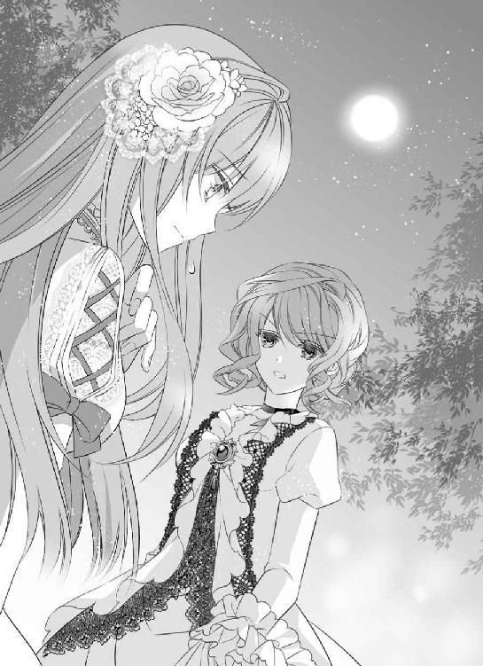

| 幸運の靴は誰の手に ～夢見るお針子は恋をする～ (マリーローズ文庫) | |
| 宇佐川ゆかり | |
| (2013) | |
この作品は縦書きでレイアウトされています。
また、ご覧になる機種により、表示の差異が認められることがあります。
一部の漢字が簡略字で表示されていることがあります。
この作品はフィクションです。
実在の人物・団体・事件などに
一切関係ありません。
「神様って不公平だわ」
深夜までの作業にダニエラが不満の声を上げるのと同時に、アリエルは今日最後のビーズをドレスに縫いとめた。
一日中針を動かしていると、肩がこってしまう。
そうならないように適度に休憩を入れるようにはしているけれど、納期が近くなってくるとそうも言ってられない──毎度のことだ。
「そんなに不公平かな？」
アリエルは肩を回しながら返す。もう真夜中近い。ランプの明かりで細かな縫い目を追っていた目も疲れを訴えていた。
ダニエラがこぼすのも当然で、彼女達は一日十時間職場──マダム・ロクシーのメゾン──に拘束されているのだ。今日みたいに納期ぎりぎりになると、それが十五時間を越えるのも珍しくはない。
「不公平でしょう。一年働いたってこんなドレスは手が届かないんだから」
ダニエラの視線の先にはここ何日か二人が必死に縫っていたドレスがかけられている。淡い黄色から濃い黄色へと数種類の生地を重ねたスカートを持つドレスは、ある伯爵家の令嬢の注文だった。
胸元は広く開いていて、数えきれないほどのビーズが縫いつけられてきらきらとしている。何重にも重ねられたスカートの裾はふわりと広がっていた。本来なら裾をぐるりと囲むはずのビーズはまだ半分にも届いていない。
「それでもちゃんとしたベッドで眠ることができて、お腹いっぱいご飯が食べられるんだからありがたいと思わなきゃ」
裁縫道具を片づけながらアリエルは笑った。明るい茶色の髪、榛色の瞳の彼女は、同僚の少女達と比べると一回り小さく見える。
孤児院で育ったから栄養が足りていないのだというのがアリエルの言い分だった。
「それに、そんなドレスを買ったって、着ていく場所がないでしょ」
ダニエラの分まで裁縫道具を片づけたアリエルは、腰に手をやる。一日中作業台にかがみ込んでいたものだから、腰にも負担が来ていた。
「あんたってのんきでいいわね」
「早く行こうよ。賄いなくなっちゃうよ？」
あきれた口調のダニエラにはかまうことなく、アリエルは彼女をせかす。その日、最後まで作業室に残っていたのはこの二人だった。
二人が働いているのは、ブロンデール王国一のメゾンだ。お針子達にマダムとだけ呼ばれる彼女のデザインするドレスは、王国中の女性達を夢中にさせている。
アリエルも夢中になっている一人ではあるけれど、彼女自身がそのドレスを身につけることは生涯ないだろう。ダニエラが言っていたように、一年働いても手の届くような品ではない。
それでも美しい布に触れて、綺麗なドレスを仕立てていく作業はアリエルにとっては楽しいものだった。
どちらかと言えばマダムはけちけちとした女性だけれど、お針子達を店の上にある部屋に住まわせて、きちんと三食食べさせてくれる。
何より機嫌のいい時にはドレスを仕立てた端切れを分けてくれるのだから、これ以上の職場は滅多に見つからないとアリエルは思っている。今の生活に十分満足していた。
店の奥でパンとシチューの夕食を終え、アリエルとダニエラは自分達の部屋へと上がった。
さほど広くない部屋にベッドが四つ。他の二人は先に帰ってもうベッドに潜り込んでいる。
「うるさくしないでよ？ 明日も早いんだから」
部屋の入り口に一番近いベッドに丸まっていた少女が眠そうな声で言う。アリエルとダニエラはなるべく音をたてないように寝支度をしてベッドに入った。
翌朝も早かった。まだ暗いうちに起き出して、用意されたパンとミルクを流すように飲み込んで作業室に入る。いつもはもう少しのんびりしていられるけれど、納品前の時期は毎回大忙しだ。
注文した令嬢にドレスを渡すまで残された時間はわずかしかないから、必死に手を動かすしかない。
裾に大量のビーズを縫いつける作業は、どれだけやっても終わるとは思えなかった。
「本当にあなたって、黙々と針を動かすわよね」
文句一つ言わずにビーズを縫いつけているアリエルに向かってダニエラは指を振る。
「他に取り柄があれば違うことをしてたかもしれないけど、これしかないから」
自分の受け持ち分を終えて、アリエルはダニエラの方へと回った。
「続きは私がやるから、ダニエラは腰のリボンの方をお願いできる？」
「ドレスを注文に来たお金持ちが見初めてくれないかしら」
ぶつぶつと文句を言いながら、ダニエラはリボンを取り上げた。
「ダニエラならありえるかも」
そう言う間もアリエルの手は止まらない。ビーズを取り上げ、縫いつけ、次のビーズを取り上げ──と流れるように彼女の手は動いていた。
アリエルは自分の容姿が地味なのはよくわかっている。だからこそ、この職場での仕事を失いたくないのだ。他に特技もない。
ダニエラは美人だ。小柄なアリエルと違って背はすらりと高く、金の髪は天然のウェーブがかかっていて背中に流しているだけで十分様になる。
灰色の瞳はぱっちりとしていて、特に男性を見る時は色っぽい雰囲気を醸し出すし、唇は化粧をしなくても艶やかだ。
ドレスの注文に来た女性客が連れてくる親族の男性に言い寄られたことは何度もあるし、彼女なら玉の輿に乗ることが可能かもしれない。
「あなたを見初める男性が、いない方がおかしいんだってば。すぐにチャンスが来ると思うよ？」
そうアリエルが言ってやると、機嫌を直したダニエラは、リボンの周囲に細かな飾り縫いを施す作業に取りかかった。
それからは二人とも、黙々と作業を続ける。作業部屋にいる他のお針子達も同じように無言だった。誰も口を開こうとしないまま、時間は流れていく。
「アリエル、ちょっといらっしゃい」
マダムがアリエルを呼んだのは、昼休憩の少し前だった。こった肩と首をほぐしながらアリエルは作業室を出る。
マダムがいつも従業員達を呼ぶ私室ではなくて、特別な顧客をもてなすための客間に向かうのに不安を覚えながら後に続く。
何か失敗したのだろうか。ここ数ヶ月の間に手にかけたドレスを頭の中で繰り返し思い出す。いくら記憶をたどってみても、顧客自ら注意をしなければならないような失敗をした覚えはなかった。
「大切なお客様ですから、粗相のないようにしなさい」
そんな風に扉の前で言われたら、身体が強ばってしまう。一気に鼓動が高まるのを感じながら、アリエルはマダムに続いて客間に入った。
部屋に入って、真っ先に目に入ってきたのはソファに腰掛けている若い男性だった。十七歳のアリエルよりたぶん数歳上。明るい金髪はきちんと整えられていて、無表情にこちらを見つめている。
女性物ばかりとはいえ、仕立てのプロであるアリエルの目には彼が身につけているのは上質な品ばかりだということがすぐにわかった。
黒の上着は最近の流行に合わせて細身に仕立ててある。白いシャツは皺一つなくぴんとしていた。タイの色は同じく黒。
けれど、とアリエルの鋭い目は彼の観察を続けた。上質な品ばかりとはいえ、貴族の身につけるものではない──ということは、貴族の家に仕える者、もしくは商家の主といったところだろうか。
「シュヴァリエ様、こちらがアリエル・ペローでございます」
マダムが客人の前にアリエルを押し出した。彼の緑色の瞳がアリエルを捉え、アリエルは、その視線を避けるように頭を下げる。彼がアリエルに向ける視線に含まれる感情は──何なのだろう？
何故、彼がアリエルに用があるのか本人と対面してもまったく見当もつかなかった。今まで会ったことがない男性なのは確かだと言える。
「年は？」
短く切り出した彼の声は、低かった。鋭い視線とはうらはらに声音は柔らかくて、心地いい。
「......十七」
「この店に来る前は？」
「ディーリング孤児院」
孤児院での生活はあまり思い出したくない。顔をしかめながら、アリエルは返した。
「両親の名は？」
「知らない」
マダムがアリエルを小突く。
「申し訳ありません。腕はいいのですが、口のきき方も知らないような娘でして。ですから、まだお客様の前には出せないのです」
慌てて頭を下げたマダムは、もう一度アリエルを小突いた。アリエルはむくれて小さく頬を膨らませる。
「まあいいでしょう。孤児院の記録とも一致している。彼女がアリエル・ペロー本人であると確認できれば、それで問題ありません」
シュヴァリエ、と紹介された青年はアリエルの方に手を差し出す。
「フランシス・シュヴァリエだ。君のご家族の依頼で迎えに来た──君のおじい様だ」
握手を返しながら、アリエルは思った。
一人で生きていくしかないと思っていたけれど、自分に家族がいたなんて。家族に会えるなんて、夢のようだ。
胸を高鳴らせるアリエルは、この先に何が待ち受けているのかまったく予想していなかった。
それから先はあっという間だった。フランシスに腕を掴まれて、アリエルは部屋の外へと連れ出される。
「まだ仕事が残っているの！」
強引な彼のやり方にアリエルは反発した。フランシスは、冷たい視線でアリエルを見下ろしている。身長差があるから、思いきり上に彼の顔があるのもまたアリエルの苛立ちをつのらせた。
「君はおじい様に会いたくないと言うのか」
「そうは言ってないでしょ！」
やりかけの仕事をダニエラ一人に押しつけるわけにはいかない。彼女はビーズを縫いつけるなんて細かな仕事は嫌いなのだ。せっかくの大仕事なのにとアリエルは不満になる。
きっと、フランシスからすればドレスを縫うなんて仕事のうちには入らないのだろうけれど、アリエルにとっては大切な仕事だ。途中で放り出すなんてできない。
「さっきも説明しただろう。俺は急いでいるんだ。君はデュアメル様のたった一人の孫娘かもしれないんだから」
「それが事実だったら、大変なことだけど......でも、仕事が残っているの。納期ぎりぎりだし、ダニエラ一人じゃ無理！」
「マダムが別の人を手配するから大丈夫だ」
ちっとも大丈夫じゃない！ 心の中で叫びながら、アリエルはフランシスに半分引きずられるようにして廊下を進む。何でこの人は自分のペースで物事を進めようとするのだろう。怒りは大きくなるけれど、彼の雰囲気に呑まれて逆らうこともできなかった。
紹介されたすぐ後、客間でフランシスはアリエルを迎えにきた経緯を説明してくれた。
フランシスの雇い主、ポール･デュアメルの孫娘は、十七年前寝かされていた揺りかごから攫われてしまったのだという。
犯人は乳母として雇われていたフィリーという女性だろうとすぐに見当はついたのだが、彼女は早々と姿をくらませた後だった。
デュアメル氏に雇われた者達がフィリーの行方をつきとめた時には、彼女はもう亡くなっていて、連れ出された孫娘は、近所の人の手によって孤児院に預けられた後だった。そこまで知ることができたのは、つい先日のことだったという。
「デュアメル商会の創始者の孫娘なんて言われても......急には信じられないもん」
デュアメル商会は、ブロンデール王国内で靴を商う店を展開している会社だ。
創業してすぐ、女性向けに鮮やかなピンク色の靴を売り出して急成長したことはアリエルも知っている。
それまで黒や茶が当然とされていた靴の世界にもたらされた鮮やかな色合いの靴は女性達の間で大人気となり、商会はすぐに国内有数の靴屋へと成長したのである。
すぐに他の靴屋も後を追おうとしたのだけれど、デュアメル商会は素早かった。ピンクの次には青、その次は黄色、と次々に新たな色の靴を売り出して他の追随を許さなかった。
今ではいろいろな色の靴が出回っているけれど、ピンクは今でも一番人気で『デュアメル・ピンク』の靴を一足持つというのは、若い女性達の間では当然のこととされていた。
アリエルも一足ほしいとずっとお金をためていたけれど、日々の細かな支出が続いてしまってまだ手が届かないでいる。
そんな大金持ちの孫娘だと言われても、現実のことなのだろうかと疑ってしまう。
「まだ、可能性があるというだけの話だ。デュアメル様が君に実際に会ってみて、本物かどうか確認をとるだろう」
彼の口調はぶっきらぼうだ。フランシスはアリエルをせかして、彼女達が寝泊まりしている部屋に続く階段を上る。すぐに持ち物をまとめろとアリエルに言うと、見張るように入り口の側に陣取った。
じっと見られていると思うと緊張する。持ち物をまとめろと言われても、アリエル個人の物はそう多くはない。数枚の普段着と、外出着、下着やハンカチなどをまとめればそれで終わりだ。
それにブラシとマダムに分けてもらった端切れを古い鞄に押し込んで、アリエルは顔を上げた。
フランシスは、表情を変えずにアリエルの暮らしていた部屋の中を見回していた。支度が終わったと知ると手招きする。
それに応じてアリエルは部屋を出たが、出発前に一つだけやらなければいけないことがあった。
作業室に入って、必死にリボンに模様を縫いこんでいるダニエラの手をとめさせる。
「どうしたの？ マダムに呼ばれていったと思ったらちっとも戻ってこないし。納期に間に合わなかったら──」
「ごめんね」
彼女の言葉を遮ると、アリエルはダニエラの両手を取った。
「私の家族が見つかったんだって。まだ、本当の家族かどうかわからないんだけど......確認するために、すぐに行かないといけないの。だから......ごめんね？ 仕事押しつけることになっちゃって」
ダニエラの目が丸くなった。
「それにしたって急じゃない。もう！ 納品が終わるまで待ってくれればいいのに」
「私もそうしたいんだけど......」
口ごもったアリエルの肩に、フランシスが手を置く。そのまま彼は、ダニエラとアリエルの間に割り込んできた。
「デュアメル様は十七年間、ずっと探し続けていたんだ。本物か否か早く確認したいのは、当たり前のことだろう」
「デュアメル様って──まさか、デュアメル商会の？」
一オクターブ高くなった声で、ダニエラは叫ぶ。作業室内にいた全員の視線が突き刺さるのを感じて、アリエルは身を小さくした。
「そう、デュアメル商会の創始者だ。マダムがうるさく言わないのもわかるだろう？」
「......おめでとう」
跳ね上がったばかりのダニエラの声が、今度は急降下して沈みこむ。低い声で彼女は言った。
「元気でやるのよ。手紙、どこに出したらいい？」
「それは......」
デュアメル家の住所なんて知らない。アリエルが口ごもっていると、フランシスが変わって答えてくれる。
「ブランストンのデュアメル商会本店に送ってもらえれば、彼女に届くように手配できる」
「......そう。じゃあ、これからは私達とは全然違う生活になるのかしら？ お金持ちになったら、私のことなんて忘れちゃうんじゃないの？」
ダニエラの目が、妬ましげに光るのをアリエルは見た。
ダニエラにしてみれば、一気に形勢が逆転したというところなのだろう。店に来るお金持ち達の一人に見初められる可能性はダニエラの方がはるかに高かった。
けれど、アリエルがデュアメル氏の孫娘であるというのなら──現在彼に直系の親族はいないから、アリエルが彼の財産を受け継ぐことになる。
「そんなことない！」
アリエルは叫んだけれど、ダニエラはまたね、とだけ言うと視線を落として手を動かし始めた。これ以上、アリエルと話すことなどないと言いたげに。
友達だと思っていたのに。これからも友達でいられると思っていたのに。
ふさぎ込んだアリエルは、自分が乗り込んだ馬車がとても立派なものであるのにも気がつかなかった。
大金持ちの孫娘かもしれないというだけで、周囲の見方が変わるなんて──向かい側の席に座ったフランシスと顔を合わせるのも怖くて、視線を落としてしまう。
膝の上に抱えた古い鞄だけが頼れる物のように感じられた。
「屋敷に着いたら真っ先に、そのひどい服を何とかしなくては」
じろじろとフランシスはアリエルを見回した。ひどい服と言われて、アリエルは鞄を抱えたまま身体を縮める。
自分の着ている物はそんなにひどいだろうか。大きな白い襟のついた黒いワンピースは確かに流行遅れだ。
それでもアリエルの身体にはぴったり合っているし、きちんと洗濯してアイロンもかけてある。多少くたびれているとはいえ破れているところなんてない。
直接お客様と接する機会のあるお針子には、マダムはそれなりの服を与えていた。けれど、アリエルはそうではないから着る物は自分で用意するしかない。できる範囲で最上級の品を買い求めたのだ。
今のアリエルには十分なもので、これをひどいと言われても──と反発する気持ちがちらりと芽生える。
「屋敷に仕立屋を呼んで、どのくらいで仕立てあがるんだ？」
聞かれても、アリエルにだって答えられない。フランシスがどの程度の衣服を想定しているのかがまったくわからないのだから。
「マダムに用意してもらえばよかったか」
しくじったというようにフランシスは額に手を当てた。
マダムの店では舞踏会用のドレスが中心で、普段着るような服はごく一握りのお得意さまのためだけに作る。
フランシスが頼んだところで、アリエルの身体に合うような服がすぐに出てくるとは思えなかった。
そう言うと、フランシスはアリエルを無言で見返した。睨まれて、アリエルは膝の上の鞄を抱え直す。
フランシスとは、絶対気が合わないと思う。祖父であるという人物も、もう少し優しそうな人をよこしてくれればよかったのに。
いつの間にか馬車は町を出ていた。
ブランストンまで約三日。その間ずっと彼と顔を合わせていなければならないのかと思うと、アリエルは憂鬱になるのを押さえることはできなかった。
走り続けた馬車がようやくとまったのは、日も暮れようかという頃だった。昼食を食べそびれてしまったから、胃が空腹を訴えている。
マダムの店にいれば、昼食を食べそびれるなんてことなかった。さっさと連れ出したフランシスが恨めしい。
孤児院にいた頃は罰として食事を抜かれるのはよくあることだったから、空腹には慣れている。けれど、しょっちゅう味わいたいものでもない。
鞄を持って馬車から降りたとたん、ふらりとする。よろめいたところを、フランシスが受け止めてくれた。
「どうした？」
「......お腹、空きすぎただけ」
本当は違う。一食や二食抜いたところでたいしたことはない。フランシスに店から連れ出された昼前から、ずっと緊張しながら座りっぱなしで、強ばってしまった身体がいうことをきいてくれなかっただけだ。
「昼食はまだだったのか」
「そう。昼食を食べたのか、きいてくれなかったじゃない」
むくれた口調でアリエルは自分の鞄を取り上げた。フランシスに八つ当たりしているのはわかっている。馬車で過ごした時間は快適とは言えなかった。
「──悪かった。マダムはすませたと言っていたから、てっきり君達ももうすませたものだと」
意外にも素直に詫びられて、アリエルは目をぱちぱちとさせる。申しわけなさそうに首を縮めた彼は、ひょいとアリエルの鞄を取り上げた。
「待って、自分の鞄くらい自分で──」
「こんな重い荷物を女性に持たせるわけにはいかないだろう」
彼のもう片手には、彼の荷物と思われる黒い鞄が握られていた。
「でもねえ、えぇと──」
何と呼びかけたらいいのかわからなくて、そこでアリエルは口ごもってしまった。
「フランシス。名前で呼んでくれればいい」
それから彼はアリエルを促して、宿の方へと向かう。荷物を持ってもらうなんて今までに経験がなかった。お姫様のように扱われたように感じられて、少しだけどきりとする。
入って左手はロビーのようだった。並べられた布張りの椅子に腰掛けた人達は、上品な手つきでカップを口に運んでいる。彼らの話す声はとても低く、高い天井に吸い込まれてしまって何を話しているのかまったくわからなかった。
「ここでしばらく待っていてほしい」
フランシスは椅子の一つにアリエルを座らせた。すぐに静かな足取りで宿の従業員と思われる男性がやってきて、フランシスをカウンターへと案内していく。
「お嬢様、お飲み物はいかがですか？」
入れ替わるように別の男性がやってきてアリエルに声をかける。それにはいらない、と首を横に振っておいてアリエルはフランシスを目で追った。
彼はカウンターの中にいる女性に話しかけている。それを確認して、アリエルは彼らから視線を外した。
それより店内のインテリアの方がはるかにアリエルの興味をひいた。値段のことまではわからないが、質のいい、悪いくらいはある程度わかる。マダムの店で本物を見てきているのだから。
床には茶の絨毯が敷き詰められている。その絨毯には、白に近い明るいものから黒に近いこげ茶色まで茶系の色を何色か使って複雑な模様が織り込まれていた。きちんとした職人の手によるものであろうとアリエルは推測する。
マダムの店にも同じような絨毯が敷かれていた。これほど大きなものではなかったけれど、模様の入り方といい、踏んだ時の感触といい、よく似ていた。
このロビーに置かれているテーブルと椅子はたぶんアンティークだろう。いずれもよく手入れされている。
「では、お嬢様。こちらへどうぞ」
カウンターの奥から出てきた女性は、この宿の女将だと名乗った。この宿には不釣り合いなアリエルの衣服は気にした様子もなく、二階へ案内してくれて一番奥の部屋に通す。鞄はベッド脇に運ばれていた。
「お連れ様は隣のお部屋にお泊まりですから──すぐに軽食をお持ちいたします」
軽食という言葉に空腹を改めて思い出した。食べられるのなら、何でもよかった。用意されていた洗面器の水で顔と手を洗い、ブラシを探し出して髪を結い直す。
それから鞄の中から寝間着を引っぱり出して、椅子の背にひっかけたところで扉がノックされた。扉を開くと、フランシスが立っている。
「相手が誰かも確認しないで扉を開くな。強盗だったらどうする？」
相手が強盗だったところで奪われるものは持ち合わせていないけれど、不機嫌な口調で言われて、アリエルはしゅんとなってしまった。
気を取り直して彼を招き入れようとしても、彼は扉を開いたままそこから動こうとはしない。
「今夜はここに泊まる。それから女将が何着か服を持ってきてくれるから、身体に合いそうな物を選ぶんだ」
「待ってよ、フランシス！ 私そんなにお金持ってな──」
アリエルが最後まで言う前に、それはフランシスに遮られてしまった。
「費用の面は心配しなくていい。女将には十分な礼をするから大丈夫だ」
「でも、私が本物じゃないってことになったら？ 返せって言われても返せない！」
フランシスの目元がおかしそうに緩んだ。そうすると、きつい彼のエメラルド色の瞳が少しだけ柔らかくなる。思わず見とれかけて、アリエルは慌てて視線を壁にかけられている絵にやった。
ただの静物画。茶色の花瓶に数種類の花が活けられている様を描いただけのものだ。まるで珍しい絵を見ているかのようにそれを見つめて、彼から意識をそらせる。
「よそ見をするな。人の話は最後まで聞け」
アリエルは視線を正面に戻す──彼の顔を見ることはできなくて、タイの結び目に視線を集中させた。
「もし、君が本物じゃなかったとしてもわざわざデュアメル様のお屋敷まで足を運んでもらうんだ。そこは気にしなくていい。服を返せとも、金を払えとも言わないから。服は君の物だ」
「......本当に？」
フランシスはうなずく。
そこへ、サンドイッチとスープの皿を盆に載せた女将が戻ってきた。アリエルの部屋のテーブルにそれを置いた彼女は、フランシスの部屋にも同じ物を運ぶと言い残して階下に戻っていった。
食事を終えたアリエルの目の前に運ばれてきたのは、大量の衣類だった。正装のドレスではない。
旅装にむいた簡素なデザインのものばかりだが、上質な品であることがわかった。今着ているものと違って、この宿に宿泊してもさほど場違いには感じられないだろう。
袖を通した気配が見受けられるから、新品ではない。
「あの、これは、どこから......？」
「娘のものですわ。お嬢様はとても細身でいらっしゃいますから合うかどうか心配ですけれども」
「......細すぎってよく言われるの」
「そんなことありませんわ。とてもすらりとしていらっしゃいます。お好きな物をお持ちくださいませ」
女将の持ってきてくれた衣類の中から、アリエルは二着を選び出した。ミルクをたっぷり入れたコーヒーのような柔らかな色合いのワンピース。もう一着は、暗い灰色のワンピースだった。
あまり派手な色の服を着ると、フランシスに文句を言われかねないと思ったから、他の服はやめておいた。
「......それほどぶかぶかというわけではありませんね。よかったですわ」
ほっとしたように女将は言った。
「私が服をもらってしまったら、お嬢さん困らない？」
手にしたワンピースは手触りがよかった。さすが上質の品だとアリエルは感心し、本当にもらってしまってもいいのだろうかと心配になる。
女将はころころと笑った。十分以上の対価をフランシスは支払っているのだという。
「新しい服を買えると娘も喜んでおりましたわ。ですから、ご心配なく」
アイロンをかけて運ばせると言うと、女将は持ち込んだ衣服を抱えてアリエルの部屋を去った。
翌朝には、きちんとアイロンをかけられた状態で二着とも部屋まで届けられた。今まで自分が着ていたワンピースは鞄に詰めて、運ばれてきた服に身を包む。
「......だいぶましになった」
手放しで誉めてもらえるとも思っていなかったけれど、フランシスの反応はあんまりだった。朝食のために降りた食堂で顔を合わせた彼は、灰色のワンピースを着たアリエルにはちらりと目をくれただけ。
「何着選んだんだ？」
「今着ているのと、あともう一着。お屋敷に入る時はそっちを着るつもり」
「......遠慮したのか？」
フランシスは眉を上げる。アリエルは勢いよく首を横に振った。
「そうじゃなくて......似合わない色が多かったから」
フランシスは眉を寄せる。合わない色、と言われても彼にはぴんとこないらしい。しばらくそのままだったけれど、肩をすくめた。
「二着あれば当座は間に合うか。朝食を食べたらすぐに出発しよう」
昨日ほどは怖いと思わなかったけれど、やっぱりフランシスと馬車で二人きりというのは気詰まりだった。
膝の上に鞄を抱えて、馬車の振動に身をまかせる。二人の間に会話はほとんどなくて、彼の前で油断しすぎかもしれないと思いながら、アリエルはたびたび眠りに落ちた。
一刻も早く戻りたいというフランシスに、アリエルは逆らうつもりはなかった。時々馬車を乗り換えて、先を急ぐ。
「お屋敷に着くのは、明日の夜になると思う」
予定していた宿屋に到着したのは、日付がとっくに変わった後だった。途中食事を取る時間も惜しんでいたから、今日も夕食はまだ食べていない。
「寝る前に軽食でも運ばせようか？」
「ありがと。でもいらない」
アリエルは首を横に振る。
「大丈夫か？ 空腹はつらいんだろ」
昨日ふらついたことを口にされて、アリエルの頬に血の色が上った。
「あれは、たいしたことないし！ 今日はずっと座っていたから、お腹空いてないの！」
つい、口調がきつくなる。フランシスが、少しだけむっとしたように見えた。
「あ......あなたは、食べなくても大丈夫？」
質問を投げてから、怒らせたかもしれないと、アリエルは慌てて口調を改めた。彼を怒らせるのは怖い。
「いや、何か軽い物を部屋に運んでもらおうと思う──気が変わったのなら今のうちに言ってもらった方がいい。後でもう一度頼むんじゃ二度手間だ」
「いらない。......あ、でも」
アリエルは少しだけ迷ってから頼んだ。
「もし......迷惑じゃなかったら......ホットミルクだけもらえたら嬉しい。砂糖も蜂蜜も入れないで、温めただけの」
「迷惑、か」
フランシスはおかしそうに笑った。
「確かに夜は遅いが、ホットミルクぐらいどうにでもなるだろう」
不安そうに彼を見ているアリエルに向かって彼は付け足す。
「心配ない。チップをはずんでおくから」
アリエルが荷物を広げている間に、頼んだホットミルクが運ばれてきた。荷解きを途中でやめて、アリエルは大きなカップを手に取る。じんわりと伝わる温かさが、気持ちを落ち着けてくれた。
ちょうどいい温度に温められたそれを、一口ずつ飲んでいく。胃が温まって、眠気が忍び寄ってきた。昼間馬車の中でずっと寝ていたのに、まだ眠くなるらしい。
寝支度をすませ、空にしたカップを廊下に出してから、アリエルはベッドに潜り込んだ。
翌日も同じ灰色のワンピースを着た。今日になってみると古い靴が目立つような気がして、アリエルは靴をぴかぴかに磨いてからフランシスに合流する。
「......昨日と同じ服か」
感心しないと言うようにフランシスは首を振る。
「昨日言ったでしょ。もう一枚は、おじい──デュアメルさんと会う時に着るの」
アリエルはぷいと顔を背けた。
「まあいい。今日も強行軍だ。昨夜知らせを受け取ったが、デュアメル様は君が到着するのをとても楽しみにしているらしい」
自分の祖父かもしれない人に、もうすぐ会える。
そう思うと、わくわくする。ずっと一人だと思っていたけど、自分にも家族がいるかもしれない──早く会いたい。
顔を合わせたら、どんな話をすればいいのだろう。アリエルにわかるのは、針と糸と布のことばかり。祖父を相手に最新流行のファッションの話なんて通じるのだろうか。今さら疑問に感じられてくる。
「ねえ、フランシス」
今までと同じように向かい合って馬車に座るなり、アリエルはたずねた。
「デュアメルさんってどんな人？」
「どんな人、か」
説明が難しいというようにフランシスは考え込みながら、両手を組み合わせた。
「仕事についてはとても熱心だ。でも、今は仕事の大半を俺達に任せている。むろん、最終的な決定はデュアメル様がするんだが、昔のように全国の店舗を飛び回って視察するなんてことはしなくなった」
「ふぅん」
アリエルはうなった。アリエルの周囲にいる仕事熱心な人と言えば、マダム・ロクシーが一番だ。あの人は自分の店を一軒持っているし、雇っている針子達をびしばしとしごく。
祖父も、マダムのように怖い人だったらどうしよう。そんな不安をフランシスの目から隠そうと、鞄の蓋を閉じたり開いたり、意味のない動作をしてみた。
「仕事には厳しいが、怖い人じゃない」
不安がっているアリエルを笑うように、フランシスは先を続ける。
「慈善活動にも熱心な方だよ。近隣の孤児院や学校にもたくさんの寄付をしている。優秀な学生には奨学金を与えたりね。血縁者には恵まれてないとは言えるかな。今のところ生き残っている身内は、甥の息子にあたるアラン・デュアメルだけだ。君をのぞけば」
「......家族が少ないって寂しいわね」
「そうかもしれないな」
「あなたは、デュアメルさんのところで暮らしているの？」
「アランと俺と、あともう一人。レイモン・ドローネー......彼は君と同じ年？ いや、君より一歳下だったかな」
フランシスの口から出た名前は、アリエルにとってはまったく覚えのないものだった。それでも、祖父の他に親戚がいるというのは嬉しい。
「アランって人は、デュアメルさんの親戚でしょ？ じゃあ、あなたと......ええと、レイモンって人は？」
「レイモンはデュアメル商会の店で働いている店員の息子。俺はデュアメル様が支援していた学校の校長の息子だ。俺達に目をかけてくださって、デュアメル様の仕事の手伝いをやらせてもらっている。秘書──が一番近いかな。命じられれば、何でもやる」
「私を迎えに来たみたいに？」
フランシスはそれを否定しなかった。それ以上きくことがなくなって、アリエルはまた鞄の蓋を開く。着いたら何が待っているのか、今さら不安になってきた。
◇◆ ◇◆◇◆ ◇◆
昼食を途中に立ち寄った店ですませ、屋敷に着いたのは夕食少し前の時間だった。フランシスが予定していたより早い。アリエルの祖父だというデュアメル氏は、まだ仕事部屋にいるという。
「──これが俺の親戚か」
フランシスに連れられて、居間に入ると、背の高い青年が近づいてきた。アリエルを見下ろしている彼が、アランなのだろう。
赤みがかった明るい茶の髪は長めで、首の後ろで一つに束ねている。灰色の瞳は意志が強そう──というよりは傲慢な雰囲気を漂わせていた。どちらかといえば細身なフランシスと違って、肩幅も広い。
「どうした？ 口がきけないのか？」
つめよられて、アリエルは鞄を胸の前に抱えて一歩後退する。少しくらいは歓迎してもらえると思っていたのに、彼はアリエルがこの場にいるのが気に入らないようだった。
「怖がらせてもしかたないだろう。とりあえず孤児院の記録は確認してきた。あとはデュアメル様が話をしてからのことだ」
思いがけず、フランシスがとりなしてくれた。
「ひとまず荷物を客用寝室に──デュアメル様との顔合わせは、その後だ」
祖父とともに働いている青年はもう一人いるはずだが、彼はこの場にはいなかった。アリエルの鞄を持ち、大股に歩いていくフランシスの後を、アリエルはちょこちょことついて行く。
屋敷の中は外から見た時よりも広く感じられた。赤い絨毯の敷かれた廊下はどこまでも続いているようで、迷子にならずにすむのかと不安になる。
「寝室に洗面用の湯を運んであるはずだ。身支度を終えたらベルを鳴らしてくれ。俺がデュアメル様の前まで案内する」
フランシスが立ち止まったのは、立派な扉の前だった。何の木材かまではわからないが、細かな彫刻が施されている。
鞄を手渡されたアリエルは、彼が開いてくれた扉の中におそるおそる足を踏み入れた。
真っ先に目に飛び込んできたのは立派な天蓋付きのベッドだった。何かの間違いではないかと、入ってきたばかりの扉を振り返る。
振り返った時には、扉はすでに閉められていた。
「本当にここでいいのかな......？」
アリエルはつぶやいて、室内を見回す。磨き込まれたテーブルの上に水差しと洗面器が置いてあるのを見て、この部屋で間違いないのだろうと結論づけた。
アリエルの基準からすれば、あまりにも豪華な部屋だ。鞄を置いて、女将にアイロンをかけてもらった薄茶色のワンピースを取り出す。畳まれて少し皺の寄ったそれを丁寧にベッドに広げて置いた。
顔を洗ってさっぱりしたところで、それに着替える。髪をゆっくりととかして、首の後ろで結った。
ここまで来て、間違いだったらどうしよう。
いつか両親が迎えに来てくれると自分に言い聞かせようとはしていたけれど、本当に誰か迎えに来てくれるなんて思ってもみなかった。
緊張で、手に汗が滲む。
祖父だという人物と顔を合わせるのが怖かった。受け入れてもらえたらいい──だけど、そうじゃなかったら？
行儀悪くベッドに座り込んで、アリエルは何とか勇気を振り絞ろうとした。祖父、という人物。どんな人なのだろう。
一代で国内の女性達をとりこにする靴店を築き上げた人物だ。フランシスも仕事に対しては厳しい、と言っていた。
けれど、慈善事業に熱心で。見込みのある若者を自分の屋敷に住まわせて面倒を見ているというのなら、仕事を離れれば優しい人なのかもしれない。
大丈夫、怖くない。
何度も言い聞かせて、呼吸を整えてから立ち上がる。言われていたようにベルを鳴らした。
「支度はできたようだな」
呼ばれてやってきたフランシスは、アリエルが廊下に出ると上から下まで視線を走らせた。商品を値踏みしているような冷静な視線に、何も間違っていないといいのにと祈らずにはいられない。
「問題なさそうだ。行こうか」
先に立った彼は、来る時にやってきた廊下を今度は逆方向に進んでいく。途中で何度か曲がられて、自分の現在地がわからなくなった。
帰りは部屋まで送ってくれるといいけれど。アリエルが心の中でため息をついた時、フランシスは足をとめた。
アリエルは、肩に力が入るのを自覚する。不安になってフランシスに視線をやると、彼はアリエルには見向きもせず扉をノックしていた。
「アリエル・ペロー嬢をお連れしました──デュアメル様」
まだ、心の準備ができていないなどと口にするわけにもいかず、アリエルはおそるおそる室内に足を踏み入れる。
そこは、窓以外の全ての壁面を書棚が占めた部屋だった。入って右手に大きなデスクが置かれている。その向こう側に白髪の老人が腰を下ろしていた。
「......こんにちは」
何と言っていいかわからなかったから、アリエルはただそう言って頭を下げた。
顔を上げると、老人はぎくしゃくとした動作でアリエルの前にやってきた。
「息子によく似ている......この瞳は、息子の瞳そのものだ」
アリエルの頬を両手で挟んで、彼は瞳をのぞきこんでいた。皺の寄った顔の中央、アリエルのものとよく似た榛色の瞳にアリエル自身の顔が映っているのが見える。
「まるで息子が生き返ったようだよ、本当によく似ている」
「あの──」
強く抱きしめられて、息が詰まった。それでも、抱きしめてくれる腕の温かさにアリエルの胸も熱くなる。
「本当におじいちゃんなの？」
顔を離した彼は、泣き笑いのような表情でアリエルを見つめた。
「ああ、そうだよ。おじいちゃんだ。苦労させたな」
「よろしいのですか、デュアメル様。孤児院の記録の写しもお持ちしましたが──」
再会を喜び合う二人の前にフランシス一人、冷静だった。書類挟みをデスクに置き、二人から一歩離れたところで様子を見守っている。
「君の調査で、間違いはなかったのだろう？」
「彼女を育てていた女性は、こちらのお屋敷で乳母をしていたフィリーで間違いないでしょう」
「あの女を雇うんじゃなかった」
また、祖父の目に涙が滲む。アリエルはそっと祖父の顔を見上げた。
「お父さんと──それに、お母さんは──？」
「二人とも死んだんだ。お前が戻ってきてくれるのを、祈らない日はなかったよ、二人とも──毎日神様にお祈りしていたんだ」
再会した祖父は、アリエルを抱きしめたまま離そうとはしなかった。手を放したら、アリエルが消えてしまうのではないかと恐れているかのように。
「明日にでも、一緒に墓参りに行こう。二人ともお前が帰ってきたと知ったら喜ぶだろう」
「......生きているうちに会いたかった」
ぽつりとアリエルが言うと、身体に回された祖父の腕に力がこもる。
「そうだな──本当に、可哀想に。よしよし、これからはおじいちゃんのところで安心して暮らすんだ。お前にぴったりのお婿さんも探してあげよう。そうして、皆でこの屋敷で暮らすんだ」
「お婿さんはまだ早いと思うの」
アリエルの言葉に祖父は大笑いをして、そして夕食は食堂で一緒にとろうとアリエルの頭を撫でた。
夕食前に引き合わされたもう一人の同居人、レイモン・ドローネーは小柄な少年だった。黒い髪と同じ色の瞳が肌の白さを際だたせるのか、繊細な雰囲気というよりは、頼りなさの方が先に立つ。聞けばアリエルより一歳年下だという話だった。
「孫のアリエルだ。仲良くしてやってくれ」
祖父にそう言われて彼は、アリエルに、
「よろしく」
と気弱そうな笑みを向けた。
夕食ができるまでの間、居間でアリエルは彼と時を過ごすことになった。戻ってきたばかりのフランシスは、改めて孤児院での調査報告をするため祖父とともに仕事部屋に消え、アランは少し離れた場所で本を読んでいる。
アリエルとレイモンは小さなテーブルを挟んで、布張りの椅子に腰掛けていた。
「あなたは何をしてるの？」
先にたずねたのはアリエルだった。彼の方は視線でテーブルに穴が開いてしまうのではないかという勢いで、一点を見つめ続けていた。
「やっぱりおじいちゃんのお手伝い？」
「それもあるけど、まだ学生だから──」
レイモンは途中で言葉を切ってしまった。学校のない日は仕事の手伝いをしているが、週のうち半分は近くの学校に通っているらしい。
「大学に行く準備をしているんだけど、どうかな。行けたらいいんだけど」
「行けないの？ お金ないから？」
率直なアリエルの問いに、彼は目を丸くする。それから慌てて首を横に振った。
「そうじゃない。費用の面は関係ないんだ。学費はデュアメル様が払ってくださるし──ただ、自信がなくて」
「そうなんだ」
祖父にとって甥の息子にあたるアランはともかくとして、フランシスもレイモンも、勉学に関係する費用は全て祖父が払ってきたのだそうだ。それとこの屋敷にいる間の生活費も。
「おじいちゃんってすごいんだね」
素直な感想だった。
アリエルの働いていた店に来る顧客は富裕層の人間ばかりなのだけれど、他人に援助しているという話はまず聞いたことがない。孤児院や貧しい人たちにいくらかの寄付をしたという話ならよく出るけれど、あくまでもその時だけのこと。何年にもわたって援助している人なんて、現実に存在しないと思っていた。
「君、本当に孫娘なの？」
「わかんない」
レイモンの問いに、アリエルは率直に答える。視線の隅で、アランが本から顔を上げるのが見えた。
「わかんないって、証拠があってのことなんだろ？ それとも、大叔父様の財産狙いか」
本をテーブルに置いて、アランが大股にこちらに近づいてくる。アリエルの腰掛けている椅子に片手をかけて、彼は身を屈めた。
「証拠なんて知らない。フランシスに言われて、連れてこられただけだもん」
「本物なのか？ レイ、お前はどう思う？」
「......どう思うって言われても......」
年齢差や体格の差を考えれば無理のないことではあるが、レイモンもアランは怖いらしい。びくびくとしながら、何とか受け答えしている。
「フランシスに聞けばいいじゃない。私を連れてきたのは彼なんだから。今、おじいちゃんに報告してるんでしょ？」
「おじいちゃんと呼ぶな！ 本物でもないくせに──！」
アランが声を張り上げて、アリエルは身を縮めた。
自分が本物なのかどうか、アリエルだって疑っている。それでもここに来たのは、家族がいるなら会いたいから。
「ほどほどにしとけ、アラン」
タイミングよくやってきたのは、フランシスだった。
感情を見せない目で椅子に座っているアリエルとレイモンを眺め、それからアリエルを脅しているように見えるアランに向かって首を振る。
「デュアメル様は本物だと認めたぞ。亡きクロード様にそっくりらしい。孤児院に入る前に、彼女と暮らしていた『母親』が、乳母をしていたフィリーと同一人物であることも間違いなさそうだしな」
ちっと舌打ちをして、アランはアリエルから離れる。居間を出て行きかけて、彼はアリエルの方を振り返った。
「そう言えば、お前『靴』はどうしたんだ？」
「靴？ 靴ならはいてるけど？」
アリエルがひょいと持ち上げた足は、黒い靴をはいている。今朝宿を出る前に磨いたばかりだから、輝いてはいるけれど、そろそろ限界だ。新しい靴を買う算段をしなければ。
「ふん、わからないならいいんだ」
そのままアランは居間を出て行ってしまう。
「変な人......私、何か間違ってる？」
その問いに答えてくれたのはレイモンだった。
「たぶん、アランが言っていたのは『幸運の靴』のことじゃないかな」
「『幸運の靴』って？」
「デュアメル商会は、ピンク色の靴を売ることで大きくなったでしょ？ だから子どもが生まれたら、幸せになるようにって祈りをこめて、最初に『デュアメル・ピンク』で染めた革で靴を作るんだって。赤ちゃんが男でも、女でも。それが『幸運の靴』」
「......でも」
孤児院に入った時は、自分の持ち物なんてほとんどなかったはずだ。五歳の頃だったから、記憶はうっすらとしか残っていないけれど、近所の人たちが荷物をまとめて孤児院まで連れて行ってくれたのだと、あとから院長先生に聞いた。
「孤児院に持って行ったのは、着替えと、たぶんぬいぐるみが一つだけじゃないかな。着替えもぬいぐるみも、小さい子にあげちゃった」
孤児院に行く前も、生活は豊かではなかったように思う。きちんとした革靴なら、それなりの金額にはなっただろうし、さっさと売られてしまったのかもしれない。
「持っていてくれれば、間違いなくデュアメル様の孫娘だという証拠になったんだがな」
フランシスはそう言うけれど、そんなことを言われても困る。アリエルはむくれて唇を突き出した。
「記録だけじゃなんとも言えないが、デュアメル様が本物だと言うのなら俺としてはこれ以上口を挟むつもりはない」
ちらりとアリエルに冷たい視線を投げかけて、フランシスもまたアラン同様に居間を出て行く。
「......迎えに来てくれたのはありがたいと思うけど、あの人キライ」
「そんな風に言わないで」
レイモンは、フランシスをとりなした。
「彼、けっこう優しいところもあるんだから」
「本当に？」
疑い深げに眉を上げると、レイモンは笑う。アランもフランシスも嫌な奴だけど、レイモンとだけは気が合うかもしれないとアリエルは思った。
その日の夕食は最悪だった。
家での食事なのだから気楽な格好で、と言われたけれどアリエルにとっての気楽な格好などで食堂に入ったら絶対にフランシスやアランに何か言われるだろう。
そう思って、手持ちの服の中で一番いい物──つまり、祖父と対面した時のワンピース──のまま食堂に入った。
食堂まではレイモンが案内してくれたけれど、迎えに来てくれた彼は準正装に身を包んでいて、それだけで自分が見劣りするのがわかってしまう。それに、食堂までの道のりがあまりにも遠くて、やはり部屋に戻れなくなるのではないかと帰り道が不安になった。
席に着いてみれば、アランもフランシスもきちっとした格好をしている。それだけで席を立ちたくなった。
祖父が一番上座について、アリエルはその隣の席を与えられたのだけど、自分が場違いな気がしてしかたなかった。
それに、目の前に並んでいるナイフやフォークがあまりにも多すぎてどれを使ったらいいのかさえわからない。
向かいの席に座っているアランは、何か粗相があればすぐに騒ぎ立てるつもりなのか、アリエルから目を離そうとはしない。
横目で祖父を眺め、彼が手にしたのと同じフォークを手に取る。最初に供されたのは、何とか何とか──給仕の説明を聞き漏らしてしまったのだ。
アリエルの目が皿に吸い寄せられる。白い皿の上に、さまざまな種類の野菜が並べられていた。生のままの野菜は色鮮やかで、そこにハムがさらに色を追加する。
小さな銀のフォークは、普段使っていた頑丈一点張りのフォークとはまったく別物で、野菜がつるつるとフォークの刃先から逃げてしまう。
他の人たちは、アリエルが苦労しているのとはまったく違って、洗練された動作で静かに食事を進めている。
ようやく前菜の皿が空になると、今度はスープが運ばれてくる。同じように祖父が手にしたスプーンがどれなのかを確認してから、同じ物を手に取った。
慎重にスプーンをスープに入れて、中身をすくい取る。こぼさないように用心しながら、それを口に運んだ。
おいしい──ほっとしたところで、二口目は油断してしまった。スプーンをスープに入れたところで、手が滑る。がしゃんと耳障りな音をたててスプーンが皿にぶつかると、スープがテーブルに飛び散った。
「......ごめんな──」
「ひどい食べ方だな。マナー以前の話じゃないか」
テーブルの向こう側でアランが笑った。かっと頬が熱くなる。じわりと涙が滲むのがわかって、慌ててアリエルは立ち上がった。
「......ごめんなさい。もう、食べられない」
そのまま席を立つ。一生懸命料理したであろう料理人に悪いことをしたとは思うけど、アランの前でそのまま食事を続けられるほど強くもない。
途中すれ違ったメイドに部屋まで案内してもらって、何とか与えられた寝室にたどりつく。ベッドに身体を投げ出すと、柔らかく全身が包み込まれた。
「やっぱり、アランはキライ！」
八つ当たりして、枕を壁に投げつける。羽毛たっぷりの枕は、壁に当たるとぽふっと間抜けな音を立てて床の上に落ちた。
最悪だ。アリエルは枕を拾い上げて、それを膝の上に抱え込む。
緊張で味なんてわからないんじゃないかと思っていたけれど、そんなことはなかった。日頃マダムの店で出されていた料理も、まずいわけではなかったけれど、完全にレベルが違う。
スープの味は複雑で、口に入れると濃厚なのにさわやかに喉を流れ落ちていった。「何とか何とか」と、給仕が説明してくれた前菜も、見た目が鮮やかでおいしそうだった。生の野菜とハムを組み合わせたそれは、チーズの香りのするソースがかかっていた。
あの後に何が出てくるのかはわからなかったけれど、何が出てきてもおいしかったはずだ。せっかくのご馳走を最後まで食べられないなんて、アランがからかうからだ。マナーのことなんて、孤児院では教わらなかったのに！
マダムの店に入った頃は、ナイフやフォークの持ち方からしておかしかった。「赤ちゃんみたいだ」と笑われて、同僚のお針子達の助けを借りながら何とか矯正したのだ。
半端に食事を入れた胃が、空腹を訴えてぐぅ、と鳴る。
「......お腹空いた」
アランの嫌みになんて負けないで、最後まで食事を続けるべきだった。後悔してももう遅いけれど。フランシスといい、アランといい、空腹に慣れているとはいえ、腹が立たないわけじゃない。
「とにかく、もう寝ちゃおう」
空腹は寝ることでごまかせばいい。今までだってそうしてきた。
客用寝室には、浴室もついている。たっぷりお湯を使って贅沢な入浴を楽しむ。こんなにいい香りのする石鹸を使うのは初めてだった。
「......これで偽物なんてことになったら、元の生活に戻るの大変かも」
思わずそう独り言をつぶやいてしまうほどに、この屋敷は快適だった。住んでいる人間には嫌な人も多いけれど。
寝間着を着て、濡れた髪をタオルで乾かしていると扉が叩かれた。訪れてくる人になんて心当たりがなくて、アリエルはとまどう。
「......誰？」
「俺──フランシスだ。ここを開けてくれ」
何故、彼が部屋をたずねてくるのだろう？ 疑問に思いながらも、そっと扉を開ける。そこに立っていた彼は、部屋に入るように促しても首を横に振った。
手には盆を持っている。
「空腹だとつらいだろう。料理人に用意させたから食べるといい。食器は明日の朝メイドが片づけるから......それでも、食事中に席を立つのは感心できないな」
扉のところに立ったまま、彼はアリエルに手にした盆を押しつけた。思わずそれを受け取ると、彼は一歩後退する。そのまま遠ざかろうとするフランシスに、アリエルは呼びかけた。
「......フランシス！」
立ち止まった彼が、肩越しに顔だけこちらに向ける。相変わらず、彼の目は冷たいように見えたけれど、それでもちゃんと言うべきことは言わなければと思った。
「ありがとう」
素直な礼の言葉に、軽くうなずくと彼はそのまま行ってしまった。
扉を閉じて、アリエルはテーブルに盆を置く。かけられた布巾を外すと、サンドイッチ、お茶のポットとカップが出てきた。
サンドイッチの横に何故かチョコチップがたっぷり入ったクッキーが添えてある。
「......おいしい」
真っ先にクッキーを口に放り込むと、口の中に甘みが広がった。とげとげした気持ちが和らいでいくようで、なんとなくフランシスの手のひらでうまく転がされたような気がしなくもない。
それでも、わざわざ作らせて持ってきてくれたのだから悪い人ではない──それだけでフランシスの見方が変わるのだから、自分でも単純だと思ってしまう。
明日の朝、会ったらもう一度きちんとお礼を言おう。運ばれてきたもの全てを片づけたアリエルは、そう決めた。
この屋敷の習慣なのか、食事の作法に不慣れなアリエルを気遣ってのことかはわからないが、朝食は部屋に運ばれてきた。
綺麗なきつね色に焼いたトーストにベーコンやサラダ、スクランブルエッグ等にオレンジが添えられている。それと紅茶も。
それを食べ終えると、メイドがやってきて身支度を手伝ってくれるという。手伝ってもらわなければ着られないような服は持っていないし、髪も自分で結えるのでそれは丁寧に断った。
今日は墓参りに行くと言っていたから、喪服に一番近そうな黒いワンピースを着ることにした。流行遅れなのは知っているけれど、他の服よりはこれが墓地にふさわしい。
広い屋敷の中を迷いながら歩き回って、ようやく食堂に着くと、フランシスが出てくるのにぶつかった。
アリエルを見て、おはようとだけ言った彼はそのまま行こうとする。慌てて呼び止めるといぶかしげな顔で振り返った。
「昨日は、その──ありがとう。おかげで助かった」
「たいしたことじゃない」
礼の言葉にぶっきらぼうに返して、彼は行ってしまう。きちんとお礼を言ったのにと思うと面白くなかったけれど、後を追うのもしゃくだったのでそのままにしておいた。
「──おじいちゃんってどこにいるの？」
食堂にはアランだけが残っていた。アリエルを見て、不愉快そうに顔をしかめる。
「言っておくけどな、俺はまだ本物と認めたわけじゃないからな。おじいちゃんなどと気安く呼ぶんじゃない」
「じゃあ──デュアメルさんは、どこにいるの？」
アランの言葉はとても面白くなかったけれど、怒らせるのも得策ではないから、彼の前では素直に言い換えておくことにする。
「自力で探せ──と言いたいところだが、教えてやる。毎朝朝食が終わるとすぐに仕事部屋に入るんだ。今日ももう仕事部屋に入った」
「......ありがとう」
恩着せがましいな、とまたアランのことを嫌う理由が一つ増えた。仏頂面なのに言葉だけは素直なアリエルを見て、アランは大口を開けて笑う。
「俺とお前は『はとこ』の関係にあたるんだそうだ──お前が本物なら、だけどな」
「本物......だもん」
本当はまだ確信なんてない。けれど、アランの前で弱みを見せるのは嫌だった。あえて強気に出る。
「だったら、せいぜい仲良くしようぜ。なにしろ、数少ない親戚なんだからな」
面白そうに口の片端だけを上げてアランは言うと、食堂を出て行くようアリエルを促した。
また迷いながら、祖父の仕事部屋にまでたどり着く。この屋敷の構造はとても複雑だ。聞いた話によれば増築を繰り返した結果なのだそうだが、慣れるまで時間がかかりそうだ。
「......おじいちゃん、今、ちょっといい？」
「アリエル！ ちょうどよかった。今呼びに行かせようとしていたところだったよ」
祖父の側にはレイモンが控えていた。祖父に合図されてレイモンは出て行き、後にはアリエルと祖父だけが残る。
仕事部屋の大きな机の上には、山のように書類が散乱していて、祖父が忙しい人であるというのがよくわかった。
「とりあえずお前に家庭教師をつけることにしたよ」
アリエルを小さな子どものように膝の上に抱えて、祖父は言った。アリエルは小柄だから、そうされると祖父の腕の中にすっぽりとおさまってしまう。
「本当に苦労させてすまなかった。もっと早く見つけだしてあげられればよかったのだが」
涙もろい人なのだろうか──アリエルを抱きしめたまま、彼は涙をこぼした。
「......苦労なんて......けっこう楽しく生活してたし問題ないよ、おじいちゃん」
楽しく暮らしていたのは嘘ではない。針仕事は天職だと思っていた。自分で着る機会はないとわかっていても、いろいろなドレスに触れるのはわくわくした。
「それでも──な。食事の作法から学ばなければならないとは」
本当に申し訳なさそうに、祖父はアリエルを何度も何度も抱きしめる。そうされると、くすぐったくて、何とも言えない幸せな気分になった。
「しばらく、夕食はレイモンと一緒にするといい。別に部屋を用意させるからね。アランの前だとおいしく食べられないだろう。思ったことがすぐ口に出るのは彼の悪いところだ」
「レイモン？ どうしてレイモンなの？」
「彼なら年も近いし、気が合うだろう？ 今、よく頼んでおいたからお前の面倒をしっかり見てくれるはずだ」
優しく微笑んだ祖父は、アリエルの髪に手を滑らせる。
「マナーについても教師を呼ぶが、当面は彼とゆっくり食事をしてくれればいい」
「おじいちゃんは？」
祖父の腕の中は居心地がいい。アリエルが見上げると、祖父は照れくさそうに笑った。
「私は仕事でいないことも多いし、お前が落ち着くまで我慢するよ。本当はもうこの手を離すのも嫌なんだ。午後のお茶は一緒に飲もう」
アリエルの身体に回した手で、祖父は背中をぽんぽんと叩いた。
「私、どこにも行かないよ？ おじいちゃんの側にいる」
嬉しくなって、アリエルも祖父の胸に額を押しつける。
「お父さんとお母さんのお墓参りに行きたい」
その言葉に、祖父の顔が緩む。
「そうだね。午後に行こうと思っていたが、今から行こうか」
「仕事は？」
「アランとフランシスに任せるさ」
にこりとして、アリエルは祖父に手を差し出した。昨日は気づかなかったが、足腰が少し弱っているらしい。彼は杖を手に、執事を呼ぶ。
フランシスがアリエルを迎えにきた時には、急ぎで何度も馬車を乗り換えなければならなかったから辻馬車を雇ったのだが、自家用の馬車があるようだ。執事の言いつけで、玄関の前に馬車が用意される。
この屋敷にはいったい何人の人が働いているのだろうと、アリエルはおそるおそる祖父の顔を仰ぐ。
「どうかしたかな？」
「......おじいちゃんて、お金持ちなんでしょう？」
「そうだね。ここまで来るのは大変だったけれど、とても成功していると自分でも思うよ。だけど、どうしてそれを聞くのかな？」
アリエルに対して、祖父は率直だった。だから、何故アリエルがそんなことを聞くのかと問いを投げかけるのもためらわなかった。
「......お屋敷にいっぱい人がいるのって──お金がかかるでしょ。だからすごくお金持ちなのかなって思ったの」
「そうかな？」
「御者さんだって、いっぱいいるんでしょう？」
「二人だけだよ。それに、空いている時は別の仕事をしてもらうこともある。馬を御するためだけに雇っているわけじゃないさ」
両親が葬られているのは、屋敷から少し行ったところだった。たぶん歩いたとしても三十分かからない。
祖父が命じたのか、馬車の中には花束が三つきちんと用意されていた。その花束を三つとも抱えて、アリエルは馬車を降りた祖父について歩く。
共同墓地の中でも一番立派な一角に、二つの墓石が寄り添うようにして建てられていた。少し離れたところに建つのが、祖母の墓だ。
「お前達の娘が、無事に戻ってきたよ。アリエルだ──美しく、愛らしく育っただろう。もっと早く見つけだしてやればよかった」
アリエルは祖父のその言葉を聞きながら、墓石の前に二つの花束を置いた。美しく、愛らしく育ったなどと言われて面映ゆい。今までアリエルのことをそんな風に誉めてくれる人はいなかったから。
「家族が見つかるなんて思ってなかった。孤児院に入るまで一緒に暮らしていたのがお母さんで、お父さんはいないんだって思ってたし」
だから、夢で迎えに来るのはいつも見たことのない父親だった。夢の記憶をたどって、アリエルは目を細める。
気がつけば、祖父が心配そうな眼差しで見つめていた。
「どうかしたのか？」
「ううん。何でもない。もっと早く会いに来られればよかったと思って」
「そうか、もう一つの花束を持ってついておいで。今度はおばあちゃんに会いに行くからね」
「はぁい」
アリエルは祖父について、もう一つの墓に向かって歩き始めた。
──よく覚えていないけれど、孤児院に入るまで一緒に暮らしていた『お母さん』は金髪だったような気がする。けれど、それが何を意味するのかはわからなくて、アリエルはそのことは頭から追い払った。
◇◆ ◇◆◇◆ ◇◆
墓参りを終えて、屋敷に戻ると三人の青年が祖父の仕事場に呼び集められた。
アランは仏頂面でアリエルを見ている。レイモンははらはらとしている様子で落ち着かないようだった。アリエルをここまで連れてきたフランシスは、何を考えているのかわからない無表情を貫いている。
彼の緑色の瞳には、アリエルなど映っていないようで、彼の視線は祖父に集中していた。
「三人とも、忙しいところをすまなかったな」
アリエルの肩を抱いて引き寄せた祖父は、穏やかな口調で三人に話しかける。アリエルは黙って祖父の顔を見上げた。
「いえ、大叔父様。何でもありませんよ」
たいしたことではないという口調で、アランは返す。祖父に話しかける時は、彼の顔は少しにこやかになった。アリエルに話す時とはまるで違う。
「まあ、いい。聞いてくれるか」
祖父はアリエルの肩に手を置いた。その手が力づけてくれるようで、アリエルにはそれが嬉しい。家族がいるというのはいいものだと思えるから。
「昨夜フランシスの見つけてきてくれた書類を確認したが、私は、アリエルを孫娘だと認める──我が家の財産はアリエルに継がせようと思う」
祖父が何を意味しているのかわからなくて、アリエルは目をぱちぱちとさせる。たぶん、降ってわいた幸運とはこのことを言うのだろうけれど、実感はない。
目の前にいる三人のうち、アランだけは明らかに動揺したようだった。レイモンは最初に見た時と変わらず不安そうだし、フランシスの表情は変わらない。
「だが、それと商売のことは別だ。お前達三人の中の誰かに任せようという私の意志は変わらない──いいね？ 商会を任せる者には、相応の財を与えようと言う意志も変わらない。商売にはすぐに動かせる元手が必要なこともあるからね」
祖父の言葉に逆らおうという意志は見せなかった三人の反応に、祖父は満足したようだった。
「アリエルにはこの屋敷と家財──それと商売に必要な分を差し引いた残りの金額全てを継がせる」
どのくらいの金額なのだろうとアリエルは思った。この屋敷と家財だけで目の回りそうな金額であることは容易に想像がつく。財産なんていらないのに。祖父が元気でいてくれれば、それで十分だ。
「それと──」
アリエルが受け継ぐ財産の額に呆然となっているのもかまわず、祖父は問題発言をした。
「アリエルの結婚相手には、お前達の中の誰かを、と思っている。お前達なら、幸せにしてくれるだろうからね」
「おじいちゃん！」
いくら何でもあんまりだ。昨日顔を合わせたばかりだというのに。アリエルにはかまわず、祖父はどんどん話を進めてしまう。
「大叔父様、一ついいですか」
アリエルの方をあまり見ないようにしながら、アランが言った。
「その──彼女との結婚と、商会の後継者の件は──」
「関係ない」
祖父はアランの疑問を完全に否定した。
「私はそれほど甘い人間のつもりはないよ、アラン。アリエルには幸せになってほしい。お前達三人は私の知っている中で一番の好青年達だ。やっと見つかった孫娘と結婚させるのに、できるだけいい相手を──と思うのは当然だろう」
「では、関係ないのですか？」
「当たり前だ」
それでも、とアランはなおも話を続けようとする。割り込んだのはフランシスだった。
「そこまでにしておけアラン。デュアメル様が無関係だとおっしゃっているんだから──」
おや、とアリエルはフランシスの方へと視線をやる。祖父とアランの間に割って入ってアランをいさめるなんて──アリエルが思っていたより勇気があるようだ。
「三人の中の誰とお嬢様を結婚させるおつもりですか？」
「アリエルでいい。皆、私の家族なのだからね」
祖父がフランシスに向ける目は優しかった。家族、という言葉に、彼らにかける期待の大きさが伝わってくるようだ。
「誰と結婚させるかはまだ決めていないよ。ひょっとすると三人ともアリエルとは気が合わないかもしれないし──それはゆっくり決めればいいと思っている」
それから祖父はもう一度三人に念を押した。
「いいかね？ 結婚の件と、後継者の件は関係ない。それだけはよくわきまえておいてくれ」
その言葉に三人は了承の返事を返し──アリエルは大変なことになったと胸をざわつかせた。
◇◆ ◇◆◇◆ ◇◆
ようやく見つかった孫であるアリエルに祖父は甘かった。
アリエルの着ている物では不十分だと、仕立屋を屋敷に呼んで大量の衣類が注文された。普段着から、マダムの店でアリエルが縫っていたような豪華なドレスに至るまで何十着もがクローゼットに並ぶ。
靴に関しては祖父が一番得意とするところだったから、祖父自ら足のサイズを測り、革を選んで、職人に大急ぎで靴を作るように言いつける。
もちろん真っ先に選んだのは鮮やかなピンク──デュアメル・ピンク。アリエルが生まれた時に与えられたという靴と同じ色の靴だった。後日、二十足以上の靴が屋敷に届けられて、アリエルは目を回しそうになった。
離れていた時間を埋め合わせるように、彼はアリエルに大量に物を与えようとする。
それには閉口したものの、今まで身につけたことがないような綺麗な服を着られるのは嬉しかったし、祖父の気がすむのなら──とアリエルは祖父の好きなようにさせていた。
最初に通されたのは客用寝室だったけれど、祖父の隣の部屋に移動することも決められた。若い女性向きの内装ではなかったから、その部屋の内装は業者を入れて変更することになる──そこにもまた、驚くほどの金銭が費やされた。
寝室の壁の塗り換えが終わった日、アリエルは祖父と一緒に屋敷の空き部屋を探検して回っていた。
昔はばりばり働いていたという話だけれど、今の祖父は以前に比べれば身体が弱っている。商売は三人の後継者候補達に任せて、屋敷で過ごすことが多かった。
今はアリエルが屋敷に戻ってきたばかりだから、屋敷で過ごす時間の大半はアリエルを側に置いている。
今二人で屋敷内を歩き回っているのは、アリエルの部屋に置く家具を探すためだった。
祖父は家具も新しく買うと言ってくれたけれど、自分の部屋には使っていない部屋から家具を運んでくれれば十分だ、と言い張ったアリエルに彼も対抗できなかった。
最初は反対していた祖父も、意外にこの時間を楽しんでいるようだ。一つ一つの部屋を回りながら、アリエルに昔の話をしてくれる。
商売がある程度大きくなった頃、亡くなった祖母とともに、この屋敷に入った最初の日のこと。初めての息子──アリエルの父──が生まれた日のこと。
アリエルの母が父と結婚して、この屋敷で生活していた頃の話。アリエルは生まれて数ヶ月でさらわれてしまったから、どれも初めて聞く話ばかりだった。
アリエルの新しい寝室は、女性的な雰囲気でまとめられた。部屋の壁は淡いクリーム色。カーテンは濃い緑色でベッドカバーはそれより淡い緑で統一する予定だ。
それだけでアリエルにとって目の回るような金額だったから、とにかくこれ以上自分にお金を費やしてもらうのは申し訳ない。その気持ちの方が強かった。
「ここは息子が子ども時代に使っていた部屋だよ」
アリエルが開こうとした扉を、祖父はかわって開いてくれる。そして中にアリエルを通した。アリエルは部屋の中をぐるりと見回す。茶色のカーテンは、どちらかと言えば重苦しい雰囲気だった。
アリエルの父は読書家だったらしく、壁の本棚にはたくさんの本が収められていた。この家には立派な図書室もあるというのに。
広くて使いやすそうな机にも、数冊の本が置かれている。アリエルの目はぐるりと部屋の中を見回して、最後にベッドに止まった。
「ベッドは、これがいい」
アリエルが指したのは、父が少年時代に使っていたもので、アリエルの目には十分立派なものに見えた。
「これはお父さんが使ったベッドなんでしょう？ だったら、これを使いたい」
その言葉に胸一杯になったらしく、祖父はアリエルをぎゅっと抱きしめる。何度抱きしめてもらってもその度に幸せな気分になる。
「あのね、今とても幸せなの」
くすくす笑いながらそう言うと、アリエルを抱きしめる腕に力が込められた。
ベッド側に置くサイドテーブルは、両親の寝室から移動させることにした。母の使っていたライティングデスクも、アリエルの物になった。椅子は張り替えた方がよさそうだという判断で、修理に出されることになった。
足りない物があれば、買い足すつもりだったけれど、その必要もなく──椅子が戻ってくるのと同時に、アリエルは祖父の寝室の隣の部屋に移動した。
自分一代で商売を成功させただけあって、祖父の行動は素早かった。ようやく見つかった孫娘との時間を埋めている間に、家庭教師の募集をかけて面接まで終わらせていた。
とっくに一般的な教養は終えてしまって、花嫁修業に取りかかろうかという年頃だから、アリエルの家庭教師を選ぶというのはなかなか難しいことで、人選には苦労したらしい。
最終的に決められたのは、三十代の女性だった。
ブランストンの町に住んでいて、結婚して家庭に入るまでは女学校の教師だったという。裕福な家庭の子女ばかり集めている学校で教えていたという経歴の持ち主で、アリエルの教育にはぴったりの人材だった。
一般的な教養も基本的なことは全て彼女に教わることができる。祖父としては生活を共にしてくれる相手を希望していたけれど、家庭を持っているのでそれは無理だった。
そのかわり朝食を終えたらすぐに屋敷にやってきて、夕方までとどまってくれることで双方の折り合いがついたのだとアリエルは聞いた。
「慣れるまで大変だとは思いますが、慣れてしまえばそれほど大変でもないのですよ。一緒に頑張りましょう、お嬢様」
アリエルに微笑みかける彼女の表情は優しかった。生まれてすぐ誘拐されて、孤児院で育ったというアリエルの境遇に同情もしてくれているのだろう。
「──おじいちゃんと一緒にいても恥ずかしくないようになれる？」
「なれますとも。まずは『おじい様』と呼ぶことから始めましょうか」
レッスンは大変だった──とても大変だった。
マダムの店で十時間、ドレスを縫うために手を動かしている方がよっぽど楽だと思ってしまうほどに。
最初は文字の書き方から。一応最低限の読み書きはできるけれど、アリエルの字はめちゃくちゃで、文字の矯正から始まった。
正しい書き方で、できるだけ美しい文字を。そして、綴る単語は正確に。
祖父に恥をかかせるわけにはいかないから、アリエルは必死にお手本を真似て美しい字を書けるように努力した。
昼食の席にも、夕食と同じようにナイフやフォークをたくさん並べてもらう。家庭教師に見張られながら、食事の作法を何度も繰り返す。まともに食事できるようにならなければ、祖父とともに夕食の席に着くことはできないから。
それに学校に通っていたなら、学ぶであろう最低限の学問。
国のことを知らなければならないから歴史ははずせないし、古典文学も必要だ。難しい計算はできなくても、基本的な算数くらいは学ぶべきだ。
話題についていくために、最近流行の作家も押さえておきたい。そんなわけで、アリエルの寝室には大量の本が運び込まれていた。
ピアノだの絵画だの刺繍だのメイドのしつけ方だの──他にも学ばなければならないことはたくさんある。刺繍に関してだけは、ずっと針仕事で生計をたててきたから家庭教師にも誉められるほどの腕前だった。
努力はするけれど、勉強は嫌いだった。実際、孤児院で与えられた最低限の教育でも、アリエルの成績は最低ぎりぎりだった。だからこそ、得意だった針の道へと進んだというのもある。
「もう、うんざり......」
祖父の屋敷に入って一月もたたないうちにアリエルは音を上げた。毎日毎日嫌いな勉強をした上に、マナーの特訓、書き取りに、刺繍。アリエルの弾くピアノときたら雑音でしかないし、絵を鑑賞するのは少しも楽しくない。
刺繍だけは楽しめると思っていたら甘かった。女性達の刺繍の会では流行の図案を刺さなければならないのだと、与えられるお手本は毎回同じ。
もうすぐ家庭教師がやってくる時間だというのはわかっていたけれど、耐えられそうもなくて、朝食を終えたとたん庭へと逃げ出した。
一人で屋敷の外に出ることは禁じられていたけれど、この屋敷の庭は広い。ここに隠れれば見つけだすことなんてできないはず。
一日でいい。一日だけでいいから解放されたかった。
アリエルはきょろきょろと隠れやすそうな場所を探しながら庭を進んでいく。屋敷の右手に回ると、昔の馬小屋があった。今はもう使っていなくて、半分物置というか粗大ごみを放り込んでおく場所のようにして使われている。
アリエルは扉を開いて中に入り込んだ。長い間誰も入らなかった馬小屋の空気は淀んでいる。
奥に進むと、古い浴槽、使用人の部屋に置いてあったベッド、壊れた椅子などあらゆるものが押し込んであった。
壊れた椅子に腰掛けるわけにはいかないから、アリエルはベッドに近づいてその埃を手で払った。そこに腰を落として、両足を抱え込んで座る。マットレスが軋んだ音をたてた。
こうして昼までここにいれば、今日の授業は中止になるだろう。はあっと大きなため息がこぼれた。
ここでの生活はとても快適ではあるけれど、贅沢な生活にはまだ馴染めない。
クローゼットには鮮やかな色合いの衣服が何着も収められていて、靴だって専用の収納場所にずらりと並んでいる。毎朝メイドがやってきて身支度を手伝ってくれるし、身につけるものは全て上質の品。髪を束ねるリボンから、下着、靴下に至るまで。
食事は、マダムの店にいた頃のように慌ただしくかきこむのではなく、日当たりのいい部屋でゆっくりといただく。朝食に関しては、頼めばベッドまで運んできてもらえる。
以前と比べれば格段に豊かな生活だ。それ以上を望むのはアリエルのわがままなのだろうけれど、息が詰まる。
「アリエルお嬢様！」
「先生がお見えですよ！ お嬢様！」
メイド達が、アリエルを探している声が馬小屋の外から響いてくる。アリエルは、両手で耳を塞いで聞こえないふりをした
メイド達の声がだんだん遠くなっていって、ほっと息をつく。後で怒られるだろうけれど......でも、これ以上は耐えられそうもない。
不意に馬小屋の扉が大きく開かれてアリエルは飛び上がった。
ベッドを乗り越えて奥に逃げ込もうとするが、あっという間にアリエルのところまでたどり着いたフランシスに、腕を掴まれて引き戻される。
「──こんなところにいたのか。皆の迷惑も考えたらどうだ？ メイド達は午前中の仕事の手を止めて君を探しているんだぞ」
彼の目は怒っていた。
アリエルは身を縮めて、次にやってくるであろう衝撃に耐えようと歯を食いしばる。孤児院にいた頃、彼と同じ表情をした教師達は、鞭を取り出すのに何のためらいもなかったから。
「......アリエル？」
身体を固くしているアリエルの手を離したフランシスが、心配しているような声で名を呼んだ。
「......どうした？」
アリエルは離された手をスカートにこすりつけた。手のひらがべたべたして、嫌な汗をかいている。
「ぶたれると......思ったから」
「ぶつ？ 誰が？ 誰を？」
問い返したフランシスは、すぐに気がついたらしく、放したばかりのアリエルの腕をそっと撫でた。
「ここは孤児院じゃないんだ。誰も君をぶったりしない」
「......本当に？」
「女性を叩くような趣味は持ち合わせちゃいないさ。それより、何故、こんなところに隠れていた？」
〝こんなところ〟に隠れていたアリエルを見つけだした彼の感覚はすごいと思う。
「もう......嫌なの。勉強キライ」
叩かれないということがわかって、アリエルも本音が出た。
「勉強が嫌いって──それはしかたがないだろう。最低限のことは学ばなければならないんだから」
フランシスは何とかアリエルをなだめようとしているようだ。彼にしては雄弁で、一生懸命穏やかな声音を使おうとしているのがわかる。
それがまたアリエルを苛立たせた。勉強しなければいけないのはまだわかる──けれど。
「勉強はまだ我慢できるわよ！ だけどパンジーパンジーパンジーたまにタンポポ！ タンポポ刺繍したらまたパンジー！ パンジーのクッションカバーばかり二十も三十も作ってどうするつもりなのよ！」
アリエルは腕を振り回した。きいきい喚く彼女を、フランシスは驚いたような目で見つめている。
「クッション......カバー......？」
一度癇癪を起こしたアリエルはとまらなかった。フランシスはアリエルが何故クッションカバーに癇癪を起こしているのかがわからないらしい。アリエルの方へ差し出しかけた手を落としてしまう。
家庭教師との授業には、刺繍の時間も含まれている。同じような階級の女性達が開く刺繍の会では流行の図案を刺すのがいいとされている。目下、流行中なのはパンジーとミツバチの図案なのだそうだ。
「何なの？ バカばっかりなの？ パンジーばっかり刺繍したって何にもならないじゃない！ 私が作って放置しているクッションカバー、何枚あると思ってるの？」
縫い物と刺繍の違いはあるとはいえ、針仕事に慣れているアリエルの手は早い。家庭教師と一緒に刺したパンジーのクッションカバーはすでに五枚になろうとしていた。
アリエルの感覚からすれば作ったものは使うべきなのに、出来上がったクッションカバーは、綺麗に畳まれて引き出しにしまい込まれている。
「刺繍なんかしたくないの！ もううんざり！ リボンとフリルとレースがいいの！ 縫い物するなら別の物が縫いたいんだってば！」
自分が言っていることがめちゃくちゃなのはわかっている。けれど止まらなかった。
「たとえば......ドレスとか？」
フランシスの提案にアリエルは足を踏み鳴らして喚くのをやめる。
「......ドレス縫える？」
「......それは無理だろう」
アリエルはしゅんとしてしまった。
ドレスが縫えれば、最高なのに。針と糸を使って一つの服を完成させる作業は楽しかった。他に取り柄もないと言われればそれまでだけど、残業がつらいからやめよう、などと思ったことは一度もなかった。
「とにかく、だ。君は学習室に戻れ。おじい様──デュアメル様を失望させたくはないだろう？」
すっかりおとなしくなったアリエルは、フランシスについて行くしかなかった。
「庭を散歩していたら、気分が悪くなったそうだ。授業は落ち着いたら受けると言っているから、午後からお願いする」
フランシスがそう説明してくれて、隠れていたことはアリエルとフランシス二人の秘密にしてくれた。おかげで、連絡もなしに庭に出たことは叱られたけれど、脱走したとは知られないですんだ。
家庭教師相手に文句も言えないから、アリエルは仏頂面でパンジーを刺繍する。三輪のパンジーにその花びらにとまるミツバチ。フランシスにも言ったけれど、こんなクッションカバーばかり作って本当にどうするつもりなのだろう。
◇◆ ◇◆◇◆ ◇◆
それから数日後。今日は学校が休みだからと屋敷にいたレイモンと二人で昼食をとっていると、不意に彼が言った。
「アリエルは本当に、頑張っているよね。食事しててすごく自然になったよ。最初の夜とは大違い」
「本当？」
アリエルは満面の笑みを浮かべる。
「よかった。どうかなって心配だったの──前よりはましになった？」
アリエルはレイモンに確認する。
「言葉遣いもだいぶよくなった。先生の授業は大変そうだけど、一生懸命やってるんだなってよくわかるよ」
「嬉しい。そろそろ、皆と一緒に食堂で夕食を食べても大丈夫？」
「それはどうかなぁ」
レイモンは表情を曇らせた。悪いことを聞いてしまったような気がして、アリエルは困惑する。
「食堂に行くと......ほら、アランと一緒になるから」
「......あの人、私に対して攻撃的よね？ 嫌われるようなことをした覚えはないんだけど」
「君が嫌いってわけじゃないと思う。たぶん、財産を持って行かれるのが嫌なんだよ」
「財産？」
レイモンはうなずいた。
「財産を受け継ぐのは君だろう？ 来たばかりの時、デュアメル様が言ってたじゃないか。商売に必要な分以外の財産は全て君に継がせるって」
「......そんなこと言ってたわね」
アリエルはあの日の祖父の発言を一つ一つ思い起こす。
祖父は三人のうちいずれかとアリエルを結婚させたいようなことを言っていたけれど、フランシスとアランはあちこち忙しく飛び回っていて、ここに来てからほとんど顔を合わせていない。
「財産に関しては後継者に関係なくアランが継ぐことになっていたんだ。この屋敷とか、土地とか──商売に関係ない資産も。君が見つかったから、アランは跡継ぎから外れちゃったというわけ」
「......ああ......そういうことね......」
祖父の財産は莫大なものだ。継ぐことができるか否かは大きな違いなのは容易に理解できた。
「それでは、嫌われてもしかたないわ」
アランにはアリエルを嫌う理由があったのだ。それならば──まだ彼と接するのは先延ばしにした方がよさそうだ。顔を合わせる機会もあまりないから、ちょうどいいといえばちょうどいい。
「......子羊のロースト、どう？」
「おいしい。ここのお屋敷に来てから少し太ったかも。何食べてもおいしくて」
レイモンは話題を変える。アリエルもそれに応じて、アランのことは忘れることにした。
「もう少し太ってもいいよ。アリエルは痩せ過ぎだ」
「──そうかしら──？」
アリエルは、以前とは違う手つきでナイフとフォークを操る。食器をひっかいて、嫌な音を立てることもなくなった。家庭教師とレイモンと一緒に必死に練習したおかげだ。
そんな風にして昼食の時間が終わると、今度はまた午後からの授業だ。授業が終わって家庭教師が帰宅すると、アリエルはノートと教科書を持って居間に入る。最近こうして過ごすことが増えた。
一人の時間は、もっぱら授業の復習に当てている。
アリエルが居間に入ってしばらくすると、レイモンがやってきた。レイモンは他の二人と違って屋敷にいる祖父についていることが多い。まだ独り立ちしていないから、祖父からいろいろ教わらなければならないのだそうだ。
テーブルに向かってうんうんうなっているアリエルを見ると、彼はすぐに側に来てくれた。
「......数字にも強くなければいけないのね。おじい様の孫娘でいるのって大変だわ」
アリエルはうなりながら、今書いたばかりの数字に線を引く。計算を誤った。最初からやり直してみる。
「デュアメル様は、アリエルに商売をやらせたいわけじゃないと思うけど」
「でしょうね。でも、算数はできないといけないんですって。これで合ってる？」
「残念。最後の一桁間違っているよ」
「......計算はキライ」
あのままマダムの店にいても、アリエルが金銭を扱うようになる機会なんてなかっただろう。顧客の相手をするには、アリエルはあまりにも無知だった。
けれど、祖父はアリエルにありとあらゆる学問を──基礎だけではあるけれど──与えようとしている。
「もう一度やってみて」
言われるままにアリエルは書いた数字に線を引いて消して、最初から計算を始めた。
レイモンは、その側で計算が終わるのを辛抱強く待っている。
「......これでどう？」
「正解」
ふう、とアリエルは息を吐き出した。
「計算はキライよ」
同じ言葉を繰り返す。レイモンは笑った。
「何度か繰り返せば慣れるよ。次の問題も解いてみる？」
アリエルは首を横に振った。計算問題はもう十分だ。ノートを閉じようとしたところへ、居間に入ってきたアランの声がする。
「そうやっていると、宿題をしている小学生みたいだな」
確かにアリエルもレイモンも小柄ではある。レイモンの方はこれからまだ伸びるかもしれないけれど、アリエルは期待できない。
馬鹿にされていることがわかって、レイモンはむかっとした顔でアランを見上げた。
「......そんな言い方って......！」
立ち上がりかけたレイモンを、アリエルは制した。
「......だめ」
アリエルはレイモンの腕を掴んだまま、アランを見つめる。
「そんな言い方はしないで。でないと......」
「でないと？」
面白がるように、アランは眉を上げた。
「あなたのこと、嫌いになるわ」
「......もう嫌っているだろう？」
変な風に唇をつり上げた彼の表情は、好きではない。嫌っているのは事実だし、できれば顔を見たくない。アリエルは唇を突き出した。
「......公正な目で見ろっておじい様に言われているの。三人とも勝手に嫌うなって──もう遅い気もするけど！」
ふん、と小さくつぶやいて、アランはそのまま居間を出て行ってしまう。
「アリエルにはかなわないな」
苦笑いで、レイモンはアリエルの手元を見つめた。
「かなわないって？」
「僕は、あんな風にアランと口をきくことなんてできないよ」
「......でも、算数ができるじゃない」
アリエルの家庭教師が帰宅した後、復習に付き合ってくれるのはレイモンだ。彼がいなかったら、計算問題なんてとっくの昔に投げてしまっていた。
「あなたはすごいわ。一度だって間違わないんだから」
「基本中の基本だからね」
それでも素直な賞賛の目で見られて、彼も悪い気はしないようだった。アリエルの方を見て、照れたように笑う。
「......本当にすごいって思っているんだってば！」
「ありがとう」
「もう一問だけ、解こうかな？」
「そうするなら付き合うよ」
アリエルはテーブルに戻って教科書とノートを広げる。
「じゃあ、次はこれを。繰り上がりのある足し算は不得意みたいだから。そう言えば、フランシスはどうしたのかな？」
レイモンの出したフランシスの名に、問題を解いていたアリエルの手が止まった。
彼には脱走した時、一度こっぴどく叱られている。あれから何となく彼と接するのは避けていた。顔を合わせにくくて。
「フランシスは、忙しいのではないの？ それより、この問題、どうやって解いたらいい？」
アリエルは、フランシスのことは頭から追い払って、ノートを引き寄せた。
◇◆ ◇◆◇◆ ◇◆
その日は、少し具合が悪いと言った祖父は寝室で横になっていて、アリエルはその側にいた。お茶がほしいと頼まれてアリエルは祖父の寝室を出た。
メイドを呼ばずに自分で厨房に向かったのは、ついでにお菓子を選ぶつもりだったから。この屋敷には専門の調理人が雇われていて、彼がおいしいお菓子を焼いてくれる。
「ずいぶん急いでいるんだな」
もうすぐ厨房というところで、声をかけられた。
「アラン......最近は屋敷にいることが多いのね」
「しばらく家で仕事をするように言われているからな。どこに行くんだ？」
アランは、はるか上の方からアリエルを見下ろしている。そうしている彼は笑顔なのだけれど、アリエルはどこか信じられないような不安な気持ちになる。
「厨房にお茶をもらいに行くの」
「メイドにやらせればいいのに」
「お菓子を選びたいの。一緒に行く？」
アランに嫌われていることくらい知っている。けれど、祖父に仲良くするよう言われているから、アリエルの方は彼とうまくやる努力をしているつもりだった。
「大叔父様の具合はどうなんだ？」
「お元気よ。昨日よりはだいぶいいみたい。明日には仕事に戻れるんじゃないかしら」
自然に並んで歩くことになる。アリエルは、アランを見上げた。
「そうか──それならいいんだ」
厨房にたどりついたアリエルは、そこにいた料理人に頼んで戸棚のお菓子を見せてもらう。結婚云々については、頭から追い払って、木イチゴのジャムを入れたパイとロックケーキを皿に載せた。
「そんなに食うのか？」
その様子を眺めていたアランが、あきれたような声を出す。
「すぐに昼食の時間になるんだぞ」
「甘い物は別腹だもん」
「それは食後に言え！」
意外にも、アランは愉快そうに笑う。
やってきたメイドが運んでくれるというのを断って、ワゴンに載せて祖父の寝室に運んだ。アランが扉を開いてくれる。
「大叔父様、俺も同席していいですか？」
アリエルと話す時とはまるで違う口調で、アランはアリエルの祖父──彼にとっては大叔父──に話しかけた。
「かまわんよ。アリエル、アランの分もお茶をいれておやり」
同席していいもなにも最初から同席するつもりなのはわかっているから、ワゴンには三人分のカップが用意されていた。
アリエルは、祖父の頭側に置いた椅子に腰を下ろし、アランはその隣に座る。背中にたくさんのクッションをあてて座った祖父は、アリエルのいれたお茶に口をつけた。
「レイモンは今日はどうしているのかね？」
「友達のところですって」
今日は午後一緒に過ごせないことを謝りながら出かけていったレイモンのことを思い出しながら、アリエルは言った。
「フランシスは？」
「店じまいを考えている店舗を見に行っているようですよ。俺が行くと言ったんですが、どうも信用されていないみたいで」
「彼はもう少し他人に仕事を任せることを覚えればいいんだがな」
祖父は苦笑いでアリエルが砂糖を入れたカップをかき回す。何気なくフランシスを貶める発言をするアランに、アリエルはわずかに苛立ちを覚えた。
「アランは？ 今日は何をする予定なの？」
「このお茶が終わったら、図書室を借りるよ。書類仕事が残っているからな。アリエルは？」
「......今日は先生の都合で、授業が午後からなの。ピアノを弾きましょうって」
つい、顔をしかめてしまう。
計算も得意ではないけれど、ピアノはもっと苦手だ。針と糸を持っている時は器用に動く手も、鍵盤の上を走らせるとなれば話は別。他の人たちはどうして鍵盤の上で指が絡まないですむのかわからない。
「それまでは？」
もう一度問われて、アリエルは小さく笑った。
「端切れがいっぱい残っているの。何か小物を作ろうかなって」
この屋敷に来てからも時間を捻出しては、アリエルは針を動かしていた。マダムの店から持ってきた端切れはまだいくらでも残っている。
「......ここに来てまで縫い物か」
「いいでしょ、好きなんだから」
アリエルはぷいと横を向く。はん、とアランが笑った気配がした。アリエルは頬を膨らませたまま、ロックケーキに手を伸ばす。
「空いている時間は、好きなことをすればいいんだよ」
ベッドに座った祖父は、アリエルの手に自分の手を重ねる。自分の好きなことを否定されなかったから、アリエルの機嫌もすぐによくなった。
お茶の道具を片づけて祖父の寝室を出ると、アランが後を追ってくる。
「話がある」
「......何かしら？」
ワゴンを押して歩くアリエルに並んで歩きながら、アランは続けた。
「お前の結婚の話──」
ああ、とアリエルはうなずいた。祖父には三人の中から誰かを選べと言われているけれど、まだ決めかねている。せかされているわけでもないし、三人の中から誰かを選ぶことなんてできなかった。
結婚という言葉が何を意味するのか、アリエルにはぴんと来ない。それにまだ、新しい生活に馴染むので精一杯だ。
「悪いことは言わないから、俺にしておけ」
「......それは......」
ワゴンを押しながら、アリエルはうつむいた。まだ決めかねているとはいえ、アランは何となく気が進まない。
「お前なあ、馬鹿か？」
馬鹿と言われて、アリエルはアランを見上げる。むっと頬が膨らんだ。見下ろしている彼の表情は好きではない。
「お前もデュアメル家の人間ならわかるだろ？ 他の奴に大叔父様の商売を継がせるわけにはいかないんだよ」
デュアメル家の人間なんて言われても、自分がその一員になった実感もまだないのだから、アランの言葉に素直にうなずくことはできなかった。だいたい、アランはいつアリエルのことを孫娘と認めてくれたのだろう。
「いいじゃない、誰が継いだって」
誰が継ぐのがいいか、祖父が決めるのが一番いいと思った。アリエルには商売のこと何てわからない。
「アリエル」
ワゴンを押す腕を、アランは強引に掴む。
「デュアメル商会は大叔父様が一代で作り上げたんだぞ。従業員の息子だの、得体の知れない孤児なんかに渡すわけにはいかないだろうが」
「......孤児？ 孤児って誰のこと？」
レイモンはデュアメル商会に勤める従業員の息子。フランシスは祖父が援助している学校の校長の息子だと聞いている。
アランは笑った。
「知らなかったのか？ フランシスは孤児さ。孤児院から校長の家に引き取られたんだ」
「......」
アリエルは言葉を失ってしまった。フランシスはてっきり両親のもとで大切に育てられたと思っていたのに──自分と同じ境遇だっただなんて。
「わかるだろ？」
「......でも、おじい様は......私と、その商会を誰に継がせるかは関係ないって」
だんだんアリエルの声が小さくなる。アランの視線があまりにも鋭かったから。
「わかってないな。大叔父様はお前に甘い。お前と結婚した相手に商売を継がせるに決まっているさ。そのくらいわかるだろ？」
「......わからないわ、そんなの」
「いいな？ 大叔父様のためにも、俺と結婚しろ」
「......考えておく」
それだけ言うと、アリエルはワゴンを押す腕に力をこめた。気が済んだのか、アランはそれ以上アリエルを追ってこようとはしなかった。
厨房にワゴンを運んでメイドに任せてから、自分の部屋に戻って、部屋に置いてある箱の中から針と糸を取り出す。前に作った型紙を取り出して、端切れに当てて型を取った。たくさんの花をつけた髪飾りを作るつもりだ。考え込みながら、針に糸を通して縫い始めた。
アリエルに商売のことはわからないから、誰が後継者にふさわしいのかなどわからない。結婚相手にしたって、誰を選べばいいのかまだわからない。
一応アリエルに結婚を申し込んでくれたらしいアランのことは、あまり好きではないし。けれど、そんなことより気になることがある。
「......まさかフランシスが孤児だっただなんて」
そうつぶやきながら、アリエルは針を動かした。縫っていると、無心になっていい考えが浮かぶような気がする。
フランシスも孤児なら、アリエルの気持ちをもう少しわかってくれてもよさそうなものなのに──彼はいつもアリエルに厳しくする。どうして、彼はアリエルに厳しく当たるのだろう。
彼に対する苦手意識が大きくなるのをアリエルは感じていた。
家庭教師が合格点を出した頃、アリエルも祖父に付き添って、外に連れて行ってもらえるようになった。
「これがようやく見つかった孫なのですよ」
同業者のティーパーティーに、アリエルを連れて行った祖父は、にこにこしながら仲間達にアリエルを引き合わせる。皆家族での参加だった。
広い客間には、白いテーブルクロスをかけられたテーブルが置かれている。そこに十人ほどの招待客が腰をかけていて、互いに会話を楽しんでいた。
アリエルはそっと周囲を見回す。悪い癖だとは思うけれど、招待客達の着ている物を値踏みせずにはいられなかった。
アリエルの目の前に座っているこの家の主は、なかなかいいドレスを着ている。むろんアリエルが働いていたマダムの店で扱っていたほど上質の品ではないけれど、丁寧に仕立てられている。色も彼女の肌色に合っていた。
「まあ、可愛らしいお嬢さんね。ご結婚は？」
可愛らしいと言われたアリエルは、ベージュの訪問着を着ていた。いたるところにフリルやレースをあしらって少し幼いくらいの雰囲気にしてあるのは、小柄で華奢なアリエルの清楚さを強調するためらしい。
仕立てたのは、この町で一番の仕立屋で、アリエルもその腕前には納得していた。
「我が家に三人の息子がいるでしょう。彼らのうちで誰かと──とは思っているのですが、まだ決めかねているようで」
三人のうちの誰かをアリエルの夫に──という祖父の意志は変わっていないようだ。
「まあ、三人とも有望な方ですもの。どなたでもお似合いですわね」
祖父とご婦人の会話を、アリエルはにこにこしながら聞いていた。彼らの話している内容は、よくわからないことが多いから、よけいな口を挟まない方がいいと笑顔でごまかしている。
「本当に、目に入れても痛くないと言うのはこのことですな。今痛感しているのですよ──もっと早く見つけだしてやればよかった。一人で苦労させてしまって──」
涙混じりの祖父の声に、その場の空気が一気にしめっぽくなる。アリエルは慌てて口を挟んだ。
「そんな風に言わないで、おじい様。私はおじい様と会えただけで幸せなんだから」
周囲の視線が、またアリエルに集中する。何かおかしなことを言っただろうか。びくびくしていると、一人が感心したように言った。
「本当に真っ直ぐに育って、いいお嬢さんだ」
「デュアメルさん......無事に見つかってよかったですわね」
こうやって祝福されるのをありがたいと思うべきなのだろう。
時々、自分の幸運が信じられなくなると言ったら祖父を悲しませてしまうだろう。だから、アリエルはこのことに関しては口をつぐんでいた。
そうして、外に連れ出されるようになればアリエルも少しずつ商家の妻や令嬢達との社交の場へと姿を出すことを要求されるようになってきた。
「デュアメル家のお嬢様はずいぶん無口でいらっしゃるのね」
その日、デュアメル家の屋敷にはたくさんの女性達が集まっていた。デュアメル家の客間は広い。大きなテーブルを囲むようにして豪華な刺繍を施した立派なソファが並んでいる。この日は十人くらいが招待されていたが、彼女達が全員座ってもソファにはまだ余裕があった。
アリエルにはよくわからないのだが、刺繍をしながら親交を深めるというのが今日の会の趣旨らしい。
テーブルの上には、針や糸や鋏など裁縫するための道具が乱雑に散らばっていた。ソファに座っている令嬢達は皆一様に刺しかけの刺繍を手にしている。
全員、パンジーとミツバチの図案を刺繍しているのだから笑ってしまう。
「......そんなに無口なつもりもないのですけど」
控えめな微笑みを浮かべて、アリエルは言った。そうやって話している間にも、アリエルの手は一心に動いている。手元なんてほとんど見ていない。そうしてもアリエルの刺す図案は確実だった。歪んだりなんてしていない。
「あなたの刺繍、とても綺麗ね」
隣に座っていた令嬢──アリエルは名前も忘れてしまっていた──が、アリエルの手元をのぞき込んだ。
「......ありがとう......ございます......」
この場合は、ありがとうございますの他に何を言えばいいのかとっさに判断できない。曖昧に笑みを浮かべてごまかした。
「苦労なさったのでしょ？ 孤児院を出てから、メゾンで働いていたと聞いてますもの」
「いえ、それほどでも......」
マダムの店で働いていた間、それほど苦労したという覚えもない。確かに忙しかったけれど、働いていれば当然だと思う。美しい布地に触れることができるのは楽しかったし、孤児院と違って鞭で叩かれることもなかった。
令嬢達は、皆目を丸くしてアリエルを見ている。彼女達の示す反応は、皆同じだ。
「いえ、苦労なさったはずよ」
「それを見せないなんてお強いのね」
この人達、本当にそう思っているのだろうか？ アリエルは鼻の頭に皺を寄せて、ミツバチのお尻を刺すのに苦労しているふりを装った。そうやって、アリエルの過去から話がそれてくれることを望む。
「──失礼します」
客間に入ってきたのはフランシスだった。中身はわからないが、彼の手には大きな袋が抱えられていた。
アリエルに向けるどこか不機嫌なような表情とは違って、その口元には穏やかな笑みを浮かべている。
室内にいる令嬢達の雰囲気が一気に変わったのにアリエルは気がついた。それはそうかもしれない。愛想が悪いとは言え、フランシスはかなり整った顔立ちだ。愛想が悪いのも基本的にはアリエル限定で、祖父などとは笑顔で話しているのを何度も見かけたことがある。
どちらかといえば細身だが、背は高いし、明るい金髪に緑の瞳が映える。彼女達が騒ぐのもわからないではない。お金持ちで美形の客が来た時のダニエラの反応と一緒だから。
彼女達から見れば、フランシスは微妙な立場なのかもしれないけれど──何しろいずれデュアメル商会を継ぐかもしれないが、今はまだ使用人だ。
「失礼。少しよろしいですか──アリエル」
フランシスに呼ばれ、アリエルは立ち上がった。袋を押しつけられる。
「刺繍の会の最中、申し訳ないのですがこちらも急ぎですので──」
集まった令嬢達に詫びながら、アリエルが手にした袋の口をフランシスは開く。
「アリエル、子ども服のサイズ直しはできるか？」
「......できなくはないと思うけど」
「すまないが、急ぎでこの服を直してもらえないだろうか。明日の朝までに必要なんだ」
令嬢達の好奇の視線に見守られながら、アリエルは袋の中身を取り出す。そこに入っていたのは、上質なワンピースだった。少し暗めの青色で、ウェストは紺色のリボンで絞るようになっている。白い襟にはレースがついていて、それほど何度も着られたというわけではなさそうだった。
「デュアメル様が援助している孤児院で、昨日火事が発生してね。幸いぼやのうちに消しとめられたんだけど、明日養女にいくはずだった女の子が着る服も燃えてしまったんだ」
まじまじとワンピースを見ているアリエルにフランシスは言った。
「......これは、どうしたの？」
「デュアメル様がどこかから取り寄せたんだけど、サイズが合わないんだ。あまりみっともない格好で送り出すのも気の毒だろう？」
「......ええ、そうね」
アリエルは広げたワンピースを軽く畳んでテーブルに置く。
「その子のサイズは？」
「計ってきた。これでどうにかできるか？」
「......大丈夫。このサイズは正しいのかしら？」
「デュアメル家に出入りしている仕立屋に計ってもらった。そっちで直しもやってもらえればよかったんだけど、手が足りないそうなんだ──二人ほど急に休んだらしい」
「......わかったわ。まかせて」
アリエルが笑うと、フランシスはほっとしたような顔になった。それから彼は客間に集まっている令嬢達に向かって丁寧に一礼する。
「そういう事情ですので、アリエル嬢は、今日は刺繍以外でのお付き合いとなりますがご容赦いただけますか？」
アリエルは喉の奥でげっという音を立てた。てっきりこの会合から脱出させてもらえると思っていたのに。
にこやかな笑みを振りまいたまま、フランシスは客間を出ていってしまう。恨めしげな目でそれを見送ったアリエルは、肩をすくめるとテーブルに置いたワンピースに向き直った。
サイズの合わない子ども服を仕立て直すのは、孤児院にいた頃何度もやったことがある。孤児院で着せられる服は、支援者達が寄付してくれたものばかりだ。上質な品もあるのだけれど、サイズが合わないことも多い。
その時に、サイズ直しを命じられることも多かったから、慣れているといえば慣れているのだ。
「まあ、あなたそんなこともできるのね」
てきぱきと手を動かすアリエルを見て、また集まった令嬢達は驚いたような表情になった。
このくらいたいしたことじゃないのに。この人達は何もしないのだろうか？ アリエルは内心眉を寄せる。けれど、よけいなことは口にしない方がいいことくらいはわかっているから、黙って針を動かした。
会が終わる頃には、アリエルの作業もほとんど終わっていた。後はスカートの裾を少し短くしてやるだけでいい。
夕食後にそれを終えると、アリエルはフランシスの部屋をたずねた。
「──終わったわ。はい、どうぞ」
「ありがとう。助かった」
アリエルの手渡した袋を、フランシスは受け取った。
「思っていたより早く終わったんだな」
「それほど難しくはなかったから──でも、このくらいならわざわざ刺繍の会に持ってきてくれなくても間に合ったのに」
フランシスはにやりとした。
「パンジーを刺さなくてすんでよかっただろ？」
アリエルは目をぱちぱちとさせた。
「......そのために？」
「どうだろうな。とにかく助かった。今後も、子ども服の直しを頼めるか？」
「大丈夫」
でも、とアリエルはしかめっ面になった。
「本人を連れてきてくれれば、もっとぴったりのサイズにできたのに」
「さすがに、あの場に子どもを連れ込むわけにもいかないだろ？」
フランシスは小さく笑うと、アリエルに右手を差し出す。
「明日、養い親に引き渡すんだ。綺麗な格好で送り出すことができてよかった」
差し出された手は、握手をもとめているのだろう。そう解釈して、アリエルも右手を差し出した。
◇◆ ◇◆◇◆ ◇◆
それからアリエルのところには、たびたびフランシスの手によって子ども服の直しが持ち込まれるようになった。
マダムの店にいた頃ほどではないものの、上質の品を手に取ることができるのは楽しい。子ども服とはいえ、養子に行く時に着せるのだろう。女の子の服については華やかな物も多かった。
フリルやレースやリボンを使っていて、直しがいがある。最初から作ることができれば、もっといいけれどさすがに無理だということもわかる。
祖父の慈善事業の一環だから、刺繍をさぼって子ども服を直していても家庭教師も文句はいわない。パンジーとミツバチにうんざりしていたアリエルにとっては、ドレスではなくて子ども服でも関わることができて楽しかった。
女性達の集まりでも、子ども用の衣服を寄付してくれる人も少しずつ増えてきた。質のいい服が多いから、教会に行く時や、養子にもらわれる日に着せているらしい。
その日のアリエルは、茶色のワンピースを直していた。袖口と襟に使われていた白い布地は汚れで茶色に染まっている。それを取り外し、マダムの店からもらってきた端切れの残りで新しい襟と袖を作る。
「お嬢様は、刺繍の練習は必要ありませんわね」
その様子を側で眺めていた家庭教師は苦笑いした。アリエルが刺繍をさぼるものだから、最初のうちは嫌な顔をしていた彼女だったけれど、今では側でアイロンをかけてくれたり、道具を手渡してくれたりと手伝いをしてくれるようになった。
「この間、孤児院が火事になったでしょう？ だから、服が足りなくなりそうなのですって。おじい様のお知り合いがくださる服は、いい品ばかりで、普段着に回すのはもったいないし」
孤児院の建物は一部焼けてしまったけれど、幸い誰も死ななかった。今は近くの教会に間借りして、新しい建物ができるのを待っているらしい。
「お洋服でしたら、私がお役に立てるかもしれません。集まったら、こちらにお届けいたしますわ」
「本当？ きっと、フランシスが喜ぶわ」
その夜、フランシスのところにできあがった服を届けると、彼はアリエルの腕を誉めてくれた。
「器用なんだな。袖口と襟を変えるだけで新品みたいに見える。......今度、一緒に孤児院に行ってみるか？」
フランシスの提案に、アリエルは目を丸くする。それから、
「いいの？」
とたずねると、フランシスは祖父の許可をとってくれると言ってくれた。
アリエルの家庭教師は顔が広かった。昔は学校の教師だったというだけあって教え子達に声をかけ、普段着に回せそうな服があっという間に集まった。
「全部、そのまま着られるのか？」
「うーん、そういうわけでもないんだけど」
綺麗に洗濯し、アイロンをかけられた品ばかりであったけれど、ほつれや綻びの直しまでは手が回らなかった。
「あのね、いろいろ考えたんだけど、私にできることっていったらたいしたことないのよね」
屋敷に引き取られる前と変わったことといえば多少教育をつけてもらったくらい。
針仕事が一番得意なことは変わらないのだ。
「その箱、俺が持とう」
服を入れた箱をひょいとフランシスが取り上げる。大股に歩かれて、アリエルは小走りに後をついていった。
孤児院が間借りしている教会は、屋敷から馬車でしばらく行ったところにあった。箱を抱えたフランシスが先に馬車から降りると、
「フランシスが来たぞ！」
「その箱、何？」
あっという間に子ども達に彼は取り囲まれてしまう。アリエルは子ども達に囲まれているフランシスの後ろからてくてくとついて行った。
「こら、行儀悪いぞ！ お前達行儀よくしろといつも言ってるだろうが！」
フランシスが笑っている──？ アリエルは瞬きして、その光景をもう一度見つめる。今の彼の表情は見たことがないほど明るいものだった。
「こら、箱を掴むな！ 後で中身は見せてやるから！」
まとわりつき、腕にぶら下がろうとする子ども達を片手であしらいながらフランシスは教会の方に足を進める。
スカートを引っ張られてアリエルは振り返った。
「......なぁに？」
「お姉さん、フランシスの恋人？」
「え？ まさか、やだ、そういうのじゃなくて──ねえ、フランシス！」
先を行くフランシスが振り返る。アリエルは、慌てて彼に並んだ。
多額の援助をしているデュアメル家の一員が来たと伝言を頼めば、すぐに院長に会うことを許された。
アリエルは箱の中に、すぐに着られる服とそうではない服を分けて入れておいた。院長にはすぐに着られる服だけを手渡して、残る一種類に分別されたものは箱の中に残しておく。
アリエルの考えは、単純だった。アリエルが教えられるのは針仕事だけ。というわけで、教会内の食堂に日頃繕い物を担当している少女達が集められる。
大きなテーブルを囲んで彼女達の目は、最初は胡散臭そうにアリエルを見ていた。わからないでもない──以前ならともかく、今のアリエルは高価な衣服に身を包んだどこから見てもお嬢様だ。
今日だって、ラベンダー色のワンピースに少し濃い紫色のレースを使った外出着を身につけている。
「私もね、孤児院育ちなの──そこで育っておじい様に見つけてもらうまで、針仕事をして暮らしていたの」
アリエルは少女達が囲んでいるテーブルに、フランシスに運んでもらった木箱を置く。子ども達を振り払ったフランシスは、扉のところに寄りかかって、アリエルが何をしようとしているのか気になるらしく、珍しく面白そうな表情で眺めていた。
「あなた達は、繕い物が上手だって院長先生に聞いたわ。でも、それだけじゃなくて、着られなくなった服を二着か三着使って新しい服を作れたら楽しいと思わない？ たとえば──これ」
テーブルにアリエルは一枚のワンピースを広げた。
「綺麗に洗濯してはあるけど、シミがひどいでしょ？ だから、あなた達はあまり着たいとは思わないわよね？ でも、一度ばらばらにするの」
少女達の目が、広げられたワンピースに吸い寄せられる。
「こことここと切り取って、仕立て直せば、小さな子が着る服ができるでしょ。スカートの布の余りは取っておいてまた別の機会に使えばいい──でなかったら、そうね。襟のところにつけるリボンを作っても可愛いし」
アリエルの手が箱の中から別のワンピースを引っ張り出す。それをテーブルに広げた。
「これは、あまりにも型が古いでしょ──でも、こっちのもう一枚と組み合わせれば──あなた達のうちの誰かが教会に行く時に着る服が作れると思うの」
これは子ども用の前掛けに、これはばらして素材取りに、これは男の子用のベストとズボン──と、アリエルが次々に取り出した服を広げていくのを少女達は目を丸くして眺めている。
「孤児院にいるからってお下がりをそのまま着なきゃならないってことはないでしょ？どうせなら、可愛い服を着た方が楽しいと思わない？」
やってみたい人、とアリエルが問うと、少女達は次々に立ち上がってアリエルの側へ寄ってきた。
彼女達がやっていたのはせいぜい繕い物程度だから、身体の各部のサイズの測り方、型紙の作り方から教えなければならない。
気がついた時には、フランシスの姿は消えていた。型紙を作る練習を次回までの宿題にして、アリエルは食堂を後にした。
庭へ出ると、子ども達の騒ぐ声が聞こえてくる。
「フランシス、抱っこ！」
「ずるい、順番守ってよ！」
壁の陰に隠れて様子をうかがうと、子ども達を相手に奮闘しているフランシスの姿が見えた。
左手で一人抱え上げ、右手でもう一人抱え上げている。
「お前らな、さんざん鬼ごっこした後だろ？ 全員一度に抱える体力はないって前から言ってるだろうが──」
フランシスは笑って、左手の子どもを下ろし、足に絡みついている別の子を抱え上げる。
──あんな顔、するんだ？ 屋敷じゃ見せたことなかったけど──思いがけない優しい表情に、アリエルの胸がどきりと音をたてた。
「フランシス」
呼びかけると、フランシスは子どもを二人とも抱えたままアリエルに向かって笑いかける。
「どうした？ あっちはもう終わりか？」
「何回か通わないと無理よ、一度じゃ終わりにできないもの」
そうか、と返すとフランシスは子どもを下ろし、アリエルに乗ってきた馬車の待っている方向を示した。
帰っちゃやだ、と騒ぐ子ども達にまた来るからと言い聞かせて二人は馬車に戻った。
「ねぇ、フランシス──あなた、私に子ども服の直しを持ってきたの、何か考えがあったのでしょ？」
女性達の会合のあったあの日、フランシスはアリエルに子ども用のワンピースを持ってきた。確かに少し大きめではあったが、スカートの裾上げだけすれば何とか着られたはずだ。わざわざアリエルのところにまで持ってきて、サイズを全て直させる必要はない。
「考えって？」
「今日、孤児院で女の子達の様子見てきたけど、あの子達綻びや簡単な直しくらいならできるじゃない」
アリエルは肩をすくめた。
「私に手伝えってことなの？」
フランシスは、アリエルの言葉を否定も肯定もしなかった。
「あなたの意図はわからないけれど、私にもできることがありそうだから、孤児院にしばらく通ってみるわ。刺繍はうんざりだしね」
それに、とアリエルは自分の身に引き替えて思う。孤児院にいた頃は、寄付されたお古ばかりでろくな服を着ることができなかった。
繕い物くらいは見よう見まねで何とかこなしてきたけれど、服を作るなんてことまで孤児院で教えてくれるはずもない。
もう着ることができないから捨てるよう言われた服を分解して、徹底的に構造を調べた。
そのうちに捨てられるはずの服を仕立て直せばまだ着られるものができるのに気づき──服を仕立て直して子ども達に着せているのを知った孤児院近くの仕立屋が、針仕事で使ってくれるようになったのだ。
マダムのメゾンで働くようになったのは偶然のこと。その仕立屋にたまたま立ち寄ったマダムがアリエルの腕を見込んで引き抜いてくれたのだ。そうでなかったら、孤児院を出た後はその仕立屋で働くか、どこかの家にメイドとして雇われることになっただろう。
フランシスと訪れた孤児院の少女達だって、洗濯こそしてあるものの、きちんとしているとは言い難い格好をしていた。彼女達が、自分で服を直せるようになれば、少しはましな服装ができるようになるかもしれない。
「あの子達が、お古を直せるようになれば、孤児院だって助かるでしょう？」
とフランシスに言ってみる。けれど、彼は少し口の端を持ち上げただけだった。
帰宅すると、祖父が出迎えてくれた。
「フランシスと孤児院に行っていたのか？」
ぽん、と頭の上に手が置かれるのが嬉しい。
「ええ、女の子達と針仕事を。今日だけじゃ終わらなかったから、しばらく通うつもり」
「それはいいな。ありがとう」
祖父がアリエルに礼を言ってくれる。甘えるだけじゃなくて、アリエルにもできることがある。それが嬉しかった。
「あのね、おじい様。燃えてしまった孤児院の子達、教会に間借りしているの──でも、ずいぶん狭くて」
帰る前にフランシスは間借りしている教会を案内してくれた。そこで見かけた光景はひどい物だった。
ベッドだけでは足りなくて、床の上に直接マットレスを置いて、そこに三人も四人も詰め込まれている。
「......この際だから孤児院を建て直すって聞いたけどどのくらいかかるの？」
祖父に問うと、彼は少し考えて一年近くかかる──と教えてくれた。
「子ども達、ぎゅうぎゅう詰めで可哀想なの。どうにかならない？」
「それはフランシスからも言われている。こちらで適当な建物を探しているが──子ども達の数が多いからな。なかなか難しい」
彼は本当に子ども達のことを考えているのだと思って、アリエルは安心した。
白状してしまえば少女達に服の直し方や仕立て直し方を教えに孤児院に行くのは、アリエルが社交の場に出ないですむための口実にもなった。
女性だけで集まった彼女達は相変わらずクッションカバーばかり作っているし、話題と言えば他人の噂話ばかり。「慈善事業」なら、社交の場に出なくてもそれほど悪くは言われないはず。
フランシスが見つけてきた家に、子ども達が移動したのは、最初にアリエルが教会に間借りしていた孤児院を訪れてからすぐのことだった。
その頃には、アリエルはフランシスがいなくても孤児院に通うようになっていて、少女達ともずいぶん打ち解けていた。
◇◆ ◇◆◇◆ ◇◆
屋敷に入って半年近くたつと、アリエルに対する青年達の接し方が少し変わってきた。アランはそれが極端で、今さらながらアリエルの機嫌を取り始めた。
「アリエル。散歩に行こう」
祖父の屋敷には、広い庭があるし、森に接してもいる。町の方へ行けば祖父がお金を出して整備したのだという綺麗な公園もあった。だから、散歩に行く先に困ることはない。
アランは、アリエルを散歩へとよく連れ出すようになった。彼に対する警戒心は失っていないけれど、毛嫌いするのも祖父に申し訳ないと思うから、アリエルは彼の誘いを断らないようにしている。
「散歩はいいけど、どこに行くの？」
「公園はどうだ？」
うーんとアリエルは考え込んだ。公園に行くのはいいけれど、今日は暑い。向こうに着くまでにばててしまいそうな気もする。
「暑いから、イヤ」
「アイスクリームを買ってやる」
食べ物で釣るだなんて子どもか、と反発する気持ちも出てくるけれど、アイスクリームという響きは魅力的だ。
「レイモンも誘っていい？」
人数が多い方が楽しいと考えての提案だったけれど、アランはしかめっ面になる。
「何でレイモンまで連れて行かなきゃならないんだ。ほら、行くぞ」
日焼けするからとつばの広い帽子をかぶらされるのはいつものことだ。それにパラソルと白い手袋まで装備した上でアリエルは玄関ホールに降りた。ちょうど戻ってきたばかりのフランシスが、鞄を出迎えた使用人に渡している。
「あら、フランシス。今帰ったの？」
「ああ。アリエルは出かけるのか？」
「アランが公園に連れて行ってくれるんですって。アイスクリームを食べに行くの」
「アイスクリーム、か」
子どもを見るような目でフランシスがアリエルを見る。その視線にいらっとした。
「そうよ、アイスクリームを食べに行くの。池のところでベンチに座って食べるんだから」
「おい、行くぞ」
出てきたアランがアリエルの手を引く。振り返ってフランシスに手を振ると、彼の方も片手を上げて応えてくれた。
「......まったく」
不機嫌な声音でアランは大股に歩く。アリエルはついて行くのがやっとで、小走りになってしまった。
「あいつに愛想を振りまかなくてもいいんだ。お前が愛想よく振る舞うべきなのは俺だろう？」
「そうなの？」
アリエルの目が丸くなった。
驚いた勢いで、開く間を与えられなかったパラソルを取り落としてしまう。身を屈めてそれを拾い上げると、ぐいとアランに手を引かれた。
「さっさと俺に決めろって。その方が大叔父様だって安心するだろ？」
「......いっそおじい様が決めてくれればいいのに」
投げやりになってそう言うと、それでは無責任だと叱られた。
でも、となるべく公正な目で見ようとする。
前はアランのことが大嫌いだったけれど、今はそれほどでもない。アイスクリームをご馳走してくれるからというだけじゃなくて──彼なりにアリエルを丁寧に扱おうとしてくれているのがわかるから。
前は違った。もっとぞんざいで──遙かに上からアリエルを見下ろしていた。
考え込んでいる間に、公園についていた。
「おい、アイス食べるんだろ？ ほら、池に行くぞ」
公園に来るまでにアランの方も機嫌を直したようだ。
池にいるアヒルに持ってきたパンを投げてやって、子ども達が遊んでいるのを眺める。
それから、アランは池の畔でアイスクリームを売っているワゴンにアリエルを連れて行った。
アイスクリームをカップに入れてもらって、二人並んでベンチに腰掛ける。
「大叔父様は──後継者のことについて何か言っていたか？」
木のスプーンで、冷たくて甘いアイスクリームをすくってアランがたずねた。アリエルはそれには答えず、まず一口食べる。口の中に冷たさと甘さが広がって、こんなに暑い日にはそれだけで嬉しくなってしまう。
「何も言ってない。ゆっくり決めればいいって思ってるんじゃない？」
アリエルの言葉に、アランは眉を寄せる。
こうしていると格好いいのにな──とアリエルはよけいな感想を抱きながら、アランの横顔を見上げた。
血がつながっているからかどこか祖父にも似た面立ちは、かなり整っている方だ。幼い頃から戸外での運動が好きだったそうで、背も高いし、がっしりしていて頼りがいもありそうだ。
しばしばアリエルやレイモンを馬鹿にするような気配を見せる灰色の瞳も、こうして普通にしている時はむしろ好ましささえ感じられる。
「さっさと俺に決めとけって。俺にまかせとけば、贅沢な生活をそのまま楽しめるんだぜ？」
アイスクリームを食べながら、彼はアリエルの方に片目を閉じてみせる。アリエルは木のスプーンを口にくわえたまま頬を膨らませた。
「今は考えたくないの。だって、やらなきゃいけないことが多すぎるし......あ！」
時計を見上げて慌ててベンチから飛び降りる。最後の一口を、急いで口に押し込んだ。
「そろそろ帰らなきゃ！ 早く行かないと！ 今日はおじい様とお茶を飲むんだから！」
アランを引きずるようにして屋敷に戻った時には、祖父の部屋にお茶の用意が調えられていた。フランシスが祖父の向かい側に座って、二人は何か話し込んでいる。
「遅かったな。おお、アランも一緒だったのか」
「ごめんなさい。公園にアイスクリームを食べに行っていたの」
外出着のまま、アリエルは祖父の隣に座った。着替えてくる時間がなかったのだからしかたない。
「仲良くやってくれているようだな」
祖父はアランに視線を向けた。入り口のところに立ったままだったアランは、軽くうなずいてその言葉を肯定する。
「そうか、それならいいんだ」
祖父の目が優しくなるのを見て、アリエルも嬉しいと思った。それからテーブルに並べられた茶菓子に目をやる。
「あ、糖蜜のタルトね！ これ、大好き」
この屋敷に来てから、甘いものを食べる機会がうんと増えた。タルトの他にチョコレートケーキが置かれているのを見て、アリエルの頬が緩む。
遠慮なくタルトを一切れと、ケーキを二切れ、皿に取った。
「そんなに食べると、コルセットをきつく締めないといけなくなるぞ。昼食前にケーキを食って、今もアイス食ってきたじゃないか」
あきれた顔でアランが言う。
「大丈夫。公園までたくさん歩いたんだから！ アランも座ったら？」
アリエルの向かいにアランもようやく腰を下ろす。彼はお菓子は断って、紅茶のカップだけを手元に置いた。
「すみません、遅くなって......」
アリエルがタルトをお代わりした頃、ようやくレイモンが現れた。
「今日は学校が長引いてしまって」
わびを言いながら、彼はアランの隣に腰を下ろした。アリエルと結婚しようと思っているアランとは接する機会が格段に増えた。レイモンは相変わらず、時間の空いている時にはアリエルに付き合ってくれる。
二人とはどんどん親しくなっていて、アランのことなんて見直し始めているのに、フランシスとはほとんど接点さえない。
数週間前、一緒に孤児院に出かけたのが最後だ。アランの分まで仕事を引き受けて飛び回っているのだとレイモンは教えてくれたけれど、よほど自分には興味がないのだとアリエルは落ち込んだ。
「アリエル、ちょっといいか？」
お茶を終え、祖父の部屋を出たところでフランシスが声をかけてきた。彼が声をかける理由がわからないまま、アリエルは彼に従った。
彼は自分の部屋の前まで行くと、アリエルを廊下に待たせておいて自分は一度室内に姿を消す。婚約が決まるまで、三人の私室には入らないように言われていたから、アリエルはおとなしくその場で待っていた。
「手を出せ」
戻ってきたフランシスは、差し出されたアリエルの手の上に小さな紙袋を載せた。
「何これ？」
「土産だ。他の連中に見つかるとめんどくさい。部屋に帰ってから開けろ」
「......ありがとう」
手にした包みは軽い。アリエルはフランシスに礼を言うと、自分の部屋へと早足に戻った。いったい何なのだろう。
好奇心にかられて、アリエルの足はどんどん速くなる。自分の部屋に飛び込むのと同時に包みを開いた。
「あ......」
中に入っていたのは、上質なハンカチだった。広げてみると、四隅に小さな靴が刺繍してある。その靴が全て淡いピンク色なのに気がついて、アリエルは思わずそれを抱きしめた。
この屋敷に子どもが生まれたら、真っ先に贈られるのがピンク色の靴。アリエルの靴は誘拐と同時に失われて、現在でも見つかっていない。ハンカチの一辺にはアリエルの名前も刺繍されていた。
きっと、靴の刺繍が入ったハンカチを偶然見つけただけなのだろう。名前を刺繍してもらうだけならそれほど時間はかからない。
それでも、フランシスの心遣いが嬉しくて、アリエルはハンカチをいつまでも眺めていた。
次の朝、アリエルは真っ先にフランシスのところに行った。食堂には、まだフランシスしかいない。お礼を言うなら今がチャンスだ。
「フランシス、あの......ありがとう。とても素敵だった」
「気に入ったならよかった」
「それで......ね？」
もう少し話をしていたかったけれど、アランが食堂に入ってきた。彼に気がついたフランシスは話題を変える。
「今日も、家庭教師の先生は来るんだろう？」
「ええ、いらっしゃるわ」
「おはよう、お二人さん」
アランはアリエルに目をやると、それ以上は何も言わずに自分の席に着く。すぐにレイモンも祖父もやってきて、全員揃っての朝食になった。
朝食のトーストをかじりながら、アリエルは考える。
少なくとも、フランシスに嫌われているわけではないようだ。それなら、少しだけ安心できるような気がする。
朝食を食べ終えると、アリエルの手元に一通の手紙が届けられた。屋敷についてすぐ、ダニエラに出した手紙の返事だ。
あの時、フランシスはブランストンのデュアメル商会本店に出せばアリエルの手元に転送してくれると言ってくれたけれど、ダニエラから手紙が来ることはなかった。
少し生活が落ち着いたところでアリエルの方から手紙を出したのだが、待っても待っても返事は来なくて、結局諦めたところだったから、見慣れたダニエラの文字が嬉しかった。
居間に入ってアリエルは手紙の封を切る。手紙には、別れ際のむすっとした態度をわびる言葉と、アリエルの新しい生活についてたずねる言葉が並んでいた。
「......あら？」
最後の一文にアリエルは目をとめる。ダニエラが望んでいた玉の輿ではないようだが、結婚が決まったらしい。そのためにばたばたしていて、返事を書くのが遅れたのだとか。
「......結婚、ね......」
アリエルにとっては、まだ結婚問題は現実味を帯びてはいない。いつまでもこの状態でいるのはよくないのもわかっている。
「あれ、手紙？」
居間に入ってきたレイモンは、アリエルの手に手紙があるのを見て少し驚いたようだった。
アリエルがこの屋敷に入ったことを知っているのは、マダムとマダムの店で一緒だった他の女の子達だけ。孤児院で一緒に育った仲間達とはいつの間にか連絡が取れなくなってしまったし、仕事以外の友人はほとんどいない。
「そうね。ここに来る前に一緒に働いていた子からの手紙なの」
「へぇ──じゃあ、メゾンの？」
「そう。今度結婚するんですって。だからお店はやめるみたい」
「そうなんだ」
レイモンはソファに座っているアリエルの隣に座った。
「少しお腹空いたね。お茶とお菓子でも頼む？」
アリエルがうなずくと、レイモンはベルを鳴らしてお茶の支度を言いつけた。その様子を眺めながらアリエルは考える。
祖父が言っていた結婚のこと、レイモンはどう思っているのだろう？
「ねえ、レイモン──あなた、私と結婚したい？」
「え？ 君と......結婚......？」
あまりにも率直に切り出したアリエルに、目を丸くしながらもレイモンは首を振った。
「......考えたことないな。その、結婚なんて......アリエルと、というわけじゃなくて。他の誰とも考えたことない」
「そうよね......まだよね。私もまだ考えてない」
アリエルは小さく息をついた。
「おじい様がね、なるべく早く決めてほしいって──この間そう言われたんだけど、どうしたらいいかわからなくて。アランは私と結婚した人が跡を継げると思っているみたい」
今までは考えてはいなかったけれど、ダニエラの手紙がアリエルに結婚のことを少し意識させた。レイモンにたずねてみたのは、手紙がアリエルの背中を押したからかもしれない。
彼は考えた末に、丁寧に答えてくれた。
「最終的に跡を継げるかどうかは別として、後継者の地位に一歩近づくのは事実なんじゃないかな。他人よりは孫娘の夫に継がせたいのが人情だと思うよ」
「そういうものなの......？」
首を傾げてしまったアリエルの前にレイモンはノートを滑らせた。
「さ、そんなことより宿題片づけちゃおうよ。今日は教科書の何ページ目からだっけ？」
「あなたがいてくれて助かるわ。いつもありがとう」
レイモンがいてくれなかったら、宿題を途中で投げてしまったこともあっただろう。たいしたことじゃないと言って笑ったレイモンは、鉛筆を手にアリエルの方に身を乗り出した。
「そう言えば、フランシスは今日は屋敷にいるんだっけ？」
「確かそうだったと思うけれど」
アランに結婚のことを考えろとせっつかれた後も、アランとアリエルの関係はあまり変わらなかった。アランが自分に関わろうとする理由が見えてしまっているから──そんなことで結婚を決めたくない、と思ってしまう。
レイモンは信用できるけれど、彼にその気がないのなら彼に決めるのは気の毒だ。
あとは一応フランシスの気持ちも聞いておこう。そう、アリエルは決める。今日在宅しているのなら、夕食のあとにでも話をすることができるだろう。
仕事に追われていたフランシスと顔を合わせたのは、その夜、図書室でのことだった。
「屋敷にいたのに会わなかったわね」
アリエルの方から話しかける。居心地のいい椅子に身を沈めたフランシスは、アリエルの方に顔だけ向けた。彼の手には書棚から取り出した本がある。
「......そうだな」
相変わらずアリエルには興味なさそうに、フランシスは本に視線を戻す。話をしたくて彼に近づいたアリエルは、話しかける隙を見いだすことができなくて彼の前でもじもじしていた。
「どうした？」
「あの......少し話をしてもいい？」
本を閉じて、彼はアリエルに隣の椅子を示す。アリエルはそこに座り込んだ。
「その......結婚のことなんだけど」
「そうか」
「できれば......あなた達三人の中の誰かとって言われてるんだけど......あなたも知っているでしょう？」
「......それで？」
フランシスは話の先を促した。
「あなたは......どうなのかなって」
「君と結婚したいかってことか？」
言いにくい言葉を彼の方から言い出してくれて助かった。彼は肩をすくめて言い捨てた。
「......あまり興味ないな」
「そう。じゃあ、アランだけね。私と結婚したいのは」
そう言われてアリエルは先を続けることはできなかった。アランの名に、フランシスはわずかに目を細める。
「では、アランと結婚するのか？」
アリエルは首を横に振る。
「わからない。だって──あの人、私のことが好きだとかそういう理由で結婚しようって言ってるわけじゃないから。おじい様の財産がほしいだけだし。それって正しいことなの？」
ダニエラの手紙には、好きな人と結婚すると書いてあった。それが羨ましいとアリエルは思う。
けれど、アリエルにそんな自由はないようだ。唯一アリエルと結婚したいと言ってくれるアランも、アリエル自身に興味があるわけじゃなくて、アリエルの背後にあるデュアメル家の財産が欲しいだけ。アリエルが姿を現すまでは、彼が継ぐはずだった財産が。
「アランは嬉しいのかしら？ 実力じゃなくて──その、私と結婚したからって理由でおじい様の後継者になっても。フランシスは？ 後継者の地位には興味ないの？」
「後継者の地位、か。興味ないといったら嘘になるな。そのために両親の元を離れてここにいるんだし」
「そのために私と結婚しようとは思わない？」
フランシスは、アリエルを上から下まで見た。
「──思わないな。後継者の地位を得るなら実力で得る方がいい」
「アランが跡を継いだら、あなたはどうするの？」
「アランの下で働くことに抵抗はないさ。アランが嫌がるなら、余所に行って働いてもいい。デュアメル様に鍛えられたと言えば、どこでだって働き口ぐらいある」
血縁者であるアランより、フランシスの考え方の方が気に入ったのは、アリエルが一人で生きていくつもりでマダムの店にいたからなのかもしれない。
「もういいか？」
「あ......ええ。もう、いいわ。ありがとう」
立ち上がろうとするアリエルに、今度はフランシスが問いかけた。
「君は──、もし、君が本物じゃなかったらどうするつもりなんだ？ 調査結果が間違いで──もし、本物の孫娘がこの先出てくるようなことがあったら？」
もう一度椅子に腰を落としてアリエルは考え込む。フランシスの言う調査結果が間違っていたのなら自分はどうするだろう。結論が出るまで長い時間はかからなかった。
「出て行くと思うわ。だって、そうなら、私がここにいるのが間違いじゃない？」
「君がいなくなったら、デュアメル様が悲しむって言ったら？」
「悲しんでくれるかしら。おじい様が私を可愛がってくれるのは、孫だからでしょう？ 赤の他人だったら、私に対する興味なんてなくすんじゃない？」
自分で言っておいて、胸がちくりとする。祖父やこの家にいる青年達がアリエルに興味を持ってくれるのは、デュアメル家の血を引いている──かもしれない──から。
「ここに居座って、いくらかでもせびろうとは思わないのか」
「せびる......？」
アリエルは困ってしまった。そんなこと、考えたこともない。
「お金をもらう必要はないでしょ。どこか働き口を探すわよ。自分一人くらいどうにだってなるんだから──孤児院育ちだからって、そこまで卑しくないの。馬鹿にしないでくれる？」
最後の方は吐き捨てるように言うと、フランシスははっとしたように表情を変える。それからゆっくりと頭を下げた。
「すまなかった。俺が言い過ぎだ」
「フランシスは、おじい様を大切に思っているのね」
顔を上げた彼は、アリエルの言葉を肯定するように首を縦に振る。
「両親の学校に多額の援助をしてくださった上に、俺を後継者候補に──とこの屋敷に連れてきてくださった。感謝するのは当然だろう」
「私もね、おじい様が大切なの。家族じゃなくても──ここに来てから優しくしてくれたこと、嬉しかった。だから、もし、私が本物じゃないって......おじい様の愛を受け取る資格はないってことになったら、すぐに出ていくつもり。だって、困らせたくないから」
アリエルは、フランシスを見つめた。彼の緑色の目は、いつも厳しい色を浮かべている。けれど、今はそれがほんの少しだけ薄れているような気がした。
「......信じてくれる？」
小さな声でささやくと、フランシスはうなずく。
「......君を信じるよ」
フランシスの声は低い。けれど、彼が信じる、と言ってくれたことがアリエルを安堵させた。
結婚については、まだもう少しだけ先送りにしよう。アリエルは目の前の問題から目をそらせることにした。
フランシスが屋敷にいたある日のこと。昼食を終えた後、アリエルは彼をテラスへと誘った。
居間の窓はテラスへと通じて、直接庭に出ることができるようになっていた。椅子が置かれていて、暑いこの時期には庭を通り抜けてくる風で涼むこともできる。
「......仕事、忙しいの？」
「そうだな、それなりに」
「アランの分も引き受けているって......レイモンが言っていたけれど......？」
「まあな。どういうわけかアランが君にちょっかい出しているから、彼の分の仕事がたまっているんだ」
どういうわけかというのは、アリエルには全く興味ないみたいで、失礼なのではなかろうか。一応フランシスだってアリエルの結婚相手候補の一人なのに。アリエルはむっとして、フランシスを睨んだ。
彼の方はまったく気にしていない様子で、風に乱された髪を手で直している。
今の彼は気むずかしそうないつもの表情と違って、くつろいでいるように見える。
もっと、こんな彼の表情を見たい。
もっと、こうして彼と過ごしたい。
もっと、彼のことを知りたい。
そう思っていることに気がついて、アリエルは愕然とした。これではまるで、フランシスに恋しているみたいだ。
二人で孤児院に行った日から、彼を見るとなんだか胸のあたりがざわざわとする。彼からもらったハンカチだって嬉しくて、毎晩枕の下に敷いて寝ているくらいだ。
彼にはまったく相手にされていないのに、そんな風に思ってしまうのが腹立たしい。
「ねえ、少し歩かない？ 風もいいし、ただ座っているのはもったいないと思うの」
アリエルは立ち上がって、テラスの端にある庭へと続く階段の方へと向かう。階段を一段下って、彼の方を振り向いた。
「俺はいい。少し涼んだら持ち帰ってきてる仕事をしなきゃなんだ」
内心がっかりしているアリエルに気づく様子もなく、フランシスはテラスから手を振るだけだった。
アリエルは階段を降りて庭に出た。彼がついてきてくれなくても、風が心地よくて、自分の部屋に戻る気にはならない。
庭園を一周してこようかと足を向けたところで呼び止められる。
「お前、何やってるんだよ」
声をかけてきたのはアリエルの期待に反して、フランシスではなくアランだった。
「暑いから......少し散歩してから部屋に戻ろうと思って」
アリエルやレイモンを馬鹿にするそぶりが薄れたせいか、以前ほど彼に対しての嫌悪感はない。時々アイスクリームを食べさせてくれるし、それなりに仲良くなれたとも感じている。
だから、同行すると言ったアランを拒むつもりはなかった。彼はアリエルを連れて、庭の奥、木の茂った方へと向かう。
「何でこっちに行くの？」
「この間いい物を見つけたんだ。お前だけにこっそり見せてやる」
気がついた時にはアランに手を握られていた。その事実にも困惑しているし、どうしてこんなに奥の方に向かっていくのかわからない。
「......アラン？」
アリエルは、不安になって彼の名を呼んだ。
そうすると握っていた手を解かれて、強引に手首を掴まれる──一言も発しないまま。
掴まれた手首が痛い。ふりほどこうとしても、彼の手はがっしりとしていて、アリエルの力ではほどくことはできなかった。
「ねえ、アラン。どうし──」
目の前にあるものが何なのかに気がついて、アリエルは目を見張る。庭師が作業に使う道具を置いておくための小屋だった。
アランはその小屋にアリエルを押し込んだ。入り口を自分の身体で塞いでアリエルが逃げられないようにしてしまう。
「ねえ、こんなところでどうするつもりなの？ ......何しにここまで来たの？」
「まったくお前はうるさいな。黙れ」
アランに、小屋の奥に突き飛ばされた。小屋といっても、床が張ってあるわけではなくて、下の地面はむき出しだ。手のひらをすりむいて、じんとした痛みが広がった。
「やだ......」
アランが何をしようとしているのかわからなくて、アリエルは地面を這って逃げようとする。
足首を掴んで引きずられ、無理矢理仰向けにされてアリエルは悲鳴を上げた。
アランがのしかかってくる。身体の上に跨がられて、身動きが取れなくなった。
「ここまでついてきたんだから、合意だろ？」
これから先に待ち受けていることにようやく思い至って、アリエルの目に涙が浮かんだ。
「いや......お願い......」
必死に両手を振り回して、アランを押しのけようとする。彼の力にかなうはずもなくて、あっという間に両手を頭上で束ねられて、地面に縫いつけられてしまった。
「どう......し......て......？」
しゃくりあげながらたずねる。凍りつくような灰色の瞳で見下ろされて、また涙が溢れた。
「......お願い......やめて......」
弱々しく訴えても、彼はやめてくれるつもりはないようだった。アリエルの腕を張り付けていない方の手が胸元に伸びて、乱暴に引っ張る。強引に胸元のボタンが開かれた。
「やだっ！ いやっ！ いやなのっ！」
足をばたつかせ、身体をよじってアリエルは彼の下から抜け出そうとした。何とか彼を振り落とせば、逃げられるのではないかと期待して。アリエルの靴が地面を蹴りつける音が、小屋の中に響く。
「──たく、おとなしくしろ！」
思いきり平手で頬を叩かれ、また、悲鳴を上げた。
「やだぁ......、いや......」
泣いているアリエルは、何が起こっているのかわからなかった。ただ、アランが怖くて、殺されるのではないかと身体を強ばらせる。
「さっさと俺に決めておけばこんなことにはならないですんだんだ。自業自得だろ？ 何だよ、脱がせたって見た目通り貧弱じゃないか。こんなに痩せててちゃんと食ってんのか？」
無遠慮にアリエルの体つきを評しながら、アランの手がボタンを外した胸元から下着の中へと無遠慮に侵入してくる。
不愉快な感覚にアリエルは身体を硬くした。彼の手に掴まれた胸が痛い。ささやかな膨らみを手のひらでこね回される。
「......たく、貧弱だとは思ってたが......こんなんじゃ少しも楽しめなそうだな」
アランは勝手な感想をもらした。
「いや！ お願い、触らないで！ おじい様に......あなたにするって言うから......お願い......痛いことしないで！」
アリエルは泣き喚きながら懇願する。迷惑そうにアランは首を振った。
「それなら、もっと早くそうすべきだったんだよ。面倒くさいから、既成事実を作ってしまおう」
「アラン......お願い......」
涙で頬をぐしゃぐしゃにして、アリエルはもう一度頼んだ。
アランの手が下の方に伸びて、腿のあたりまで捲れ上がっていたスカートにかかる。
「黙れよ！」
耳元に口を寄せられて、低い声で脅された。それも耳に入らなくて、アリエルの泣き声は大きさを増す。
「おい！ 何してるんだ！」
不意に聞こえてきた怒声に、アランは顔を上げた。小屋の入り口が激しく叩かれている。
「......フランシスか」
舌打ちするのと同時に、小屋の扉が蹴倒された。もともと庭仕事に使う道具を置いておくためだけの場所だから、頑丈な作りではない。簡単に扉は倒れて、床に転がる。
扉を蹴倒して入ってきたフランシスは、目の前の光景に言葉を失った。
「無粋だよな、邪魔するなんて」
アリエルの上に跨がったまま、アランはわざとらしくため息をついて見せた。
言葉にならないでしゃくりあげているだけのアリエルを見つめて、フランシスの声音が厳しくなる。
「合意なら、扉を蹴破るような無粋な真似はこっちだってしないさ。やっぱり気になって庭に探しに出たら──」
「気にしなきゃよかったのにな」
アリエルを地面に突き倒したまま、アランはゆっくりと立ち上がる。芝居がかったゆったりとした仕草で膝の土を払うと、そのままアリエルから離れ、入り口近くまで戻った。
「彼女を無理矢理モノにしても、後継者の地位は確実とは言えないだろうが──デュアメル様は、孫娘の婿だからという理由だけで跡を継がせるほど甘い方ではないぞ」
アリエルを助け起こしながら、フランシスは言った。アリエルは胸元をかき合わせて、地面に座り込む。フランシスの顔を見ることはできなくて、視線が下に落ちた。
「それとも、まさか俺やレイモンにかなうはずがないからアリエルを強引にモノにしようとしたっていうのか？ ああ、それなら納得だ。その程度の能力しかないから、こんなくだらないことをするんだろうからな！」
怒りをはらんだフランシスの声は低い。アランは動きをとめ、フランシスの言葉の意味するところを考えているようだった。
「......そんなはずないだろう！ お前らになんか誰が負けるもんか」
「俺からはデュアメル様には何も言わない。今後、彼女には近づくな。屋敷の中で顔を合わせたら、丁寧に振る舞え！」
下品な舌打ちをして、アランは小屋の外に出て行く。彼も祖父にこのことを知られたくないと思ったのだろう。誉められた手口ではない。
「馬鹿か。こんなとこまでのこのことついてきて──合意だと思われてもしかたないだろうが」
フランシスに叱られて、アリエルの目からまた涙が溢れる。
「来たくなか──」
後は言葉にならない。手首を掴まれて、ここまで引きずられてきた時のショックが蘇る。今さらながらに身体が震えてきた。
夏なのに、とても寒く感じられる。歯の根が合わなくてがちがちと音を立てた。自分の身体に両腕を巻き付けて、自分で自分を抱きしめながら身体を揺らす。そうすることしかできなかった。
「......そのみっともない格好をまずどうにかしろ」
みっともないって......ひどい言われようだけど、事実だからしかたない。アリエルは、ボタンをはめようとするが、手が震えてうまくいかない。
フランシスは、その様子をじっと見つめていた。それからそっと手を伸ばして、身体に触れないよう注意しながらボタンをはめてくれる。
「......すまない。アラン相手じゃ、逆らいようもないよな」
静かな声で言ったフランシスの両手が身体に回された。フランシスにそうされるのは少しも不愉快ではなかった。アリエルも彼の身体に腕を回して、額を胸に押しつける。
抱きついた身体は、男性にしては細身だった。けれど、アリエルは彼の腕の中にすっぽりとおさまってしまう。
「......フランシス......怖かった......」
アリエルの涙が、フランシスのシャツをびしょびしょに濡らす。彼の手が、ためらいがちにアリエルの髪を撫でた。
ずいぶん長い間、アリエルはそうやってすすり泣いていた。
「......落ち着いたか？」
アリエルの涙がとまるのを待って、フランシスは問う。うなずいて、立ち上がろうとしたけれど、足に力が入らなくて、そのまま座り込んでしまった。
フランシスが身を屈めて、片腕をアリエルの膝の下に差し込んだと思ったら、あっという間に抱え上げられてしまう。
「しっかり掴まってろ」
大股にフランシスは小屋を後にする。アリエルは彼の首に両腕を回して、彼の肩に頭を預けた。
彼は普段あまり使われない入り口から屋敷に戻って、そのままアリエルの部屋を目指す。部屋に入ると、真っ直ぐにベッドに進んでアリエルをそこにおろした。
「手を見せてみろ」
アリエルは両手を差し出す。どちらの手も派手にすりむいていた。
「......ひどいな。水を持ってこよう」
メイドは呼ばなかった。フランシスは自分で水を汲んでくると、すりむいたアリエルの手を洗ってくれる。痛みはひどくなかったけれど、ぴりぴりとしみてアリエルは顔をしかめた。
「痛むか？」
無言で首を横に振る。一度部屋を出たフランシスは、今度は救急箱を持って戻ってきた。
「薬を塗って、包帯をしておいた方がいい──今日だけ」
意外に優しい手つきで包帯が巻かれ、心地よくてアリエルは目を細めた。それから彼は叩かれた頬に冷やしたタオルをあててくれる。
「......俺は何も言わないが、君がデュアメル様に言うも言わないも自由だ。どうする？ 君が言えばアランはこの屋敷から出ていくことになるだろう」
「......でも、アランは家族だから......」
確かにアランは怖かったけれど、祖父に告げるのも気が進まなかった。もっと早くアリエルがきちんと決めていればよかったのだ。レイモンやフランシスとは違って、アランだけは以前からアリエルとの結婚を望んでくれていた。財産目当てでしかなかったけれど──あんな暴挙に出るまで彼を追いつめたのはアリエル自身。
「......家族を追い出すなんてできない。アランだって......その......」
うまい言葉を見つけだすことができなかった。考え込んでいるアリエルの代わりに、フランシスが後を引き取った。
「一時の気の迷い？」
「......そう、気の迷い」
ほっとしてアリエルは息をついた。たぶんそれが一番近い表現だ。落ち着けばアランだって二度とあんなことはしないだろう。
「あなたがぴしっと言ってくれたし......もう大丈夫だと......」
そうは思うけれど、自信なさげに語尾が震えて消えた。
アリエルの目が、両手に巻かれた包帯に落ちる。丁寧に巻かれたそれは、アリエルに先ほどの事件を思い出させた。アリエルは一瞬身体を堅くして、それから呼吸を整える。
「......大丈夫、だと思うの」
胸の前で両手を組み合わせてもう一度言うと、フランシスはため息をついた。
「わかった。君がそう言うなら、俺も口を閉じておく。皆に何か聞かれたら、庭で転んでしまったとでも言っておけ」
「......ありがとう」
フランシスが出ていった後、アリエルはベッドに横になって身体を丸めた。
身体のあちこちが痛い。身体を這い回ったアランの手のことを思い出すと、やはり恐怖に身体が震えてしまう。
大丈夫。アランだって何もしたりしない。アリエルは自分に何度も言い聞かせた。
夕食時、食堂でアリエルの手を見たレイモンは目を丸くした。
「ずいぶん派手に転んだんだね！ ......大丈夫？ 痛くない？ 顔もぶつけたの？」
「庭に出るテラスの階段で転んだの。見て、こっちも」
アリエルは彼の前に両手を広げて見せた。それを見てレイモンは自分も痛みを感じているような表情になった。
「......アランはどこに行ったのかな」
アランの名に、アリエルの肩がぴくりと上がる。レイモンはそれには気づいていない様子だった。
「......さあ、どこかしら」
アランと顔を合わせるのは怖い。できることなら、出かけていてほしいとアリエルは願った。
「よう。お前ら早いんだな」
アリエルの願いもむなしく、アランが食堂に降りてくる。アリエルは視線を下に落とした。アランと顔を合わせるのは怖い。
「どうした？ その手」
何もなかったようにアランが話しかけてくる。アリエルがうつむいていると、代わってレイモンが答えた。
「庭に出るテラスのとこで転んだんだって」
「そうか。そそっかしいな──気をつけろよ」
「う、うん......ありがとう......」
びくびくしているアリエルとは違って、アランは完全にいつも通りの態度だった。開き直った様子で、何事もなかったようにアリエルに接している。
アランとは二人きりにならないようにしよう。そう決めて、アリエルは彼から視線をそらせた。
◇◆ ◇◆◇◆ ◇◆
それから数週間の間、屋敷の中は平静を取り戻しているように見えた。祖父は屋敷からはあまり出ないものの、三人の後継者達がもたらす報告を見ては次々に指示を与えている。
フランシスは以前より屋敷にいる時間が増えた。あれからは常にアリエルに注意を払ってくれているようだ。
逆に屋敷にはあまりいないようになったのは、アランだった。アリエルと接するのは得策ではないと判断したらしく、以前はフランシスにまかせきりだった外での仕事を意図的に増やしているようだ。
それはアリエルにとってはありがたかった。彼と顔を合わさないですむのならその方が気楽だ。
レイモンは変わらなかった。屋敷にいる祖父の手伝いをしたり、学校に行ったり、アリエルの相手をしてくれたり。
屋敷の中にはどこか緊張感が漂っていたけれど、アリエルはそれには気づかないふりをしていた。そうしていれば、いつかこの緊張感から解放されるのではないかと信じて。
「アリエル」
居間で雑誌を眺めていたアリエルをフランシスが呼んだ。
「今から孤児院に行こうと思うんだが、一緒にどうだ？」
「行く！」
アリエルはぴょんとソファから飛び降りる。フランシスが手を差し出して、アリエルは迷いながらその手を取った。
孤児院に行こうと彼の方から誘ってくれたのは、最初の一回だけだったからずいぶん久しぶりだ。アランとの一件があってから、フランシスがずいぶん優しくなったような気がする。
「最近アランとはどうなってる？」
孤児院に向かう馬車の中、フランシスがたずねる。アランの名前を聞いて、アリエルの顔が強ばった。
あの日、庭での一件は忘れようもない。あまり接する機会はないからまだいいものの、アランの顔を見ると思い出してしまう。祖父に知られたくないから、不安を表に出さないようにしているけれど。
「何もないわ。彼、あまり屋敷にいないし」
「大丈夫か？」
二度目の問いには、ただ首を縦に振るだけで答えた。フランシスが気遣ってくれるのが嬉しい──なんて言ったら怒られるだろうか。
孤児院に着くと、フランシスが馬車から降りるのを待ちかまえていたように子ども達が飛びついてくる。
「アリエル！」
子ども達に引きずられるようにして歩いていくフランシスは、アリエルを呼んだ。
「今日は裁縫はやめとけ！ こっちに来い」
今日も女の子達と裁縫をするつもりだったのに。けれど、フランシスに呼ばれたから、アリエルは素直に従った。
「フランシス、鬼ごっこしようよ！」
「かくれんぼがいい！」
火事で焼けてしまった孤児院を建て直すまでの仮の孤児院として、アリエルの祖父が一括して借り上げた屋敷には広い庭がある。
フランシスの訪問に気づかないでいた子ども達も、庭に彼の姿が現れるのと同時に集まってきた。
「それじゃ、鬼ごっこにするか」
フランシスが言った。それから、彼の指がちょうど庭に入ってきたアリエルを一直線に指す。
「おい、みんな。あのお姉さん──アリエルが鬼だ」
「ちょっと待ってよ！」
アリエルの声にはかまわずに、きゃーきゃーと子ども達は庭中に散っていく。
「ん、もう！」
走るのに不向きな靴を履いてきてしまった。足を痛めないように気をつけながら子ども達を追いかけるが、あと一歩と言うところで身をかわされてしまう。
「待ちなさい！ もう！ 誰か捕まってよ！」
ひーひー言いながら追いかけると、子ども達は笑い転げながら庭のあちらこちらを走り回る。
うんと小さい子なら捕まえられるかもしれないけれど、小さい子を鬼にするのは気の毒だ。だから、ある程度大きい子ばかりを追いかけ回しているけれど、そのくらいの子達になると軽々とアリエルの手をすり抜けてしまう。
孤児院を出て、マダムのメゾンで働くようになってからこんなに走ったことはなかった。息を乱してアリエルが止まると、フランシスが寄ってきた。
「──代われ」
「お願い」
アリエルはフランシスと手を合わせた。ぱちんと大きな音が響く。
「お前ら！ 全力で逃げろ！ 鬼が交代したぞ！」
フランシスが大声を張り上げる。子ども達の歓声が、いっそう高くなった。
「待て待て！」
「鬼が来たぞー！」
子ども達を追いかけるフランシスの姿を、アリエルは中庭に置かれたベンチに座って眺めていた。
子ども達の歓声が中庭に響く。フランシスはアリエルよりはるかに体力があったから、やすやすと大きい子を捕まえて鬼が彼から子どもへと変わる。
「気晴らしにはなったろ？」
帰りの馬車の中で、フランシスはそう言った。
「だから誘ってくれたの？」
確かに子ども達と大声を上げてはしゃぎ、庭中走り回ったら、最近鬱々としていた気持ちがどこかに吹っ飛んでしまったような気がする。
「最近元気なかったからな。少し心配していた」
「......ありがとう」
少しだけでも彼が心配してくれたのなら嬉しい、なんて言ったらきっとフランシスは驚くだろう。アリエルは彼から目をそらせて馬車の揺れに身をまかせた。
◇◆ ◇◆◇◆ ◇◆
そんなある日、数日留守にしていたアランが一人の客を連れて戻ってきた。アリエルと同年代の若い女性だ。
「アランの恋人かな？」
「......それはどうかしら......恋人がいるなんて聞いたこともなかったけれど」
恋人がいるのに、アリエルにあんな真似をしでかしたのなら、恋人に対する裏切りではないだろうか。
「アリエル、いるか？」
玄関から入ってきたアランは、意外なことに真っ直ぐアリエルとレイモンのいる居間にやってきた。
「ヴェロニカ・ルクレール嬢......俺の客人だ」
「ヴェロニカ・アリエル・ルクレール。ミドルネームを忘れてもらっては困るわ」
紹介されたヴェロニカは、明るい茶の瞳でアリエルを見つめた。アリエルと同じような色合いの明るい茶色の髪を、黄色のリボンでまとめている。小柄なアリエルとは違って、彼女は背が高かった。大きな茶色の瞳はぱっちりとしていて、形のいい唇には薄紅色の口紅が載せられている。
旅行用の水色のドレスは、仕立てのいいものだった。彼女の体形に合わせて作られたことが一目でわかる。
「アランの......お友達？」
違うのだろうと思いながらも、アリエルは問いかけた。
「いえ、違うわ。私がこの家の孫娘よ──本物の、ね」
くすりとヴェロニカは笑う。その微笑みは艶やかでアリエルは思わず見とれた。それから、彼女の放った言葉の意味に思い当たって目を丸くする。
「本物──あなたが？」
「ええ」
「俺が見つけだしたんだ──本物を、な。大叔父様に会いに行こう」
勝ち誇った顔でアリエルを見たアランは、ヴェロニカを促して、居間を出て行く。残されたアリエルは呆然としてそれを見送ることしかできなかった。
「大丈夫？」
心配そうに、レイモンはアリエルの肩に手をかける。
「......ええ、大丈夫よ......大丈夫、ありがとう」
何とか笑みを浮かべてみたけれど、頭がくらくらするのがわかる。恐れていたことが現実になったと思った。
「......本物だと思っていたの......本物だったらいいと思ってた」
きゅっと唇を噛みしめる。本物でなかったら、アリエルはこの屋敷に留まる理由はない。できるだけ早く出て行く準備をしなければ。
アリエルがそんなことを考えているとは知らないだろうレイモンは、アリエルの肩に手を置く。無言の慰めを嬉しいと思った。
それからすぐ後、アリエルは祖父──今となっても祖父と言っていいのだろうか──に呼ばれて、彼の仕事部屋へと向かった。
いつ出て行けと言われるのだろう。荷物をまとめる時間くらいはもらえるといいけれど──そんな風に思いながら、仕事部屋の扉を開く。
中には祖父しかいなかった。アランとヴェロニカ──本物のアリエル──は、もう話を終えたようだ。
「そこに座りなさい」
彼はアリエルを、デスクを挟むように置かれている椅子に座らせた。
「アランの話は聞いたかね？」
「今日連れてきた人が本物のおじ──デュアメルさんの孫娘だ、とだけ」
「アリエル」
机を回ってきた彼は、アリエルの頭を自分の胸へと引き寄せた。
「彼女は、お前とは別の孤児院に預けられていたらしい。そちらの記録にも、母親として乳母の名前が残されていた。どちらが本物なのか、私にはわからないのだよ」
アリエルの目が、祖父の机の上に置かれている品に止まった。
「でも、そこに靴が置いてあるじゃないですか。それは──あなたが生まれたばかりの孫娘に送った靴でしょう？」
「......そうだな」
彼は他人行儀な態度を貫こうとしているアリエルに、寂しげな視線を向けた。それから一つずつ説明してくれる。
アランが孤児院で聞いた話では、ヴェロニカは母が一人身で育てられないという理由で、叔父という人物が連れてきたのだそうだ。
それからしばらくして、ヴェロニカは裕福な商人の家に引き取られることになったらしい。きっと子どもの頃から愛らしい容姿の持ち主だったのだろう。
孤児院が養父母に渡した靴にはアリエル、と書かれていたけれど、養父母は彼女を本当の娘として育てようとしたため、その靴を隠して新しい名前を与えた。
ヴェロニカは何も知らないまま、養父母の元で大切に育てられてきたという。
最近自分が養女であると知ったヴェロニカは、自分の本当の両親を探し始めた。その過程でアランと知り合ってこの屋敷に来たのだという話だった。
「確かにヴェロニカは靴を持っていた。それに息子の嫁──ジャンヌの面影がある。けれどお前はクロードに生き写しだ──私の孫ではないと信じるのが難しいほどに」
だから、と彼は続けた。
「二人とも私は自分の孫だと思いたいんだ。どちらにもフィリーが関わっているようだし、どちらにも可能性はある。屋敷に留まって、今まで通りおじい様とは呼んでもらえないだろうか」
アリエルは黙り込んでしまった。この屋敷に留まることができるのは嬉しい。祖父の身近にいられるのは幸せだった。
けれど、フランシスはなんて思うだろう。本物の孫娘が現れたのに、いつまでも屋敷に居座っているアリエルのことを。
彼に嫌われたくはない。
彼にはきちんと話をしておいた方がいい。そう思ったアリエルはフランシスを探しにいく。彼は、図書室で仕事をしているところだった。
「あの......ね。聞いた？」
アリエルはおそるおそる声をかけた。
「本物が出てきたの」
フランシスは、手にしていた書類を机に置いた。
「本物？」
こくり、とアリエルはうなずく。それから、いいとも悪いとも言われていないのに勝手に彼に近づいた。
「アランが連れてきたの......すごく、綺麗な人」
アリエルの口から出たアランの名に、フランシスは不愉快そうな顔になった。
「それで？」
「その人ね、靴も持っていたの。おじい様が生まれたばかりの赤ちゃんに贈ったのと同じ靴──だから、私......」
屋敷を出ていこうと思っていた。自分の居場所ではないところに居座るほど図々しくはないつもりだ。
そう思っていたけれど、祖父に頼まれてしまった。ここに留まってほしいと。
「どうしたらいいと思う？」
「いいんじゃないか？」
フランシスは、再び書類に戻った。アリエルの存在など気にしていないというように。
「デュアメル様がお望みなら、俺が口を出すべきことじゃない」
アリエルは肩を落とした。フランシスに何かを求めていたわけじゃない。
けれど、彼がここにいてもいいと言ってくれたら、屋敷に留まる罪悪感が少しだけ薄れるような気がしていた。アリエルの勝手な想いでしかないけれど。
「そうじゃないの......ただ......」
アリエルの声が震える。これ以上は言えなかった。
「ごめんなさい。もう行くわ」
アリエルは邪魔したことを詫びて、素直に図書室から出ていこうとする。フランシスはそんなアリエルを呼び止めた。
「俺は......俺の推測でしかないけど」
言いにくそうに、口早に彼は言った。
「デュアメル様は、君を愛していると思う。孫として。だから、君が出て行ったりしたらとても悲しむと思う。デュアメル様の悲しむ顔を俺は見たくない」
「......ありがとう」
フランシスの眼差しは真摯なものだった。アリエルは彼に向かって微笑んでから、静かに図書室を去る。
......認めたくはないけれど、認めざるを得なかった。
最初はとっつきにくい相手だと思っていたけれど、ここまで来れば嫌でも気づいてしまう。
彼のことが好き。孤児院で子ども達と遊んでいる姿、仕事をしている時の真剣な目。何よりも祖父を尊敬していて、大切にしようとしている姿勢。
けれど、彼がずいぶん遠くなってしまったような気がする──どうしてそう思うのか、アリエルにはわからなかった。
居間に戻ると、レイモンが本を読んでいた。アリエルを手招きして、彼はソファへと座らせる。それから小さな声で言った。
「あのヴェロニカって子──僕は苦手だな」
「どうして？ 綺麗な人なのに」
「美人だし、スタイルいいのもわかるけど──何か企んでそうで──」
「企む？」
レイモンの真意がわからなかった。彼が何をさして「企んでいる」と言ったのかも。
「でも、彼女靴を持っていたのよ？」
彼女の靴の話を聞かせてやると、レイモンは驚いたようだった。アリエルは証拠の品であるその靴を持っていなかったから。
「それで？ 君は？ 出て行ってしまうの？」
「......いいえ。ここで暮らすようにって言われたの。私も孫の可能性がまだ残っているからって──」
「よかった」
レイモンは破顔した。
「アリエルがいなくなったら、この屋敷も寂しくなるもんね」
「......そう言ってくれるのはあなただけ。ありがとう」
フランシスだって、アリエルがいなくなったところでたいして寂しがりはしないだろう。彼がアリエルに出て行って欲しくないと思っているのは、彼の尊敬する祖父がアリエルを認めてくれているというだけの理由なのだから。
◇◆ ◇◆◇◆ ◇◆
新しく出現した孫娘にも、祖父はアリエル同様に甘かった。アリエルに与えたのは、祖父の隣の部屋。ヴェロニカには廊下を挟んで向かい合っている部屋が与えられた。
同じように内装業者が呼ばれて、部屋の大改装が行われる。ヴェロニカが選んだのは、鮮やかな青に金糸で刺繍が施されたカーテンだった。四本柱のベッドに鏡の縁を金で飾った立派な鏡台、寝室用のソファやサイドテーブルが次々に運び込まれる。
「とんでもない金額なんでしょうね、きっと」
ヴェロニカが買い求めた家具が運び込まれる様子を眺めながら、アリエルは言った。一緒にその様子を眺めていたレイモンが、ひそひそとささやく。
「聞いた？ ベッドの天蓋に下げるカーテンも青に金と銀で刺繍がしてあるんだって」
それだけで一財産になる金額がかかっているのではないだろうかと思うと、アリエルは目が回るような気がした。
むろん家具だけではない。孤児院から出てそのまま貧しい生活を送っていたアリエルとは違い、ヴェロニカは比較的裕福な暮らしをしてきた。
だから、美しい物に夢中になったのかもしれない。仕立屋が何人も呼ばれて、狂ったような勢いで服が仕立てられた。普段屋敷の中で着る服に訪問着。パーティードレス。
そうなると洋服だけではすまなくなって、宝石商を呼んで、さまざまな宝飾品を買い求める。リボンやレースや絹のハンカチ......ヴェロニカの浪費にアリエルは目を見張らずにはいられなかった。
靴だってそうだ。アリエルがそうしたように、祖父とともに店に行って型紙と革を選ぶ。屋敷に届けられた靴の箱は天井近くにまで積み上がった。
アリエル、祖父、レイモンにヴェロニカの四人で出かけることになったその日も、彼女は美しく装っていた。取引先が開いてくれる茶会に出席することになっている。
新しく見つかったもう一人の孫娘をお披露目するいい機会だと、最近は屋敷にこもっていることが多かった祖父も、大喜びでその招待を受けた。
ヴェロニカは、アリエルにたしなめるような視線を向けた。
「あら、あなたはずいぶん地味なのね？」
「......普通でしょう。自分に似合う物を身につけているつもりだけれど」
アリエルの着ている白に細い水色の縦縞の入った外出着は、胸のあたりにフリルと飾りボタンがつけられている。
祖父が作らせた服の一部だから、十分上質な物だ。それに白い手袋。
ヴェロニカは、というと鮮やかなライムのような色合いの外出着の胴着には、真珠に似た輝きの飾りボタンをずらりと並べている。スカートは二枚で白のスカートの上に胴着と同じ色のスカートが重ねられていた。
手に持ったレースの手袋は、とても繊細なものだ。アリエルと同じような色合いの髪は綺麗に編まれていて、耳に金と真珠のイヤリングをつけている。
あなたが派手すぎるだけでしょう、という言葉をアリエルは飲み込んだ。レイモンがぽかんとした顔でヴェロニカを眺めている。彼女が苦手かどうかはともかく、彼女の美貌に見ほれているらしい。
「おじい様、行きましょう」
黒の外出着を着た祖父が現れると、ヴェロニカはさっさと彼の腕をとって先に行ってしまった。
「......大丈夫？」
心配そうな顔でレイモンがささやく。
「何が？」
「デュアメル様を独占されちゃってさ」
「彼女、来たばかりだし、独占したくても当然じゃないかしら......」
ここだけの話、ヴェロニカに対する劣等感のような物を刺激されずにはいられない。
比較的裕福な家に引き取られただけあって、ヴェロニカはアリエルとは違って商家の娘に必要な教育をきちんと受けていた。立ち居振る舞いもアリエルとはまるで違う。
それでもヴェロニカ本人は、「がさつで恥ずかしいわ──」と、目を伏せてみせるのだ。ヴェロニカががさつだというのなら、アリエルなんて山の猿同然だ。
ここのところ、使用人達のアリエルに対する扱いも何だか軽くなってきているような気がする。
自分のことは自分でするのが当然の生活を送ってきたから、身の回りの世話をしてもらえないのはさほど困らない──コルセットを締めてもらう時をのぞけば──けれど、祖父からの伝言や呼び出しを、意図的に忘れられているように感じないわけではない。
一日に何度か祖父の様子を見に行くのだけれど、そのたびにべったりと祖父についているヴェロニカを見ては引き下がってくるのだ。屋敷の者達からすれば、ヴェロニカの方が祖父のお気に入りに見えるのも当然だ。
おまけに平凡な容姿のアリエルと違って、彼女は美人だしスタイルもいい。話し方もはきはきとしていて相手に不快感を与えることもないし。
馬車に乗っても、ヴェロニカはしっかりと祖父の隣の席を占めていた。
「座り心地は悪くありませんか？ クッションをもう一つあてます？」
「私は病人ではないのだよ、ヴェロニカ」
レイモンの手を借りて、アリエルはヴェロニカの正面に座った。最後にレイモンが乗り込んで馬車の扉が閉じられる。
「私は幸せ者だな」
不意に祖父が言った。
「すばらしい孫娘が二人もいるのだから──」
「......そうですわね。おじい様」
そう返したヴェロニカの口調にアリエルは何か不自然なものを感じて、思わずヴェロニカの顔を凝視してしまう。
「あら、何かあったのかしら？ 私の顔に何かついてる？」
「ううん」
アリエルは首を横に振った。それからごまかさなければならないと、慌てて理由を探す。
「あなたのイヤリング素敵だなって」
「耳飾り？ これ？」
ヴェロニカはご満悦の表情で耳に手をやった。
「これはおじい様に買っていただいたの。あなたは何もつけていないのね？」
「......そんなのつけたら緊張しちゃって、何もできないから」
アリエルと同じ年だというのに、ヴェロニカははるかに大人に見えた。
彼女もそれはよくわかっているらしく、子どもね、と手で隠した口元がつぶやくのがアリエルにも見えた。
馬車の中の空気に耐えきれないように、レイモンが身動きする。祖父が彼に話しかけた。
「お前もそろそろ一人で店舗の視察に行ってみないかね？ いつまでも勉強勉強でもあるまい」
とたんにレイモンの表情が緊張した。
「そう──そうですね。いずれ、そうしたいとは思いますが──まだ、時期尚早ではないでしょうか。ごらんの通りの若輩者ですし──」
アリエルと話す時とはまるで違う堅苦しい口調、強ばった表情。レイモンは、視察には行きたくないようだ。
「そうかね？ フランシスなどは十七で最初の視察に行ったんだ。君もたいして変わらないだろう」
「僕は──まだ、十六ですから」
「そうかね？ 年など関係ないと思うのだがなあ」
残念そうに祖父が言った時には、茶会の開かれる取引先の屋敷に到着していた。
今日は天気もいいし、庭園で自由に行き来する形式をとったようで、テーブルには茶器と茶菓子や軽食が用意され、庭園のあちこちに椅子やベンチが置かれている。
祖父の腕を取って人の輪に入っていったヴェロニカは、あっという間に話題の中心になっていた。
「あなたも孤児院育ちなのですって？」
「いえ......産まれてすぐ孤児院に預けられたそうですが、幸い今の両親が引き取ってくれて、愛情を注いで育ててくれましたの」
にこにこと愛想を振りまく姿は、アリエルにはとうてい真似できないものだ。だって、アリエルがうかつな行動をすれば、祖父の顔に泥を塗ることになってしまう。
「あちらのお嬢様は、つい先日まで働いていたのでしょう？」
ちらり、とアリエルの方に視線が投げられる。お前が偽物だろうと言われているような気がして、アリエルは身を縮めた。
「しかたありませんわ。孤児院では、幼い子ほど養父母を見つけやすいのです。そして、愛らしい子、丈夫な子からもらわれていくのですわ」
ヴェロニカの言葉に、彼女を囲んでいる人たちは納得したようだった。
アリエルは実際はとても丈夫だが、小柄で細身だから、病弱そうと言われればきっと皆うなずくだろう。実際幼い頃は病弱で、孤児院では、大人になれないのではないかと言われていたこともあったそうだ。
ヴェロニカは、違う。はつらつとしていて、とても魅力的だ。彼女がその場に居合わせるだけでぱっと明るくなるような、そんな魅力を振りまいていた。
赤子の頃から変わらないのなら、可愛らしい娘がほしい養父母候補達の間で争奪戦が繰り広げられただろう。
「自分で働いて生活していたのですもの。とても立派ですわ。私にはそんなこと、できそうもありませんから」
にこり、とヴェロニカが微笑む。それを遠巻きに眺めながらアリエルは嘆息した。
「あちらが本物のような気がするわ」
「そんなことないって。クッキー食べる？」
輪に入りそびれたアリエルのために、レイモンはせっせと世話を焼いてくれようとしてくれていた。
「あなたは行かなくていいの？ ほら、取引先の人たちに顔を売るとか......そういうのって大事じゃないの？」
「いいよ」
にこりとするレイモンの存在が、アリエルを心強くさせてくれる。少なくとも彼は前と変わらない態度を貫いてくれるから。
「あなた、最近刺繍の会にはいらっしゃらないのね？」
一人の令嬢がアリエルの側に近づいてきた。彼女の名前は何だったっけ？ 記憶を探ってみるが、思い出せそうもない。
「最近、何かと立て込んでいて」
アリエルは、曖昧な笑みを作った。
「立て込む？」
「アリエルは、孤児院に行っているんだよね？ 女の子達と裁縫をしに」
孤児院、という言葉を聞いて彼女の表情に少し馬鹿にしたような色が混ざった。
「そうよ。お裁縫ができて困るってことはないもの」
「......慈善活動なのね。立派だわ」
そう言いおいて、彼女は二人の前から立ち去ってしまう。その足で、ヴェロニカのいる輪に加わった。
その輪からちらちら投げかけられる視線が痛い。
「......どうしたの？」
「うーん、もう少し刺繍の会に出ておくべきだったかしら」
そう言えばアリエルが教会で女の子達と縫い物をしている間、ヴェロニカは刺繍の会にせっせと参加していたのだった。
アリエルが社交界から遠ざかっている間に、ヴェロニカは周囲の女性達の間にも影響力を持ち始めているようだ。
「しかたないわね」
アリエルは諦めまじりの口調で言ったけれど、それだけではすまなかった。
◇◆ ◇◆◇◆ ◇◆
夕食後、居間で過ごしていたアリエルをヴェロニカが呼び出した。二人並んで庭へと出る。
「......何か用？」
アリエルはヴェロニカと二人で話すのには慣れていなかった。彼女を前にすると、どうしても劣等感が刺激されてしまう。
「......いい加減にしてもらえないかしら」
ヴェロニカは美しい目でアリエルを正面から見据えた。その奥に隠れている表情に気がついて、びくびくとする。
「いい加減にしろってどういうこと？」
ヴェロニカは深々とため息をついた。
「あなた、デュアメル家の孫娘としての義務をまったく果たしていないじゃないの」
彼女は両手を腰にあててアリエルを睨みつけた。
「......義務って？」
ヴェロニカの言いたいことがわからなくて、アリエルはきょとんとした顔で彼女を見つめ返した。
「家庭教師との時間はさぼる、社交の場にも出ない、お付き合いのある家の人を覚えるつもりもない。これで義務を果たしていると言えるの？」
「......それは......」
ヴェロニカの言うことを、アリエルは否定できなかった。
家庭教師との授業をしばしば孤児院の子達に着せるための服を直すのにあてていたのは事実だし、孤児院訪問を口実に社交の場から遠ざかっていたのも否定できない。だから、デュアメル家と付き合いのある家の娘達の顔を覚える機会もごくわずかになっていた。
それは、今日の茶会で嫌というほど思い知らされた。
「それは、そうだわ。でも......おじい様の援助している孤児院だし......」
祖父は孤児院に多額の援助をしているのだ。それをアリエルのできる範囲で手伝っているだけ。
「おじい様は関係ないでしょう？」
ヴェロニカは決めつけた。
「私が言いたいのは、あなたはこの家の者として恥ずかしい行動をしているというだけよ。ただでさえ、孤児院育ちでろくな教育も受けていないのに」
ぽんぽんと言われて、アリエルは唇を噛みしめる。この屋敷に来て少しは洗練されたつもりだけれど、ヴェロニカと比較したら雲泥の差であることくらいわかっている。
自分が洗練されていないのがわかっているから、社交の場に出るのも気が引けて、孤児院にばかり足を向けていたのも否定できない。
孤児院の女の子達と過ごしている方が気楽だったし、彼女達が直しの終わった服を着て喜んでいる顔を見たら嬉しかった。
アリエルの目の前で、ヴェロニカはため息をつく。それはもう深々と。
「あなたの存在は、おじい様にとっては恥でしかないの。おじい様は、あなたが可哀想だから放り出せないだけ──そのくらいわからないの？」
「私が──可哀想？」
「可哀想でしょう？ だって、一度贅沢な生活を知ってしまったら、その後元の暮らしに戻るのは大変だもの。そのくらい私にだってわかるわ」
アリエルは言葉を失った。祖父は愛してくれていると思っていた。孫娘であろうとなかろうと。
けれど、ヴェロニカが言うのももっともだ。優しい祖父──もう祖父とは呼べない──は、アリエルを放り出せないだけ。

「今後のことは、あなた自身で決めてちょうだい──私からどうこう言うのもおかしな話でしょう？」
ヴェロニカはアリエルに指を突きつける。アリエルはしゅんとなってうつむいた。
アリエルが結論を出すまでそれほど長い時間はかからなかった。使用人達も、アリエルよりヴェロニカを優先している。それはきっと、彼女達がアリエルではなくヴェロニカを本物だと知っているから。誰もアリエルには言わないけれど、ヴェロニカは祖父に確実な証拠を出したのだろう。
もうここにはいられない。
ヴェロニカほど洗練されてはいないかもしれないけれど、祖父に対する愛情は負けないくらい持ち合わせているつもりだった。けれど、それも迷惑なのかもしれない。
アリエルの部屋のクローゼットに並ぶのは、祖父が買い与えてくれた服。全て、とても高価で美しい品ばかり。
アリエルはそれをかき分けて、この屋敷に来る時に持ってきた服を探し出した。たくさんの服をもらってからも、長年の間に染み着いたもったいないという根性が働いて捨ててはいなかったのだ。
祖父から買ってもらった服を持って行くわけにはいかない。ここに来た時に持っていた服だけを、これも捨てられないでいた古い鞄の中に放り込む。
それから、フランシスが土産だと言ってくれたハンカチを取り出した。少しの間迷って、それも鞄の中に大切にしまい込む。家族だと思っていた人達に囲まれて過ごした幸せな時間の思い出の品として。
屋敷を出ても行くあてなんてない──どこに行こう。
アリエルは机に駆け寄る。ダニエラから届いた手紙が引き出しにしまってあった。あれから彼女との間で何回か手紙をやり取りしている。封筒に書いてある住所を見て、以前働いていたマダムのメゾンの近くであることを確認した。
「──ダニエラなら」
封筒を眺めながら、アリエルはつぶやいた。彼女なら数日くらい泊めてくれるだろう。
マダムに頼めば、もう一度店で働かせてくれるかもしれない。マダムが許してくれなかったら、どこか住み込みの仕事を探して働こう。フランシスが迎えに来てくれる前の生活に戻るだけ。たいしたことじゃない。
荷物を詰め終えてから、アリエルはもう一度クローゼットを開いた。自分の持ち物以外は持って行くつもりはなかったけれど、どうしてもコートだけは着ていかなければ凍えてしまう。何枚も買ってもらったコートから一番地味なものを取り出した。
『この家の娘ではないので出て行きます。寒いからコートだけもらっていきます。ごめんなさい』
そう書き置きを残して、アリエルは部屋を忍び出た。手に提げたのは鞄一つ。その中に入れたのは、わずかな品だけだ。
本当なら、コートさえももらっていくつもりはないのだけれど──いくら何でもコートなしに外を歩けるとは思えない。
アリエルが静かに立ち去るのを、誰も気づかなかった。
昼間の間は自分の足で歩き、夜は乗合馬車に乗って都に戻ったのは四日後のことだった。
デュアメル家に行く時にはフランシスが雇ってくれた馬車に乗っていったから早かったけれど、今回は違う。あの時とは倍くらいの時間をかけてようやく戻ることができた。
アリエルは屋敷から持ってきたダニエラの手紙を取り出して住所を確認した。町の標識でその場所を確認し、そちらへと向かって歩いていく。
風が思っていたよりも冷たくて、コートの前をかき合わせた。そろそろ夕食の時間だ。ダニエラが家にいてくれればいいのだけれど。
手紙にあった住所は、集合住宅だった。アリエルは、階段を上っていって三階の呼び鈴を鳴らす。
「はーい」
聞き慣れた声がした。ほっとして、アリエルは肩の力を抜いた。
「アリエル！ 久しぶり......どうしたの？」
玄関に姿を見せたダニエラは、前とほとんど変わっていなかった。変わったことと言えば、以前は垂らしたままだった金髪を、首の後ろで結っていることくらい。
「ごめんなさい。急にやってきて」
「とりあえず中に入ったら？」
寒そうに震えているアリエルを、ダニエラは中に招き入れた。今夜はシチューなのだろう。いい香りが室内に漂っている。
入った部屋の中は、居心地良さそうに整えられていた。
置かれている家具はそれほど高級な品ではないし、中古で買ったものであろうことはすぐにわかった。けれど、どの品も丁寧に選ばれて大切に使われている。テーブルにかけられたクロスは、ダニエラの手によって細かな刺繍が施されていた。
「まあ何にしてもよかったわ。一度辞めたんだけど、今は昼間だけメゾンで働いているの。針仕事って好きじゃないし、縫い続けるのは大変だけど、あの店で働くのが一番気楽なのよね」
そう言ったダニエラは、アリエルのために温かいココアを用意してくれた。ダニエラの手によるカバーのかけられたソファに並んで座る。
「それよりアリエルこそどうしたのよ？ あっちの家で幸せにやってると思ってた。手紙にはそう書いてくれたでしょ？」
「うん、そのことなんだけど......」
アリエルは苦笑いした。あれだけ大騒ぎしてさっさと発ったというのに、戻ってきたら人違いだったなんて。
「それってひどいんじゃない？ 本物じゃないって追い出すなんて」
アリエルにかわって、話を聞いたダニエラが憤慨している。
「ん、でもしかたないでしょ？ だって、本物じゃなかったんだもの。それに追い出されたわけじゃなくて──自分から出てきたの」
アリエルは、温かなココアを口に運ぶ。甘さが疲れた心を癒してくれるようだった。
「出て行かなくていいって言われていたのなら、そのまま居座ればよかったのに」
「そういうわけにもいかないでしょ？ 本物じゃないのに居座るのって居心地悪いんだから」
ふぅ、とため息をついてダニエラは立ち上がった。
「馬鹿正直というか何というか、要領が悪いわよね、あなた。しばらく家に泊まったらいいわ」
「いいの？」
アリエルの方から頼むつもりだったのに、先方から先に言われてとまどってしまう。ダニエラはしかたないというように肩をすくめた。
「どうせ、他にあてなんてないからここに来たんでしょ？」
「そうなんだけど」
結婚したばかりのダニエラの家に押しかけて申し訳ないとは思う。けれど、他に行く場所が見つからなかったのも事実。
「ごめんね。マダムの店に戻って働けたらいいって思うけど......無理なら住み込みで働けるところをなるべく早く探すから」
「いいわよ。このソファで寝てもらうことになるけど。残念ながら、お客様用の寝室を用意できるほど広くはないのよね。シオンも私の友達ならいいって言ってくれるだろうし」
それに、とダニエラは笑った。
「店はいつだって人手不足。あなたが戻ってきてくれるというのならマダムも大歓迎よ、きっと」
「それならよかった──明日、あなたと行ってまた雇ってもらえるか聞いてみる」
店にマダムやお針子達はまだ残っているだろうけれど、さすがに今から行って雇ってくれるかどうかたずねるわけにもいかない。
「さて、そろそろシオンが戻ってくる頃なの。支度を手伝ってくれる？」
「もちろん！」
戻ってきたダニエラの夫は、パン屋を経営しているという話だった。
ダニエラやアリエルより十歳近く年長だ。ダニエラが玉の輿を期待していたような大金持ちではないし、それほど顔立ちが整っているというわけでもないけれど、優しそうな笑顔に人柄がにじみ出ている。
急に押しかけてきたアリエルを嫌な顔もしないで迎え入れてくれて、マダムの店で働けないのなら、他の仕事が見つかるまでいつまでいてもいいと言ってくれた。
ダニエラのシチューを食べ、片づけを終えると、ダニエラとシオンは寝室に引き取る。アリエルは毛布を借りてソファに横になった。
それほど大きくはないソファだったけれど、小柄なアリエルにとってはそれも苦にならない。うまく身体を丸めて、居心地のいい体勢になる。
今頃、屋敷ではヴェロニカを中心に団らんが行われている頃だろう。祖父の隣の席にヴェロニカが座って、アランはその正面に。フランシスとレイモンもそれぞれの席について──アリエルがいなくなって、少しはあの光景も変わっただろうか。
疲れた。
ここに来るまでずっと歩くか馬車に揺られていた。久しぶりにゆっくりと横になることができて、今までの疲労が一気に押し寄せてくる。訪れた睡魔に、アリエルは迷うことなく身をゆだねた。
◇◆ ◇◆◇◆ ◇◆
翌朝、アリエルはダニエラに連れられてマダムの店を訪れた。
「まあ、アリエル、どうしたの？ とりあえず奥に入りなさい。聞きたいことがあるから。ダニエラ、あなたは仕事に入って。ミレイユと組んでちょうだい」
ダニエラは、マダムとアリエルにぺこりと頭を下げて、階段を上る。その先に作業部屋があることをアリエルはよく覚えていた。
「──それで？ あなた、ずいぶん変わったわ。前より何というか......」
「あちらのお屋敷で家庭教師をつけていただきましたから」
控えめにアリエルは微笑んだ。以前より自分の言動がましなものになっているのは確信している。字だってずいぶん綺麗に書けるようになったし、面倒な計算だってなんとかできるようになった。
「そうね。何があったのか教えてくれるのかしら？」
アリエルは昨日の夜ダニエラにしたのと同じ話を繰り返した。孫娘として大切に扱われていたけれど、本物が現れたこと。そうなったからには、アリエルはあの家にはいられないこと。
だから屋敷を出て都に戻ってきて──できればもう一度ここで働きたいと思っていることも。
話を終えて彼女の顔を見れば、マダムは困ったような顔でアリエルを見ている。
「そうね......もう一度雇ってあげられるのなら、そうしてあげたいんだけど」
「無理ですか？」
マダムは深々と嘆息する。それから、立ち上がると隣の部屋に通じる扉を開いた。
「お迎えが来ているのよ、あなたに」
アリエルは固まってしまった。そこにいたのはフランシスだった。不機嫌な顔でアリエルを眺めている。きつく結ばれた口元は、彼が怒っていることを如実に表していた。
「ご......ごめんなさいっ！ もう、いいですっ！」
アリエルは身を翻して走り出そうとした。廊下に通じる扉にたどりついたところで、フランシスに左手を掴まれる。
どうして彼がここにいるのだろう。
パニックに陥りながら、それでも頭のどこかで冷静に考えていた。旅費を節約するために昼間歩いて、夜は乗合馬車に揺られながら眠った。彼なら馬車を乗り継いで、アリエルの先回りをすることなんて簡単にできる。どうしてこの場所を知ったのかまではわからないけれど。
「とりあえずお茶を運ばせるわ。戻るかどうかゆっくり話し合うことも必要でしょう」
アリエルの腕を掴んでいるフランシスを椅子に座らせ、凍りついたアリエルの方は彼から少し離れたソファに座らせると、マダムはそそくさと部屋を出ていった。
「何故、出て行った？」
「......」
アリエルは無言でうつむく。書き置きに全て書いたはずだ。アリエルは本物ではないから出て行く、と。彼がここにいる理由の方が気になる。
温かいお茶を運んできたマダムは、フランシスに警告するような視線を向けると、二人でゆっくり話すようにと改めて言い残してまた去ってしまう。救いをもとめたアリエルには、気づかなかったふりをされてしまった。
「やれやれ、何を聞けばいいんだろうな？」
マダムのお茶に手を伸ばしながら、フランシスは言った。アリエルは黙って首を横に振る。そっとしておいて欲しかった。身を切られるような思いで、あの屋敷を後にしたのだから。
「戻ってこい。デュアメル様がどれだけ心配なさっていると思うんだ？」
「......でも」
それ以上は何も言えなかった。
一度は本物の孫娘なのだと、信じかけたこともあった。でも、アリエルはあの家の人間ではない。証拠となる幸運の靴も、持っていたのはヴェロニカだった。アリエルは、あの家にいる権利なんてないのに。
「......私は、あの家にいたらいけないでしょう？」
「デュアメル様は、君がいなくて寂しがっているんだ」
「ヴェロニカがいるじゃない。彼女が本物なんだから、私はあの家を出るべきよ」
何度も同じような会話をかわす。運ばれてきたお茶が冷めきってしまっても、二人は同じことを繰り返していた。
「......フランシス」
とうとうアリエルは彼の名を口にした。
「お願いだから、私のことはほうっておいてちょうだい。......私なら、大丈夫だから」
「俺が大丈夫じゃない」
ふとフランシスのもらした言葉が信じられなくて、アリエルは目を見張る。マダムに勧められた椅子から立ち上がった彼は、アリエルの側にたどり着くと膝をついた。
「──心配だった」
フランシスは何を心配しているのだろう。アリエルなら、一人で暮らしていくことができるだけの能力を身につけている。これからは、屋敷で与えてもらった教育を生かすことだってできるはずだ。
「頼むから心配させないでくれ」
アリエルの前に膝をついたフランシスは、アリエルの右手を両手で包み込んだ。そしてそこに唇を寄せる。不意に触れた感触に、アリエルは驚いて手を引っ込めそうになった。その手を引き戻して何度もフランシスは唇を押しつけた。
「あのっ......フランシス......？」
どうしたらいいのかわからない。フランシスに手を握られるなんて考えたこともなかったし、ましてやそこにキスされるなんて頭になかった。
頭が真っ白になって、アリエルはその場に硬直する。
「アリエル」
アリエルの名を呼ぶフランシスの声はとても真剣なもので。だからアリエルは身動きが取れなくなった。
「君がいなくなって慌てて探し回った。当然、あの馬小屋には真っ直ぐ行ったさ。けれど、君はいなかった」
家庭教師の授業が嫌で逃げ出した時のことを言われて、アリエルは苦笑いになった。
「君の行く先なんてそうたくさんはないだろう？ 君のところに届いた手紙を探したが、見つからなかった。だとしたら、ここに来れば何か手がかりを得られるだろうと、そう思ったんだ。君に手紙をよこしたのは、この店で働いていた娘だしな」
「......それだけで？」
確かにアリエルに友達はさほど多くない。ダニエラのところに泊めてもらえなかったら、孤児院に行くつもりだった。一泊くらいなら台所で寝かせてもらえるだろうと期待して。
「一緒に帰ろう」
立ち上がったフランシスは、アリエルの横に座る。そうして、アリエルの身体に両腕を回して抱きしめた。
「言ったでしょう？ 帰れない。だって、本物の孫じゃないもの」
アリエルが孫だと、まだ正式に認められたわけではない。法律的には、アリエルは近所の人が孤児院に教えた名前、「アリエル・ペロー」のままだ。
「そうじゃない。アリエル、君が帰るのは俺のところだ──結婚しよう」
「フランシス」
アリエルは首を横に振った。
「その......、お申し出はありがとう。でも、私をおじい様のところに戻すためだけに結婚しようなんて言うのはよくないわ。だいたい、私と結婚しても後継者にはなれないのよ？」
アリエルも混乱していた。何でフランシスが求婚しているのかわからなくて──だって、彼がアリエルに求婚しなければならない理由なんてない。
フランシスは、アリエルを抱きしめたまま笑った。
「後継者になる必要なんてない。俺が欲しいのは君なんだから」
混乱したままアリエルが瞬きすると、フランシスはそっと身を離す。
「どうして......？ だって、あなたは私に興味なんてないでしょう？」
フランシスは少し、むくれたような表情になった。
「確かに、俺の態度は誉められたものじゃなかったと思う。最初のうちは、確かに君に興味がなかったし、後継者の地位目当てに近づいたと思われるのも癪だった」
「嫌われてると思ってた」
「嫌っていたわけじゃない。苦しい生活をしてきたのに少しも卑屈じゃなくて、突然やってきた幸運に溺れるわけでもなくて......いつも真っ直ぐで。それを側で見ていたら、どんどん惹かれていた」
そうフランシスは言ってくれたけれど、アリエルは首を横に振った。そこまで誉められるような人間じゃないことくらいわかっている。
「私は真っ直ぐなんかじゃない。授業は何度か逃げ出したもの」
「誰だってさぼることはあるさ」
フランシスの緑色の目には真剣な色しか浮かんでいなかった。
「一緒に孤児院に何度か出かけただろう？ そうやって少しずつ仲良くなっていって、いつかは──アリエルの信頼と愛情を勝ち得ることができたら、と思っていた。でも間に合わなかったみたいだな。君は俺に相談するんじゃなくて一人で出て行くことに決めてしまったのだから」
苦笑いになって、フランシスはアリエルから離れて立ち上がる。それから申し訳なさそうに頭を下げた。
「求婚の件は忘れてくれ。無理強いするつもりもない。でも──できれば、屋敷には戻って欲しい。デュアメル様が心配しているから」
「嫌よ！」
自分でも驚くほどの大声が出た。フランシスはアリエルを見て、目を丸くする。
「そんなに屋敷に戻るのが嫌なのか......」
「そうじゃなくて！」
足を踏み鳴らしたい衝動を抑えて、アリエルは立ち上がった。精一杯背伸びしてフランシスの方へ顔を寄せる。
「せっかく申し込んでくれたのに、求婚の件を忘れろだなんてあんまりだわ！」
アリエルは、フランシスの顔を見つめた。
「だって私、あなたが好きなの。それなのに......なかったことにしないといけないの？」
思いきり間近で見たフランシスの目の色は綺麗だと思った。いつもは冷たいのに、今は彼の緑色の瞳が熱を帯びているようで。
フランシスの顔がゆっくりと近づいてくる。アリエルは目を閉じた。愛してる、とささやかれたと思ったら、唇が重ねられた。
初めてのキスの感覚に、アリエルの全身は喜びに震えた。嫌われていると思っていた。彼は自分に興味がないのだと信じていた──それでも、フランシスはアリエルを愛していると──そう言ってくれている、今、この瞬間に。
彼の両腕がアリエルの背中に回された。放すまいとするかのように、きつくアリエルを抱きしめる。唇を離した彼は、今度は額に口づけるともう一度抱きしめる腕に力を込めた。
「一緒に帰ろう。戻って、デュアメル様に報告するんだ。それからすぐに準備を始めて結婚しよう」
「......結婚？」
アリエルはぴんとこないまま、フランシスの腕の中で身じろぎする。
「でもね、そうしたらあなたどうするの？ だって、きっと後継者候補から外されてしまうわ」
「かまわない」
もう一度口づけながら、フランシスは笑った。愛おしそうに何度も、何度もアリエルの唇を奪う。アリエルの脚から力が抜けて、つい今しがたまで座っていたソファに二人重なるようにして倒れ込んだ。
「前にも言っただろう？ 俺はアランやレイモンの下でもかまわない。二人が嫌なら、デュアメル様のもとを離れても、どこでだって働ける。田舎に戻って両親の学校を継いだっていい」
アリエルの上にのしかかったフランシスは、アリエルの顔中ところかまわずに唇を押しつける。
「あなたが先生になるの？」
アリエルが笑うと、フランシスはもう一度唇を塞いできた。
「俺、子ども受けは案外いいって知らなかったか？」
「知ってる。孤児院で子ども達大騒ぎしてたもの。皆、あなたのことが大好きだった」
抱きしめてくれる腕の感覚が嬉しい。アリエルの方から唇を求めると、フランシスはアリエルの唇をちゅっと吸い上げた。
「田舎に戻ることになったら、一緒に来てくれるな？」
「......もちろんよ！」
アリエルはフランシスの首に両腕を回す。肩に顔を埋めると、フランシスの手が、アリエルの髪をゆっくりと撫でた。
「......そろそろいいかしら？」
扉の向こう側から、遠慮がちなマダムの声がする。アリエルを完全にソファに押し倒す形になっていたフランシスは、慌てて彼女を引き起こして立ち上がった。
「......どうぞ」
座り直したアリエルは、スカートの裾を引っ張って見苦しくないように整える。
「話は終わった？」
マダムはアリエルに微笑みかけた。
「まだうちで働く気があるなら考えるけど？」
「いえ、......帰ります」
出て行ったり戻ってきたりずいぶん勝手で──アリエルはマダムに申し訳なく思って下を向いてしまった。
「いいのよ。あなたが幸せなら──そうそう、花嫁衣装はできることならこの店に注文してちょうだい。待っているわ」
マダムはアリエルの額に唇をあてて、それからフランシスの方へと押しやる。
「いい知らせが届くのを待っているわ」
その声に背中を押されるようにして、アリエルは今までいた客間を出る。フランシスに手をとられて店を後にしようとすると、階段の上から声をかけられた。
「今度来る時は、事前に連絡をしてね！」
「そうするわ！」
アリエルは、階段から声をかけてきたダニエラに手を振る。それからフランシスと目を合わせて微笑むと、今度こそ店を後にした。
手際のいいことにフランシスは、アリエルの衣服を屋敷から持ってきていた。家にいるメイドにでも選ばせたのだろう。この時期に必要なものが全て揃っている。
彼の宿に到着すると、彼はアリエルの部屋も用意してくれていた。彼が屋敷から持ってきたアリエルの荷物は荷解きされている。
「まさか全部置いていくとは思わなかった」
アリエルにクローゼットに吊された衣服を示しながら、フランシスは大きく息を吐き出した。
「だって──持って行くわけにもいかないと思ったんだもの」
〝孫〟のために用意してくれた衣服なのなら、アリエルが持って出るのは間違いではないかと思った。
「それに、マダムの店で働くのならあんなに上質な服は必要ないわ」
お針子ではなく、接客担当に回してもらえたとしても屋敷で用意された服はあまりにも上質すぎた。
「そうだな。でも、今着ている服はちょっとまずいな。適当に着替えてくれ」
「あなたの部屋は？」
フランシスは廊下に続く扉とは別の扉をさした。
「続きの部屋を取ってある。昼食をとったら、なるべく早く出発だ。屋敷には電報を打っておく。デュアメル様に見つかったと知らせないと、いつまでも心配させてしまうからな」
「......わかったわ」
祖父──と言ってもいいのだろうか。心配させているのかと思うと申し訳なくなる。
「着替えが終わったら呼んでくれ。荷物をつめさせている間に電報を打って、昼食にしよう」
アリエルは、フランシスが持ってきてくれた衣服の中からワインレッドのワンピースを選ぶ。それに合わせた靴に履き替えて、髪を結い直した。
隣室に続く扉を叩いて合図すると、フランシスが顔をのぞかせる。
「そのワンピース、いいな」
照れくさそうにフランシスが言う。彼がそんな風に言ってくれるのはとても珍しかったから、アリエルの頬にさっと血がのぼった。
「あなたに誉められるのって何だか変な感じ。いつまでたっても慣れないわね、きっと」
フランシスはそう言われて、アリエルの肩を抱き寄せる。アリエルが顔を上げると、上からキスが落ちてきた。
「そんなに俺が誉めるのが珍しいか？」
「ん......フランシス......」
つい先ほど初めて唇を重ねたばかりだというのに、あっという間にキスが深くなる。
差し入れられた舌の感覚にアリエルはおののいて、慌てて彼の舌を押し出そうとした。彼はそんなアリエルの舌を絡め取って吸い上げる。
アリエルが喘ぐと、彼は満足そうにさらにキスを深めた。アリエルの胸がずきんとして、足から力が抜けてしまう。
「駄目だってば......もう......、出かけられなくなっちゃうでしょ？」
本当はこのままフランシスとのキスに溺れてしまいたい。けれど、屋敷に連絡しなければきっといつまでも心配したままだろう。
苦笑いしてフランシスはアリエルを離し、宿のメイドを呼んで荷物を全て詰めてくれるように頼む。
アリエルが屋敷から持って出た古い鞄は、ベッドの側に置かれていた。その鞄だけは、アリエルは手放したくなかったから、トランクには詰めないでそのままの場所に置いておくように頼み込む。
口元に穏やかな笑みを浮かべてアリエルに手を差し出すフランシスにはまだ慣れない。どうしたものかもじもじしていると、さっと腕をとられた。びくりとしたアリエルに、フランシスは困ったような表情を向ける。
「頼むから慣れてくれ」
「いきなり慣れろと言われても困るの」
普通に手をひいていたのが、すぐに指を絡めたつなぎ方へと変化する。うつむいてもじもじしているアリエルがおかしいのか、フランシスは小さく笑うと、
「まずは電報だ」
と、アリエルを引っ張った。
電報をうち、昼食を宿の側の店ですませて二人はすぐに馬車に乗り込んだ。アリエルは最初に彼とこの町を離れた時のことを思い返していた。
あの時も、今と同じように彼と向かい合って座っていた。膝の上に今と同じ鞄を抱えて、緊張で身体ががちがちになっていた。本当に家族が見つかったのか、迎え入れてもらえるのか。何より、あの時は目の前にいる青年とは絶対に仲良くなれないと思っていたのに。
アリエルは膝に載せた鞄に顔を埋めた。今回も正直なところを言えば、戻るのは怖いと思う。
勝手に出てきてしまったし──それに、今はヴェロニカがいる。本物の孫娘が。
「そんな顔をするな」
気がついた時には、フランシスが隣に移動してきていた。
「私、どんな顔をしてる？」
「帰っていいのかどうかって顔」
「あなたは、全部お見通しなの？」
フランシスはアリエルの肩を引き寄せる。
「当然だろ？ 最初に迎えに行ったのは俺なんだから」
「結婚を許してもらえなかったら？」
不安に震える声に、フランシスは頭を撫でてくれた。
「そうなったら──そうだな、駆け落ちでもするか」
そんなことできるはずないのに、フランシスがそう言ってくれるのなら何でもできるような気がして、アリエルは彼の肩に頭を載せた。
◇◆ ◇◆◇◆ ◇◆
先に連絡しておいたためか、二人が屋敷に戻った時にもそれほどの騒ぎにはならなかった。屋敷に入った後、真っ先に執事に祖父の仕事部屋に連れて行かれる。
「まったく......心配したのだぞ？」
祖父は、仕事部屋の椅子に腰をおろしていた。
「......ごめんなさい」
一週間ほどしか留守にしていないのに、アリエルの家出前より少しやつれてしまったようで、アリエルは申し訳なくて身の置き所がないような気がした。
「デュアメル様」
アリエルの言葉を遮るようにフランシスが口を挟んだ。
「アリエルに結婚を申し込み、彼女は受け入れてくれました。私の気持ちは、彼女がこの家の娘であろうとなかろうと変わりありません。問題があるというのなら、彼女を連れてこの屋敷を離れるつもりです」
「フランシス」
祖父は目の前で手を大きく振った。
「アリエルを追い出すつもりなどない──前にも言っただろう。私は、孫娘の結婚問題と商売の後継者問題を一緒に考えるつもりはまるでないんだ。──何故、皆誤解するのだろうな？」
「自分の築き上げた商売は財産でもありますからね。身内に継がせたいと思うのが人情というものでしょう」
フランシスの言葉に、祖父は深く考え込んだ。それから、嘆息する。
「そこを誤解するほど愚かな者達を集めたつもりはなかったのだがなぁ。フランシス、アリエルに近寄らなかったのはそれが理由だろう？」
「......申し訳ありませんでした」
二人の会話を見ていたアリエルは目をぱちぱちとさせた。アリエル自身でさえ気づいていなかったというのに、祖父にはフランシスの気持ちをお見通しだったということだろうか。
「アリエルに異存がないのなら、結婚の話は進めることにしよう。それでいいのかな？」
アリエルを見つめる祖父の目は、以前と変わらずに優しい。アリエルはうなずいた。
「わかった。それでは、婚約の発表を正式に行うことにしよう。フランシス、婚約指輪の用意は自分でするんだ。そのくらいの給与は与えているつもりだがね？」
「当然です」
「それと、屋敷を出ていく必要はない。東の棟を改築──」
「いえ」
フランシスが珍しく祖父の言葉を遮った。
「私達は屋敷を出ます。近くに適当な家を探してそこで暮らすつもりです。私はなるべく早くそちらに移るつもりですが、結婚式が終わるまではアリエルはこちらに置いてやってください」
フランシスの提案を祖父は深く考え込んだようだった。アリエルの今の立場は複雑だ。周囲がヴェロニカが本物だと感じている以上、アリエルはこの家の財産を乗っ取ろうとした──とまでは思われないにしても、赤の他人のくせに図々しいと思われかねない。
「わかった。そうしよう......アリエルをよろしく頼む」
アリエルはデスクをくるりと回ると、祖父の頬に口づけた。たとえ本物の孫娘でなかったとしても、アリエルは彼を愛している。それに彼がアリエルに与えてくれた愛情も本物だったと今は信じることができるから。
二人が居間に入った時には、祖父以外の全員が集合していた。
「何だ、帰ってきたのか。戻ってこなくてもよかったのにな」
そう言ったアランが何を考えているのか、彼の声音からは読みとることができなかった。
「......思っていたより図々しいのね？」
ヴェロニカはそう言ったけれど、アリエルは薄い笑みを浮かべただけだった。前よりも強い気持ちで彼女に対峙できるような気がする。
「図々しいんじゃないわ。私、結婚するの。だから、すぐにまた出て行くことになるわ」
驚いたようにヴェロニカの目が丸くなる。
「結婚、ですって？ 誰と？」
「フランシスよ。私が本物じゃなくても、私と一緒にいたいって......そう言ってくれたの。私も彼と一緒にいたいって思ってる。結婚するまでの間はこのお屋敷にお世話になるけれど、すぐに出て行くわ」
ヴェロニカは黙ってアリエルを見つめていた。彼女が何を考えているのか、その表情からうかがうことはできなくて、アリエルもまた黙ったまま彼女を見つめ返している。
「それって......本当なの？」
アリエルの側にいるフランシスに問いかけるヴェロニカの声は、少しかすれていた。
「真実だ。何かまずいことでもあるか？」
「......いえ。それなら好きにするといいわ」
ヴェロニカは、顔を背けて言うと、そのまま居間を出て行ってしまう。残ったアランは、アリエル達には興味ないといった様子で、街まで出かけてくると言いおいて姿を消した。
「帰ってきてくれてよかったよ」
レイモンだけが、アリエルを歓迎してくれた。
「それと婚約、おめでとう。結婚式には参加させてくれるよね？」
「もちろんよ。ねえ、フランシス？」
「当然だ」
フランシスはアリエルを引き寄せる。
結局、アリエルは元の寝室から客用寝室に移動することになった。その方が屋敷内の混乱が少ないだろうというのがフランシスと祖父の判断だった。
メイド達は、ヴェロニカが本物だと信じてアリエルの扱いがぞんざいになっているし、それならばいっそ〝客人〟として迎えた方が最低限の礼儀は守ってもらえるだろう。
「ヴェロニカって......とても浪費家なのね？」
ため息をつきながらそう口にした時、アリエルはレイモンと一緒に居間にいた。
フランシスは、アリエルを屋敷に預けてあちこち飛び回っていた。アリエルを迎えに行くまでの間に溜めてしまった仕事がたくさんあるし、新居も探さなければならない。
アランとヴェロニカはアリエルに積極的に近寄ろうとしなかったから、必然的にアリエルの相手をしてくれるのはレイモンだけだった。
朝食の席や夕食の席で顔を合わせるヴェロニカは、毎日違う宝石を身につけていた。その一つ一つがアリエルからすれば目の飛び出るような値段の品なのだ。
「屋敷にしょっちゅう宝石商が来ているよ。彼女の浪費でこの屋敷は食いつぶされちゃうんじゃないかな」
レイモンも物憂げな表情で言う。
「心配だけど......私が口を出せる問題じゃないし......」
アリエルの手元には、裁縫道具がある。
客人となった今は、家庭教師との時間も必要なくなってアリエルは暇を持て余していた。他に暇をつぶす方法もあまり思いつかなかったから、居間に裁縫道具を持ち出して、フランシスが集めてくれた古着を繕ったり、スカートやズボンの裾上げをしたりとヴェロニカが見れば嫌な顔すること間違いなしの作業に没頭している。
「そう言えば」
読んでもいない本のページをめくりながら、レイモンが言った。
「この間、ヴェロニカが知らない人と会っているのを見たんだよね。何か言い争ってた──客人なら、屋敷に呼べばいいと思ったんだけど」
「どうしたの？」
「うーん、何て言うか......難しいな。身なりもあまり上等じゃなかったし、絡まれているのなら助けなきゃって思ったんだけど」
「あなたが？」
思わず口を滑らせると、レイモンは複雑そうな表情になった。確かに彼は年齢の割には小柄で、華奢で、頼りなさそうといえば頼りなさそうなのだ。
「女の人が困っていたら、助けるのは当たり前だろ？ でも、僕が助けようと思って近づいていったら、彼逃げ出しちゃって。ヴェロニカに聞いたら、何だか気まずそうに道をきかれただけだって言うしさ」
「本当に道をきかれていただけで、言い争ってたっていうのが、あなたの見間違いじゃないの？」
「そんなことないよ。腕を掴んで激しくやりあってたんだから」
否定するアリエルにレイモンも譲らない。
「......変なの」
アリエルは針に糸を通しながら首を傾げる。あまり上等ではない身なりの相手というのがおかしい。ヴェロニカなら、ある程度裕福な相手しか知人にはいなそうなのに。
遅くに仕事から帰ってきたフランシスは、食事もとらずに図書室にこもってしまう。アリエルは、厨房に頼んで夜食を用意してもらい、自分の手で図書室へと運んだ。
その日、フランシスにレイモンから聞いた話をしたのはほんの思いつきだった。社交に関係することはすべて手を引いてしまったし、家庭教師も解雇してしまった。
一日中家にいて何をしているのかといえば、裁縫ばかり。アリエル本人は十分満足していたけれど、フランシスとの会話で何を話すかというのは少しばかり困ってしまうところだった。
「ヴェロニカと知らない男？」
「レイモンの気のせいだと思うんだけど。だって、言い争うような相手なら人を呼んで追い払えばすむ話でしょう？ 家のすぐ側で話していたっていうんだもの」
「......そうだな」
フランシスはあまり興味をそそられない様子で、アリエルの運んできた夜食のサンドイッチをかじっている。やっぱりたいした意味はないんだ、とアリエルは自分用に運んできたお茶のカップにミルクを入れた。
「その籠の中身はなんだ？」
アリエルの足下に置いてある籠にフランシスの目がとまる。
「これ？ 厨房のゴミ捨て場からもらってきたの。ビンを捨てるっていうから......」
「捨てるビンなんかもらってきてどうするんだ？」
「ボタン入れてる器がいっぱいになっちゃって。ちょうどいい大きさのビンがあったからもらってきたの」
アリエルはごそごそと籠の中をかきまぜる。
「ほら。ちゃんと綺麗に洗ったから大丈夫よ？」
取り出したビンをフランシスの側にあるテーブルに置いた。同じ物を三つもらってきたから、それを左から右へと並べていく。
「ラベルは剥がなかったのか？」
「可愛いラベルだからそのままにしたの。あなたは、ラベルは剥いだ方がいいと思う？」
アリエルの言葉にフランシスは応えなかった。アリエルがテーブルに並べたビンを凝視している。
アリエルが厨房のゴミ捨て場からもらってきたのは、可愛らしい女の子のラベルがついたガラスのビンだった。
服から外したボタンを大きさ別に入れるのに、ちょうどいいと思ったのだ。ボタンの大きさや色を外から確認できるし、それほど大きくないからアリエルの小さな手でも底まで簡単に届く。
「......フランシス？」
あまりにも彼が黙ったままなものだから、アリエルも不安になってきた。
「私......何か、いけないことをした？」
「いや」
フランシスは首を振った。それからアリエルが並べたビンのうち一つを取り上げる。
「これ、俺が借りてもいいか？ 必要なら厨房から別のビンをもらってきてやる」
「そんなものが欲しいの？ いいわ、持って行っても」
アリエルはフランシスの取り上げたビンを残して、他のビンを全て籠にしまい込んだ。
「これ以上、お仕事の邪魔をしてもいけないから、もう行くわね」
食べ終えた食器を片づけようとするアリエルの腕をフランシスが引いた。
「やだっ！」
フランシスの膝の上に倒れ込むような形になってしまう。じたばたもがいているうちに、あっという間に膝の上に横座りさせられていた。
「何が嫌なんだ？」
「違う、そうじゃなくて」
フランシスにこんな風に見つめられるとどうしたらいいかわからなくなる。前のように苦手とまでは思わなくなったけれど、至近距離で顔を合わせていることに耐えられなくなって瞼を落とす。
「疲れて帰ってきた婚約者を癒してやろうとは思わないのか？」
ああ、やっぱり──とアリエルは思う。フランシスは意地悪だ。できることをしようと思って、夜食とお茶を運んできたのに。
「......どうすればいいの？」
目を閉じていてもわかる。顔の位置が近いことが。互いの息が混ざり合うほどの位置までフランシスが顔を寄せている。
「んっ......フラ──」
唇が奪われたらそれから先は言葉になんてならない。容赦なく唇を割って入ってくる舌に翻弄されるだけ。
彼の背に這わせた指先から力が抜ける。どうすれば伝わるのだろう──彼を愛している、と。
のぼせた頭で考えても答えなんて出るはずがない。ただ、フランシスの舌の動きをそっくりそのまま返すのがアリエルのできる精一杯。
くるりと舌の周囲を一周される。同じようにフランシスの舌の周囲を舌先でなぞろうとすると、彼はすっと唇を離してしまった。
「あ......」
物足りなそうな声を上げてしまって、アリエルは赤面する。にやりと意地悪な笑みを浮かべたフランシスは、もう一度アリエルにキスを仕掛けてきた。
音を立ててアリエルの唇を吸い上げたかと思うと、舌で唇の輪郭をなぞる。それだけでは終わらなくて、下唇を彼の唇で挟んで震わされた。
「......んぅ、や、あ......」
彼に対抗なんてできるはずない。アリエルが膝の上でくたりとなると、フランシスは満足したかのようにようやくキスをやめた。
「早く二人で暮らしたいな」
恥ずかしくて、彼の胸に顔を埋めてしまったアリエルの髪をそっと撫でる。
「......見捨てないで、ね......？」
アリエルの言葉に、彼は目を見張る。
「見捨てる？ 俺が？」
「だって、料理下手だし、洗濯は嫌いだし、掃除は苦手だし......」
「裁縫以外は全部駄目か」
彼の言葉は事実だったから、顔を赤くしたまま首を縦に振ることしかできない。
「メイドくらいは雇うつもりだがな。少しずつ上達する努力はしてくれ。毎日焦げた肉を食べさせられるのは困る」
「頑張るけど......あきれないでね？」
もう一度、アリエルの唇にかすめるだけのキスをして、ようやく彼はアリエルを解放してくれた。
しばらく留守にするとフランシスが言いおいて、出かけてから数日後のことだった。
「相変わらず、縫い物ばかりだね」
居間で、子ども服の仕立て直しをしているアリエルの横にレイモンが座り込む。
「勉強しなくていいんだから、楽だわ」
昔は一日中作業台の上にかがみ込んでいたし、今の方がはるかに楽だ。アリエルの手は流れるように動いていた。
「その服はどうするの？」
「終わったら孤児院に持って行くの。あちらでも縫い物ができる子が増えたから、私の手もそろそろ離れそうなのだけど」
アリエルが仕立て直しをしなくてもすむようになったのなら、どうすればいいのだろう。それは少し怖い。
「あれ、そのビン可愛いね」
アリエルの前には、この間厨房のごみ置き場からもらってきたビンが並んでいる。三つ並んだビンには、着られなくなった服から外したボタンが大きさ別に入れてある。
「女の子のラベルが可愛いからこのビンにしたんだもの」
ラベルには横向きの少女の顔が描かれている。アリエルのような明るい茶色の髪の少女だ。
「あら、あなた達何しているの？」
居間に入ってきたヴェロニカがアリエルの前に並んでいるビンと裁縫道具を見比べて首を傾げた。
「このビン、どうしたの？」
「ごみ置き場で拾ってきたの。可愛いでしょ？」
ヴェロニカは眉をひそめてビンを眺めている。
「......ビンを拾ってくるなんて育ちが知れるわね」
「そうね」
彼女の育った環境では、使わなくなったビンをこうやって使うことはないのかも知れないけれど、アリエルの育った環境では使えるものは何でも使う。
アリエルと彼女の育ちが違うのは当然だし、アリエルはもうすぐこの屋敷を出ていくことが決まっている。だから、ヴェロニカの嫌みも、もう気にならなかった。
「そう言えば、アランはどうしたの？」
ヴェロニカは、自分をここに連れてきたアランとたいてい一緒にいる。だから、屋敷ではアリエルとフランシス、ヴェロニカとアランという組み合わせができていて、レイモンはフランシスやアリエルにくっついていることが多かった。
「今日は外での仕事ですって。夕食後に戻ってくるそうよ」
アリエルはヴェロニカの耳元に目をやった。
「そのイヤリングは何でできているの？」
「これ？」
ヴェロニカは耳に手をやって微笑む。
「これはガーネットと銀、だけど......？」
それきりアリエルはヴェロニカには興味を失った。それより子ども服の方が先だ。
再び針を動かし始めるアリエルに、ヴェロニカは言った。
「みっともないと思わないの？ 拾ったビンを使うなんて」
ヴェロニカはもう一度言う。
「いいじゃない。もうすぐ私は出て行くんだし」
顔をしかめたヴェロニカは、そのまま二人を残して出て行ってしまった。残されたアリエルとレイモンは顔を見合わせる。
「また、新しいイヤリングだった」
「そうだった？ でも、いいんじゃないの？ 美人は何つけても似合うもの」
ヴェロニカが美人なのはアリエルも否定するつもりはない。彼女の美貌に劣等感を抱かないと言えば嘘になる。
けれど、フランシスがアリエルを選んでくれたから、今となってはその劣等感もだいぶ薄れていた。
「それにしても......」
縫い終えた糸を結んで、きゅっと引っ張ったアリエルは糸を切った。
「みんなこのビンを気にしているのね。フランシスも、一つ持って行ったもの」
そこまで言うと、レイモンもビンが急に気になり始めたようだった。レイモンは、アリエルがボタンを入れていたビンを取り上げて眺める。
「......これ、髪染めだよ」
「髪染め？」
アリエルは、もう一つのビンを手にする。
「......あら、本当」
厨房のゴミ捨て場にあったから、てっきり調味料の入っていたビンだと思っていた。それにしては女の子の横顔なんてずいぶん可愛らしいラベルだけど、細かいことは気にしていなかった。
「誰か染める必要ある人なんていたっけ？」
「......さあ......」
屋敷のメイド達は、比較的若い年齢の者が多い。執事や家政婦となれば年齢は上になるけれど、染めている者に心当たりはない。
二人は顔を見合わせたけれど、その件についてはさっさと頭から追い払ってしまったのだった。
以前はそれほどでもなかったのに、数日フランシスに会えないだけで彼がものすごく遠くなってしまったように感じられる。
「ただいま、アリエル」
留守にしていたフランシスが戻ってくるのと同時に、アリエルは玄関ホールに転がるようにして走り出た。
「......あの、お帰りなさい......」
どうしよう、彼の顔を見ることができない。近づいてきたフランシスが、アリエルの頭に手を載せる。
「留守中、変わったことはなかったか？」
「......特に何も」
「そうか」
フランシスはさっさと玄関ホールを後にする。その後ろをアリエルはちょこちょことついて行った。
アリエルの不満など、彼は気づいていないようだ。
フランシスは部屋に入ると、扉のところでもじもじしているアリエルを手招きした。
「......何よ？」
むくれた表情でアリエルが扉を後ろ手に閉めると、フランシスは腕をとって引き寄せる。腕の中におさめられたと思ったら、顎を掴んで持ち上げられた。
降ってきたキスの熱さに、アリエルの頭がくらくらする。
「ただいま」
「......お帰り......なさい......」
長いキスが終わった時は、アリエルの息は完全に乱れていた。くたりと彼の腕に身を預けるとフランシスはしっかりと支えてくれる。
「お仕事......終わったの......？」
「ん？ まあな」
アリエルの髪を撫でて、フランシスはアリエルを引き離した。
アリエルはフランシスの部屋の中を見回す。落ち着いた色でまとめられた部屋は、隅に大きな机があった。
その机の上には山のような書類が積み上げられている。その書類の内容は、アリエルにはまったくわからなかった。
壁際には本棚が置いてあって、そこには仕事に関連するであろう本がたくさん並んでいる。
「さて、食堂にでも行こうか？ 居間にするか？ 図書室でもいいな」
婚約しているといっても、いつまでも二人でいるのはまずい、とばかりにフランシスはアリエルを皆で使っている部屋へと誘う。
「......居間にお茶の用意をしてもらいましょう。厨房に寄って頼んでいくわ」
フランシスは笑った。
「甘いものを自分で選びたいだけだろ？」
「いいじゃない、別に」
くすくすと笑うと、アリエルは軽い足取りでフランシスの部屋を後にした。
婚約してから、フランシスとの関係はずいぶん変わったと思う。いつもは厳しい彼が、時々とても甘い顔を見せてくれるのだ。
それを思い出すと、ついアリエルの頬も緩んでしまう。
「何、にやにやしてるんだよ」
廊下の角を曲がったところでアランとぶつかりそうになった。
「いいじゃない、別に」
ぷいと顔を背けて歩き去ろうとすると、彼に腕を掴まれる。
「フランシスが帰ってきたのか？」
「そ......そうよ、それがどうかした？」
身体を強ばらせながら、アリエルは答えた。アランの顔を見上げることができない。
あの一件があってから、どうしてもアランに対しての恐怖心というのは残っているようだ。ヴェロニカが来てから彼と接する機会はほとんどなかったし、こうして二人きりになるのはあれから初めてだ。
「いや......、ああそうだ」
アリエルの腕を放した彼は、数歩行きかけてから振り返った。
「婚約、おめでとう。残念だな、金持ちになりそびれて」
「かまわないわ。生活するくらいならどうにでもなるもの」
アリエルは肩をすくめる。フランシスがいてくれるのなら、他に何もいらない。
アランはそれには興味ない様子で、そのまま角を曲がって消えてしまった。
その日の夜、フランシスは祖父の部屋に行って長い間話し込んでいた。何を話していたのかアリエルが聞いても、答えてくれようとはしなかった。
祖父が全員を集めたのは、図書室だった。日頃、皆が集まる居間ではなく。
「......話がある」
アリエルとフランシスは並んでソファの一つに座り、レイモンは一人掛けの椅子に座っている。少し離れた椅子にヴェロニカが座って、アランはその横の書棚に半分体重を預けるようにして立っていた。
「私が依頼していた調査結果だ──残念だよ、ヴェロニカ」
祖父の言葉に、ヴェロニカは顔を強ばらせた。
「......どういう......こと......？」
祖父は、ヴェロニカにはかまわずフランシスに説明するよう促した。アリエルを残して立ち上がったフランシスは、静かに話し始める。
「誰にも言っていなかったが、デュアメル様はずっと調査を続けていたんだ。ここ数日俺が留守にしていたのは、デュアメル様の雇った調査員達から最終的な報告を受けるためだった」
昔のことだから、失われてしまっている記録も多い。それでも、アリエルとヴェロニカという二人の人物が見つかれば、彼女達を知る人間へと調査の手を広げることは可能だ。
「......だから？」
アランが挑発的に顎を上げる。
「アリエルについては、何も見つからなかった。孤児院に来るまでの間フィリーという女性と生活していたのは間違いない。当時を知る人を見つけ出すことができた──アリエルをディーリング孤児院に連れて行った当時の隣人だよ。引っ越しをしていて見つけだすのに時間がかかってしまったが」
フランシスは、テーブルの上に書類を広げた。
「デュアメル様の雇った調査員の報告書だ。隣人は、確かにアリエルを保護して孤児院に連れて行ったと証言している」
図書室の中はしんと静まりかえっていた。
「さて、一方ヴェロニカの方だが──」
フランシスは手にした書類を一枚繰る。
「ヴェロニカを預かった孤児院を見つけだすことはできた。そこに連れてきたのはヴェロニカの叔父と名乗る男だったそうだ」
静まりかえった室内で、視線がヴェロニカに集中する。
「『子どもが生まれたはいいが、母親は一人身で病気な上に貧しくて育てることができない。養子の斡旋をしてほしい』と彼は言ったそうだ」
ヴェロニカのいたサンシャン孤児院では、養子の斡旋もしている。その男は、養子が見つかるまでの生活費を置いて姿を消した。
「当時からヴェロニカは可愛らしい子どもだったらしいな。もらい手はすぐに見つかった──養子に出される前日、母親が孤児院を訪ねてきたそうだ」
フランシスは話を続ける。
養子に出す前に、もう一度だけ子どもを抱かせて欲しい。そういう風に頼まれることは珍しいことではなかったから、当時の孤児院の院長も喜んでヴェロニカを抱かせてやった。
その時母親から託された品がある──デュアメル・ピンクで作られた子ども用の小さな靴だ。院長もその靴はちらりと見ただけで、そこに記された名前までは見なかった。
「当時はまだ、アリエルの誘拐事件は公になっていなかったしな。院長達も母親が説明した、『雇い主からもらったものだ』という説明で納得したそうだ」
ヴェロニカを養女に迎えたルクレール夫妻は、ヴェロニカを本物の娘として育てるつもりだったから、その靴はずっと屋根裏部屋にしまい込まれたままだったという。
「ルクレール氏も奥様もその靴の存在は忘れていたらしい。俺が話を聞いてようやく思い出したぐらいだ」
「両親のところに行ったの......？」
力のない声で、ヴェロニカがたずねた。
「確認しないわけにはいかないだろう？ アランの言葉を疑うわけじゃないがな」
「疑ってるだろ」
アランが口元を歪めてフランシスの言葉を遮った。
肩をすくめたフランシスは図書室の扉を開く。そこには一人の男がいた。デュアメル家の使用人が、彼の周囲を囲んでいる。
彼の顔を見たレイモンが「あ！」と声を上げた。
「どうしたの？」
アリエルが問うまでもなかった。ヴェロニカの顔が青ざめている。
「あの人......」
レイモンはひそひそとアリエルにささやいた。いつだったか、ヴェロニカと口論していた男だ、と。
ヴェロニカは青ざめた顔のまま、ささやき合うレイモンとアリエルを見て、それから男へと視線を向け、彼女の視線は最終的に床に落ち着いた。
「ヴェロニカ」
男は、優しげな声音でヴェロニカに話しかけた。声音は優しいのに、何かぞっとするものを感じてアリエルはソファで身をすくませる。
「彼はフィリーの夫だった男だそうだ──ヴェロニカ、あとはそう言えばわかるだろう？」
ヴェロニカは唇を噛んで、フランシスを睨みつけた。わけがわからなくて、目をぱちぱちとさせているアリエルのためにフランシスが説明してくれる。
「ここから後は俺の推測も入る。自分が養女であることを知ったヴェロニカは、本当の両親を探し始めた。ルクレール夫妻もそのことは認めたよ。養女であることを知られたのなら、本当の両親を探したいという彼女の意思をとめることはできない、と送り出したそうだ。アランとその頃知り合ったというのも事実だろう」
でも、とフランシスは続けた。
「アランは最初から知っていたんだろうな。ヴェロニカは本物ではない──と。なぜならば、ルクレール家の養女は、それはそれは見事な金髪だそうだからな」
フランシスは、ちらりとヴェロニカに視線を向けるとテーブルの上にガラスのビンを置く。それは、アリエルがボタンを入れるためにゴミ置き場から集めてきたビンで、フランシスがアリエルの手元から持ち去ったものだった。
「わざわざ髪を染めた理由はなんだ？」
ヴェロニカはうつむいた。その手が震えているのにアリエルは気づく。
「それは......」
「『アリエル』の両親は二人とも茶の髪だったそうだ。連れ去られた子どもも両親と同じ髪の色──やましいことがないのなら染める必要はないんじゃないか？」
「......」
ヴェロニカは黙り込んでしまった。
「その男は、ヴェロニカが『祖父』に買わせた指輪を持っていた。たびたび金銭をねだられていたんだろう、ヴェロニカ？」
ヴェロニカは、うつむいてそれから何も言おうとはしなかった。
「何か言ったらどうだ、アラン？ 知り合った時の彼女は金髪だったんじゃないか？」
しかたない、というようにアランは両手を広げた。
「ばれちゃーしかたないな。確かに、最初出会った時の彼女は金髪だった。それを染めてこの屋敷に来るようにと言ったのは俺だ。そこにいる男はフィリーの夫。乳母としてフィリーをこの屋敷に入れるために、ヴェロニカを孤児院に連れて行ったのはそいつだ。たぶん、夫がいると預かってもらえないから叔父だということにしたんだろうな。計画を立てたのもそいつだ」
「そんなに財産が欲しかったのか？」
「当たり前だろ？ 大叔父様がヴェロニカが現れた後もアリエルを追い出さなかったのが意外だったよ。証拠の品まで出したのにな」
アリエルは祖父の方に視線を向ける。椅子に座り込んだ祖父はぐったりして、額に手を当てていた。
「一ついい？」
アリエルはそっと手を挙げた。
「何故、私──私が本物のアリエル・デュアメルだったとして、よ──何故誘拐されるようなことになったの？」
ヴェロニカの名を呼んだきり、口を閉じていたヴェロニカの父──とアランに指された男が口を開く。
「フィリーが頼まれたらしい。孫娘を連れ出してくれたら、金を払う、と。金さえあれば俺達の娘を取り戻すことができる。あいつはそう思ったんだろうな」
けれど、と彼は続けた。
フィリーにアリエルを連れ出すよう頼んだ男は、約束の金銭を支払わなかった。
彼女の中でどんな心理が働いたのかはわからない。乳母として雇われていた屋敷から生まれたばかりの赤子を連れ出したとなれば、子どもを連れて戻ったところで首になるのは確実だ。
世話をしていて情が移っていたのか、夫が孤児院に渡してしまったフィリー自身の娘の身代わりだったのか。今となってはわからないけれど、彼女は屋敷に戻ることなく、姿を消してしまう。誘拐したデュアメル家の孫娘を連れたまま。
「──その後、彼女は誘拐した赤子を連れてあちこちを転々として生活していた。アリエルを見つけだすまで時間がかかってしまったのはそのためだ」
その生活は、フィリーにとっても大変なものだっただろう。警察も追っていたのに五年もの間逃げ回っていたのだから。
結局、それが命を縮めることになったのかもしれない。
けれど、誰がアリエルの誘拐を依頼したのだろうという疑問は残っている。
「──誘拐の首謀者については、俺が説明できる」
ヴェロニカの実父はにやりとすると、アランの方へ指を突き出した。
「あいつの親父だ」
「何だと！」
今までおとなしく書棚に寄りかかっていたアランがすさまじい勢いで、彼につかみかかる。背が高いだけにそうすると迫力があって、室内は騒然となった。
「おや、知らなかったのか？」
襟首を掴まれたまま、彼はあざ笑うようにアランを見た。
「詳しいことは知らないがな、本家の息子に何か思うところがあったらしいぞ？」
アランはなおも彼の首を締め上げる。
「アラン！ 座れ！」
びしりとした祖父の言葉に、アランは顔を歪めて男を放した。
「そいつがいるとやっかいだ。とりあえず連れて行け」
フランシスは手を振って、彼を退出させるように命じる。
「何か言いたいことはあるか？」
言われて、アランは首を横に振った。ヴェロニカは呆然として椅子に座り込む。祖父が深々とため息をついた。
「アラン──最初からヴェロニカは本物ではないと知っていて連れてきたのだろう？......裏切られた気分だ」
図書室を重苦しい沈黙が支配した。
その時、不意にアリエルの中で一つの光景が蘇った。
母──と信じていた女性が病気になってベッドから起きられなくなる光景。本物の娘ではないのに、彼女は最後までアリエルを手放そうとはしなかった。
その彼女がついに力つきようとしたあの日。
「あなたには、本当の親がいるの──お名前は──」
そして、最後の力を振り絞ってアリエルに告げようとしていた、祖父の名を。その光景が蘇る。
「私......」
孤児院で育ったのは、不幸なことだと思っていたけれど。少なくとも手を離されるあの日までは大切に育てられた。
「おじい......様......」
アリエルが祖父の名を呼ぼうとした時だった。
「一度解散としよう──考えなければならないことがたくさんあるし......な」
アランが口を開こうとする。けれど、祖父はそれを押しとどめると、一同に図書室から出ていくようにと命じたのだった。
◇◆ ◇◆◇◆ ◇◆
アランが屋敷から姿を消すまでそれほど長い時間はかからなかった。
「......どういうこと？」
アリエルはフランシスに問いかける。
二人がいるのは、屋敷で皆が集まる居間だった。祖父は具合が悪いと寝室で横になっている。
あれから数日の間にばたばたと物事が進んだ。
祖父はアランを屋敷から出し、国外へと送り出す措置を整えた。
アランはヴェロニカが本物ではないことは気づいていた。髪の色が違うから。けれど、十七年前、アリエルを誘拐するようにお膳立てしたのがアラン自身の父であることは知らなかったそうだ。
アリエルは詳細を聞かせてはもらえなかったが、アランの父はアリエルの両親に恨みを持っていたらしい。それが乳母として雇われたフィリーにアリエルの誘拐を命じる原因になったのだろうというのがフランシスの推測だった。
「それでアランはどうなるの？」
「事を公にするのも問題があるしな──表向きは、アランはデュアメル商会の隣国への進出を全てまかされたということになる」
「......そう」
「ただし、この屋敷には二度と足を踏み入れない。親戚としてのつき合いも今後は最低限だ」
アリエルは無言でフランシスの肩に頭を乗せた。たぶん、これが一番いい解決方法なのだろう。事を公にすれば、この家の恥となる。
「ヴェロニカは？」
「荷物をまとめている。明日には出て行くそうだ」
「......彼女はどうなるの？」
フランシスは、肩に乗ったアリエルの頭に手をやって、そっと髪を撫でる。
「そうだな。ヴェロニカについては、全てを公にするつもりはないから、彼女が実の父に渡していたという宝飾品についても請求しない。そうなれば、アランのことも世間に知られかねないからな」
ヴェロニカについては、調査の結果本物の孫ではないことが判明したために元の家に戻ることになった、ということになるだろう。しばらくの間世間は騒がしいだろうが、すぐに忘れられることになるはずだ。
「花嫁衣装はどうした？」
フランシスの肩に頭を預けているアリエルは、その言葉に身を起こした。
「まだ決めてないの。だってマダムのメゾンに注文するわけにもいかないでしょ」
「マダムは注文してくれと言っていなかったか？」
「だけど......」
アリエルは口を尖らせる。
都のマダムの店までは遠すぎる。仮縫いに何度も行かなければならないことを考えると気が進まない。もちろんマダムの好意は嬉しくもあったけれど。
「仮縫いのためだけに何度も行くのは大変だし......」
「そう言うと思った。マダムからの手紙が来ているぞ」
フランシスは上着の内ポケットから手紙を取り出した。それを受け取ったアリエルは、さっそく封を切って中身に目を走らせる。
「マダムはなんと？」
「仮縫いは一回だけでどうにかするって！ デザイン決めはダニエラがデザイン帳持ってここまできてくれるらしいわ」
「一回か」
フランシスは小さく笑った。
「アリエルが太らなければすむ話なんじゃないか？」
「そう簡単に太らないわよ！」
そう言ったアリエルは上目遣いにフランシスを見やる。
「これ、フランシスが手配してくれたの？」
「いや、デュアメル様だ。言い出したのは俺だが、マダムもぜひ、と言ってくれたことだしな」
今まで自分が作ってきたような最高級のドレスを身につけることができる。それも花嫁衣装として。嬉しくて、喜びをどう表現したらいいのかわからなくなる。
「こら、落ち着け！ 落ち着けって！」
手紙を放り出してフランシスに抱きついたアリエルに、彼は驚いたようで、少しだけ声を張り上げた。
「膝に乗るな！ 降りろ！」
「......キスしたらね！」
アリエルは派手な音を立ててフランシスの頬に口付ける。それから、テーブルの上に放り出した手紙を拾い上げると、
「おじい様のところに行ってくるわ！」
と、言い残してばたばたと居間を走り出ていった。この屋敷に入ってから身につけたはずの作法など完全にどこかに行ってしまったらしい。
それを見送ったフランシスは苦笑いする。それから、彼もアリエルの後を追いかけて居間を後にした──彼の方はゆったりとした足取りで。
祖父と話をすませて出てきたアリエルを呼び止めたのはヴェロニカだった。
「......いろいろ悪かったわね」
屋敷の使用人達には、彼女が乳母の娘だったという決定的な証拠が見つかったということだけが知らされた。だから使用人達は相変わらずヴェロニカに対しては客人として丁寧に接している。
「うーん」
アリエルは首をひねった。
「私達、ちょっと二人で話をした方がいいんじゃない？ 私の部屋に行く？」
ヴェロニカはそれを了承した。確かに、廊下で立ち話をしていたら使用人達に聞かれたくない話まで聞かれてしまうかもしれない。
アリエルは部屋に入ると、ヴェロニカに鏡台の椅子を勧めた。自分はその向かい側にあるベッドにどすんと座る。
結局のところ、家庭教師をつけてもらっても生まれ育った過程で身につけた習慣というのはなかなか去らなくて、気を抜くと昔のような粗野な仕草に戻ってしまう。それでも今は気にならない。直す努力は続けるつもりだけど、育った環境を否定しても始まらないから。
「あの男の人は、本当にあなたのお父さんなの？」
気になっていた質問を、アリエルは真っ先にヴェロニカにぶつけた。ヴェロニカは目を伏せる。
「認めたくはないけれど......事実なの。本当の両親を探そうなんて思わない方がよかったのかもしれない。そうしなかったら、この屋敷に来ることもなかったんだもの。自分が養女だって偶然知った時は、驚いたし、それ以上に自分の全てを否定されたような気がしたわ」
そう言って彼女は嘆息した。
「養父母に不満があったわけじゃないけれど、本当の親に会うことができて最初は嬉しかった。今思えば、父は名乗り出る機会をうかがっていたのかもしれないわね？ あまりにもあっさり見つかったもの」
どう返したものかわからないでいるアリエルに向かって、ヴェロニカは肩をすくめてみせる。
「私をアランと引き合わせたのも父よ。アランの協力が必要だからって。そうやって私を孫娘に仕立ててこの屋敷に入れて、彼は私から宝石を次々に持って行った──そして、全て売り払ってしまったのですって」
「あのイヤリングも、ブローチも、指輪も？」
アリエルの目が丸くなる。彼はヴェロニカからどれだけの宝石を奪ったのだろう。ヴェロニカの買い物の頻度からすれば、莫大な額であることは想像できるけれど。情けなさそうな表情になって、ヴェロニカは言った。
「本当の父親に愛して欲しかったし、愛されるためには尽くさなきゃいけないと思っていたから、父の要求を断ることはできなかった。母を死に追いやったのはこの屋敷の人達だって父に教えられたから、母の復讐をしているつもりにもなっていたわ。......実際は嘘だったけれど」
アリエルは無言だったけれど、それでヴェロニカの浪費の理由がわかったような気がした。いくら父親の要求があったとしても、ヴェロニカの浪費は少し度が過ぎているような気がしてならなかったから。
「ついさっきフランシスが教えてくれたのだけれど、私のいたサンシャン孤児院というのは裏で子どもの売買をしていたのですって。私はそこそこの代金で引き取られたって......本当に、私ってば馬鹿みたい。あの人にとって、私は金蔓でしかなかったのに愛して欲しいって願うなんて」
泣き出しそうな顔になったヴェロニカは手で顔を覆って、表情を隠す。けれど、すぐにその手を外した。その時には、平静を取り戻しているようにアリエルには見えた。
「私が無駄遣いした分はきっとお返しするわ──いつまでかかるかわからないけれど」
「それはおじい様に言って。私には関係ないもの」
「そうね」
ヴェロニカは苦笑いすると立ち上がった。
「もうここにも来ることはないと思うけれど。それでも、あなたには本当に悪いことをしたと思っているわ」
それからヴェロニカはアリエルの側に靴を置いた。
「これは返すわね。本当はあなたが持っているべきものだから」
アリエルの隣に並べられた小さなピンク色の靴は、丁寧に保存されていたらしく、新品同様だった。それを手にしたアリエルは、小さく刺繍された名を見て目元を潤ませた。
「返してくれて、ありがとう」
「あなた、母がどんな人だったか覚えてる？」
問われてアリエルは、考え込んだ。幼い頃の記憶はほとんど残っていない。わずかな記憶の中から、母と呼んでいたフィリーの記憶を引っ張り出す。
「とても優しかったわ。クッキーを焼くのが得意だった──そんな余裕は滅多になかったけれど。毎晩眠る前には子守歌を歌ってくれて」
「......私にも、その記憶があればいいのに」
そう言ったヴェロニカが屋敷を去ったのは、その翌日のことだった。
◇◆ ◇◆◇◆ ◇◆
季節が冬、そして春へと移り変わった頃。アリエルの花嫁衣装が仕立てあがった。結局、都の店舗を視察するという名目で祖父とフランシスがアリエルに同行し──三度の仮縫いを経て仕上がった衣装はすばらしい出来だった。
胸元はあまり露出したくない、というアリエルの意向を汲んで、襟ぐりは浅めだ。代わりに腰の細さを際だたせるために、下半身を覆うスカートは今の流行より少し膨らみを大きく持たせてあった。
胴を覆う上衣は全体をレースで覆い、スカートは薄い布を三枚に重ねてある。スカートは裾のあたりにだけ刺繍を施してあった。膨らんだ袖からはほっそりとした腕がのぞくことだろう。
ドレスが仕上がった頃、屋敷からはもう一人がいなくなった。レイモンが祖父の元を離れて留学することになったのだ。
彼が出立したのは麗らかな春の日のこと。その日は、家族総出で庭まで彼を見送りに出た。
「また戻ってきてくれるでしょう？」
馬車の中で食べるお弁当の入ったバスケットを彼に差し出したアリエルは、首を傾げた。
「もちろん」
レイモンは微笑んだ。
「君を手放すつもりはなかったのに、残念だ。でも、大学の勉強が終わったらまた戻ってきてほしい。君のための席も用意しておくからね」
冗談交じりの口調で祖父が言う。アリエルは、祖父の顔を見上げて微笑んだ。
「その前に結婚式に戻ってきてくれるだろう？」
「出ないって思う方がおかしいだろ？」
レイモンはフランシスに手を差し出した。フランシスはその手をとって、口角を上げる。
雇った馬車が庭に入ってくる。片手にアリエルから受け取ったバスケット、もう片手にトランクを持ってレイモンは馬車に乗り込んだ。
座席に着いたレイモンは、窓を開いて見送りに来た三人に向かってもう一度手を振る。ゆっくりと馬車が動き始めるのを見て、アリエルは微笑みながら、昨夜のレイモンとの会話を思い出していた。昨夜、居間でくつろいでいたアリエルに会いに来たレイモンは言ったのだ。
「アリエルのおかげで決心することができたよ」
と。それを聞いたアリエルが目を丸くすると、レイモンはもう一度微笑んだ。
「僕にとってはたいしたことではないのに、ちょっとした算数を教えるだけでアリエルはすごいって言ってくれたよね。だから、やっぱり大学に行こうって思ったんだ──もう一度やってみようと思って」
デュアメル商会の長に認められたのだから、大学なんかには行かず、商売をするべきだ、と──皆が言っていた。だから言われるがままに後継者として勉強してきたけれど。その途中で悟ってしまった。自分は人の上に立つより誰かに使われる方が向いているようだ、と。
「やっぱりもう少しいろいろな経験を積みたいんだ。大学も奨学金がもらえることになったから。デュアメル様は学費くらい出してくれるって言ってくださったけど──自力で卒業しようと思って」
勉学を終えて帰ってきたら、祖父やフランシスの下で働きたい──そう言って、レイモンは旅立つ決意をした彼の顔は今までより少し強さを増しているような気がした。
門を出た馬車の姿が見えなくなってから、フランシスはアリエルの肩を引き寄せる。それから、祖父に向かって言った。
「屋敷に戻りましょう。結婚式の招待客を確認しなければ」
「そうだな」
アリエルの肩を離し、フランシスは杖をついている祖父に腕を貸す。並んで歩く二人の数歩後ろを踊るような足取りで歩きながら、アリエルは知らず知らずのうちに口に微笑みを浮かべた。
幸せだ。二人の後ろ姿を見ながらそう思う。優しい祖父と婚約者。これからはずっと一緒だ。
こんな幸せな日が来るとは思ってもみなかった。この幸せは続くのだろう。いつまでも、いつまでも。
◇◆ ◇◆◇◆ ◇◆
結婚式は、初夏の日に行われた。留学したレイモンも、その日は隣国から戻ってきて、結婚式に参列してくれた。その他には、アリエルのウエディングドレスを作ってくれたマダム、数少ない友人のダニエラの他に、フランシスの養父母というごく少ない人数だけが式に参加した。
教会の前に立ったアリエルは、扉が開かれるのを待っていた。アリエルに腕を貸すのは祖父だ。賛美歌の流れる中、祖父の腕を借りたアリエルはゆっくりと進む。本来なら盛大に行われるはずの結婚式なのだけれど、身内の問題がいろいろと発覚した直後なだけにごくひっそりと行われていた。
司祭の前で待っているフランシスに祖父から引き渡され、彼と並んで立つ。
誓いの言葉を述べる間も、アリエルの唇から微笑みが消えることがなかった。指輪を交換し、アリエルのベールが持ち上げられる。
唇の端をかすめるだけの口づけには、少し不満だったけれど、今日のこの日に文句は言うまいと自分に言い聞かせる。
祖父と歩いた赤い絨毯の上を、今度はフランシスに導かれてアリエルは教会の外へと出ていく。フランシスの妻として。
「フランシス」
教会の扉を通り抜け、明るい青空の下へと踏み出すと、アリエルは彼の名を呼んだ。今日ばかりは彼の表情も少しだけ、軟らかく見える。
「愛してるわ」
「先に俺が言おうと思っていたのに」
「今言ってくれればいいわ」
フランシスは苦笑いになった。それから、アリエルの耳に唇を寄せてささやいた。
「......愛してる」
くすくすと笑いながらアリエルは背伸びをすると、彼の頬に口づけた。
屋敷に戻った後は、新婚夫婦にフランシスの養父母、それに祖父とレイモンの六人でささやかな晩餐会が催された。今日は正式なフルコースが供されて、その後は場所を移して食後のコーヒーを楽しむ。
「あなたがお嫁さんになってくれて本当によかったわ」
フランシスの養母がアリエルを見て微笑む。養父は無口だけれど、いつもにこにことしている人だった。この二人に育てられて、どうして彼があんなに無愛想になったのかアリエルにはわからない。
フランシスの両親は、コーヒーを飲み終えると早々に席を立った。日頃は朝から生徒達の相手をしているから、夜はさほど強くないらしい。
「そろそろお前達もおやすみ」
祖父はアリエルとフランシスに微笑みかけた。それからレイモンに向かって、大学に戻る日付を確認する。
レイモンは三日後に戻ると言うと先に立ち上がって、居間を後にした。アリエルは祖父の頬に口づけると、フランシスの腕に手をかけて居間を出る。
「あの......急いだ方がいい？」
部屋の前までフランシスに送ってもらって、アリエルは彼の顔を見上げた。これからのことを考えると緊張する。
「急いで転ぶと大変だぞ」
「転ばないわよ！」
結婚したばかりなのに、ひどい言い方だ。けれど、いつものように扱われてアリエルの緊張が少し緩む。
「ちょっとだけ待っていてね」
アリエルはつま先立ちになって、フランシスの頬にキスをした。
浴室から出たアリエルは、用意されていた今夜の寝間着を見て顔をしかめた。新しいネグリジェはまあいい。けれど、自分の部屋から寝室まで行くのにこれ一枚で歩いていくのは心許ない。
「うぅん」
唇を尖らせたアリエルはしばらく考え込み、それから一番気に入っている薄い空色のガウンを羽織ってフランシスの部屋に向かった。
フランシスは、ベッドに腰掛けて本を読んでいた。何か難しい本を読んでいるらしいけれど、アリエルには何を読んでいるのかはわからない。
寝室のベッドはフランシスが使っていたものを持ち込んだ。アリエルのベッドは、父が少年時代に使っていたものだから二人で寝るには少し狭すぎる。
寝室にかけられた深い緑色のカーテンは、アリエルが選んだものだ。サイドテーブルには、水差しとグラスが置いてある。
アリエルはそれを横目で眺めながら、寝室用のスリッパを脱ぎ散らかしてベッドによじ登った。淡い色のシーツは糊がぴしっときかせてあって肌触りがいい。
「アリエル」
本を閉じたフランシスが、アリエルをのぞき込んだ。
「何でガウンを着たままベッドに入るんだ？」
「だって」
今まではなんとも思ってなかったのに、フランシスの前に立つとなると急にネグリジェが薄すぎるように思えてきたのだ。平坦な身体の線を見られたくはなかったけれど、それを口にするのも気が引ける。
「まあいいか」
アリエルの横に潜り込んできたフランシスは、そっとアリエルの頬に唇を寄せた。彼の手が着たままのガウンの紐を解く。
「袖から腕を抜くんだ」
アリエルは両腕を袖から抜いた。フランシスはアリエルの身体の下から引きずり出したガウンを、ベッドの外へと放り投げた。
ガウン一枚がなくなったことによって急に心細くなったように、アリエルには感じられた。両腕を身体に巻きつけて、身を縮める。そうすると、フランシスが笑う気配がした。
「アリエル」
名前を呼ぶ声はいつになく優しい。
「緊張してるのか？」
「緊張？ ......うん、たぶん」
婚約が決まってからフランシスは──相変わらずぶっきらぼうな感じが残ってはいるけれど──アリエルに優しく接してくれるようになった。口づけたり、腕を回して抱きしめられたりということはごく当たり前に行ってきたけれど、こんなにもぴったりとくっついたことはないような気がする。
フランシスがアリエルの身体に腕を回した。直接彼の鼓動が伝わってくる。
彼の方も緊張しているらしくて、動きがぎくしゃくしている。アリエルも同じように彼に腕を回し返すと右を下向きにして彼に向き合う形になった。
「......フランシス......」
アリエルは小さく彼の名を呼んで、瞼を落とす。彼が顔を寄せてきて唇が重なった。
「んっ......」
重ねられた唇は乾いてかさかさとしている。アリエルが舌を出してそっと彼の唇を舐めると、彼も同じように舌を差し出してきた。絡み合う舌に、身体が小さく震える。
フランシスの手が、アリエルの脇腹を撫でた。くすぐったいというよりは別のぞわぞわする感覚が、その場所から押し寄せてくる。
「やだっ......」
身体をひねると、その勢いでころんと転がされてしまう。天井を見上げる形になったアリエルの上に、フランシスがのしかかってきた。
フランシスに無表情で見下ろされると、背中がぞくぞくとする。
フランシスはアリエルの名を呼んだりしなかった。無言のままもう一度唇を重ねてくる。アリエルは、迷うことなく唇を開いた。今までに何度も口づけてきたけれど、今夜ほどこの行為が甘美に感じられたことはなかった。
差し入れられた舌に、アリエルは自分の舌を委ねた。舌の表をなぞられ、裏を舐められ、軽く吸い上げられてアリエルの背中が反る。
「......は、あぁ......」
アリエルが吐息をこぼすと、フランシスはアリエルの胸にそっと触れた。それだけで胸の頂がきゅっとなるのがわかる。
「あぁん......ん、ぁ......」
フランシスの指先は、アリエルの張りつめた胸の先をあっという間に探り当てる。指の腹で転がされると、下腹部がじんと疼いた。身体を覆うシーツを、アリエルはぎゅっと掴む。声が出てしまうのが恥ずかしくて、シーツを口に含んだ。
フランシスがシーツの中に潜り込んで、寝間着の前身頃を留めているボタンが一つずつ外されていく。フランシスは手を中に忍び込ませた。
「ん......、んぅ......」
やわやわと乳房をもみほぐされると、どうしたらいいかわからなくなる。シーツを必死に噛みしめて声を殺そうとしていると、フランシスの指先が硬くなった果実を摘み上げた。
「あぁっ！」
噛みしめていたシーツがあっという間に口から外れてしまう。アリエルが身体を震わせると、フランシスは左の頂に唇を押しつける。
「......や、あ、やぁ......、んっ......」
舌の先が、硬くなった頂を弾く。そのたびに身体がわなないて、アリエルは小さな声を上げた。
背中をぞくぞくする感覚が走り抜ける。それと同時に下腹部に熱が集まっていってどうしたらいいのかわからなくなる。
アリエルは顔を歪ませた。
「......フランシス......！」
半分泣きそうな声で訴えかけると、返事の代わりに口内に含まれていた果実が甘く噛まれる。
「いやあぁっ！」
未知の感覚に対応することができなくて、悲鳴に似た声がアリエルの口をついて出た。
「嫌ならやめるか？」
「いやっ......ちがっ......やめな......いで......」
シーツの中から聞こえてくる、フランシスの声は意地悪だ。眉を寄せているアリエルの表情などお見通しというようにも聞こえる。
フランシスの返事はなかった。そのかわりに、今まで口に含まれていた左の乳首が二本の指で摘まれる。濡れた先端を指で摘まれる感覚は、また新たな快楽をアリエルに送り込んできた。
もう片方の手は脇腹をなぞり、腰のあたりを撫で回す。
「あ、あぁ......、あんっ......！」
腰を撫でられるのがこんな風に感じられるなんて、とアリエルは混乱する頭の奥の方で考えた。けれど、その思考もあっという間に新しい快感に押し流されてしまう。
「ん......ふ、うぅ......」
首を横に振ると、すかさず喉に唇が押し当てられる。ちろちろと舌先で喉を撫でられて、アリエルはまた喘ぎ声を上げる。
シーツの中に潜ったままのフランシスは、どんどん下の方へと降りていった。アリエルのささやかな胸の膨らみの間を軽く吸い上げ、口づけながら臍まで下る。
「あ、ああ......、あぁ......」
アリエルは脚をもぞもぞとさせた。フランシスの指先が身体を撫でるたびに、口づけられるたびに、脚が勝手に動いてしまう。アリエルのつま先で蹴られたシーツがずれて、いつの間にかかぶっていたはずのシーツが外れてしまう。
「腰、細いな......折れてしまいそうだ」
フランシスは両手でアリエルの腰を掴む。
「やだ......見るのは、だめ......」
自分の身体が痩せすぎていることくらいわかっている。外れてしまったシーツを、手を伸ばして探していると、その手を掴まれた。彼はその手に舌を這わせてアリエルを赤面させる。
「大丈夫だ──見ているのは俺だけだから」
「でも......あぁっ！」
アリエルはまた声を上げた。横倒しになって身体を丸める。背中にフランシスがキスを落とす。背中をきつく吸い上げられて、今度はうつ伏せになってしまう。腰のあたりまでずり落ちていたネグリジェが足から抜き取られた。
うつ伏せになったアリエルの背中にフランシスの手が這う。さらに下に下りていって小さなお尻を撫でた。
「や......あぁっ！」
後ろから脚の間にフランシスが手を伸ばす。
「ひぁ......ん」
柔らかな入り口を、フランシスの指がなぞる。どこに触れられているのかわかって、アリエルの瞳に涙が滲んだ。そこはもう蜜を溢れ出させていて、彼の指は滑らかにその場所を滑っている
「や......あ、あぁ、あ......」
そこを撫でられると変な気持ちになる。アリエルは、枕を掴んで抱え込む。逃れようと腰を浮かせると、フランシスがアリエルの片足を肩の上に担ぎ上げた。横倒しになったまま、身体を引き寄せられる。
「そこ......や、だぁ......」
アリエルの抗議になど耳も貸さず、フランシスは顔を近づける。内腿に息を吹きかけられて、アリエルはまた声を上げる。
「あぁっ！」
フランシスはその場所に迷うことなく顔を埋めた。舌が柔らかく蠢いて、誰にも触れさせることのなかった場所を舐め上げる。
「やだぁ......、フランシス......！」
すすり泣くような声を上げながらまだ抱えていた枕に顔を埋めると、腰をしっかりと押さえつけられ、アリエルの喘ぎは顔に押しつけた枕に吸い込まれた。
彼が強引にアリエルの身体を仰向けにする。両方の脚をしっかりと抱え込むと、アリエルの敏感な蕾を舌で弾いた。
「うぁ......はぁん......」
舌があたるたびに、アリエルの背中が反る。フランシスに触れられるたびに信じられないような快感が走り抜けて、枕を抱える腕に力がこもる。
「アリエル、力を抜いて」
「や、あ、あ、あ......」
舌を離したフランシスが、そろそろと指を一本埋め込んだ。体内に他人の一部が入り込んでくるという未知の感覚に、アリエルの身体が強ばる。奥まで入り込んだ指が、内側をゆっくりと撫でた。
「それ......い、やぁ......」
快楽の蕾を舌で触れられるのとは違う感覚が、アリエルの身体を支配する。きゅっと眉を寄せてアリエルは首を横に振った。
「きついな......」
中の狭さにフランシスが嘆息する。それから、フランシスはもう一度顔を近づけた。
「ひ、あ、あぁっ......それだ......め......！」
差し込んだ指を動かしながら、フランシスはアリエルの敏感な中心点を舌で弾く。信じられないほどの快楽が身体全体を走り抜けて、アリエルは背中をしならせた。胸の前に抱え込んだ枕が柔らかく身体を受け止めてくれる。
淫らな水音が自分の身体から聞こえて、アリエルは掴んだ枕に顔を埋めた。
「ん......、あぁ......、はぁ......！」
少し強引に指がもう一本増やされた。かすかな痛みにアリエルは顔をしかめるが、すぐにそれもまた快感に変わる。
「あぁ......うぅ......」
揃えられた二本の指がゆっくりと出たり入ったりを繰り返していた。指がある一点をとらえた時、アリエルの腰が跳ね上がる。
「やぁ......あぅ......あぁっ！」
フランシスは、その場所を何度も何度も繰り返しなぞった。アリエルの身体が揺れるのに合わせて指を動かす。
「い......あぁ......あぁん......！」
アリエルの手から枕が離れて床の上に落ちる。アリエルは唇を噛んで声を殺そうとした。
「声は我慢しなくていいから」
フランシスのその言葉と同時に体内に入り込んだ指がきゅっと捻られて、アリエルは激しく身を震わせた。知らない感覚が押し寄せてくる。
「あぁっ！」
身体の中心が熱い。熱がどんどん一点に収縮していって、アリエルを追いつめていく。
「あ──！ ああああっ！」
アリエルは全身を硬直させた。それから、くたりとシーツに身を投げ出す。
全身が弾けたようだった──初めての快感に満たされてアリエルはゆっくりと目を開く。
「......終わり？」
「そんなわけないだろ」
シーツを引き寄せて身体を隠そうとすると、彼がぴたりとくっついてきた。いつの間にか彼も全てを脱いでいることに気がついてアリエルは慌ててまた目を閉じる。
アリエルをシーツに沈めたフランシスが唇を重ねてきた。それを受け入れて、目を閉じる。深い口づけをかわしながら、彼の手が再び胸に触れた。人差し指と中指の間で硬くなった先端を挟み込んで揺らす。
「や、だ......」
彼の体温が一際高くなったように感じられた。腿に硬くなった彼自身が押しつけられて、震えが走る。
「大丈夫だ。落ち着いて」
フランシスは頬にキスを落として、アリエルの髪を撫で、脚を開かせてその間に身体を移動させる。
「......アリエル」
フランシスが名前を呼ぶ声は、いつもより低くて優しく響いた。アリエルは全てを彼に委ねようと意識して身体の力を抜く。
「あっ......」
入り口に熱くなった彼自身が触れた。指とはまるで違う灼熱が身体の中心に押し込まれる。ひ、と息を呑んだアリエルの身体が強ばる。
「力を抜け」
「でもっ......」
アリエルは首を振った。身体の中に埋め込まれた彼の先端が熱い。身体の内側から焼かれそうで、思わず脚全体に力が入る。
「......フランシス、だめ......」
耳に、頬に、喉に彼は優しく、丹念に口づけた。アリエルの身体から力が抜ける。それを見逃さなかったフランシスは一気に奥まで貫いた。
アリエルの喉から高い悲鳴が上がる。反射的に彼を押しのけようとしていた腕が、力なくシーツの上に落ちた。
「動いても......大丈夫か？」
「だめ、痛い！ 痛いから！ イヤ！ 抜いて！」
「むちゃくちゃなことを言うな──動くぞ」
「やだぁ！ 痛い......！」
そろそろとフランシスが腰を引いて、そろそろと奥へと入り込んでくる。もう何も考えられなかった。ただ、痛みが過ぎ去ってくれることを望むだけ。
「ごめん──な。慣れるまで少しだけ我慢して」
「ひゃ......あぁっ......」
身体を揺すられて、アリエルは喉を反らせた。そこにフランシスが唇を寄せて、きつく吸い上げる。
「あぁ、あ、あぁ......！」
話に聞いて、想像していたのよりはるかに痛い。生理的な涙が目から落ちて、シーツを濡らす。フランシスの指先が、そっとそれを払った。
「これなら、どうだ？」
浅い箇所をかき回されて、アリエルの唇からまた声が漏れる。
「まだ痛むか？」
「痛い、けど......あぁっ」
今までとは違う感覚がアリエルの身体を走り抜けた。彼の首に両腕を巻き付けて、背中をしならせる。
「フランシス......あぁんっ！」
アリエルが唇を薄く開くと、彼の唇に覆われた。差し込まれた彼の舌に夢中になって自分の舌を絡め返す。口内から聞こえる水音に、アリエルの耳が支配されて、どんどん淫らな感覚がこみ上げてきた。
「んっ......、ふぅ......、んぁ......」
フランシスに合わせるように、アリエルの身体も揺れ始める。腰がぶつかり合うたびに痛みとは違う感覚が身体を支配し始める。
「フランシス......！ フランシス......！ あぁ......！」
高みに到達する予感に、アリエルのつま先がきゅっと丸くなる。身体の一番奥からやってくる深い法悦。激しく身を震わせると、彼の動きも激しいものへと変化する。身体の奥に熱が注ぎ込まれて、アリエルは絶頂へと押し上げられた。
何度か腰を打ちつけてから、彼も力を抜いた。アリエルの上に倒れ込むと、愛おしげにフランシスはアリエルの髪を撫でる。アリエルはそっと目を閉じた。
「......思ってたより、痛かった」
「......悪かった」
裸のままアリエルは彼に身体をすり寄せた。胸に額をぺたりとつけると、まだ整っていない彼の鼓動が直接伝わってくる。
それがだんだん落ち着いてくるのを待っていると、フランシスの両腕が身体に回される。頬に唇が押しつけられて、アリエルの顔に笑みが浮かんだ。
「ねぇ、フランシス」
彼の身体にぴったりとくっついたまま、アリエルは顔を上向ける。
「......大好き」
彼の顔を見上げながらそう言うと、フランシスが笑った。ごくごくわずかに彼の顔が赤くなったことに気がついて、何とも言えない幸福な気持ちに包まれる。
もう一度胸に顔を押しつけると、フランシスの方もアリエルの身体に両腕を回してくれる。
アリエルの耳朶をフランシスの唇が挟みこんだ。やん、と小さく声を上げてアリエルの身体がぴくりと跳ねる。
「......お休み」
フランシスの穏やかな声でそう言われると、アリエルの身体が幸福で満たされた。この幸せがいつまでも続けばいい。強く、強くそう願った。
◇◆ ◇◆◇◆ ◇◆
アリエルの乗った馬車が屋敷の前に到着するのと同時に、もう一台の馬車が停まった。
「あら、フランシス」
勢いよく飛び降りたアリエルは、目の前の人物に満面の笑みを浮かべて駆け寄る。
「お帰りなさい！ 明日の予定ではなかったの？」
「商談が思っていたよりうまくまとまったんだ。今日戻れば明日は店舗の視察に回せると思ってね」
アリエルは、フランシスの首に両腕を回して飛びついた。そうして彼の唇に自分の唇を押しつける。商談で留守にしていた彼が戻ってくるのは、一週間ぶりだった。
「おじい様は？」
フランシスは、アリエルにたずねた。
「今日はお出かけ。夕食の時間には戻ってくるはずよ」
「そうか」
それを聞いたフランシスはにやりとする。鞄を使用人に預けた彼は、アリエルの手を引いて奥にある自分の部屋を目指した。
「ちょっと......、フランシス？」
アリエルの声が不審そうな色を帯びるのにもかまわず、彼はアリエルを寝室に連れ込んだ。
「一週間は長かったな。寂しくなかったか？」
「......寂しかったに決まっているでしょ？ あなたは？」
「そうだな──寂しかった」
彼の声はそれほど寂しがっていたようには感じられなかったけれど、振ってきたキスは甘かった。唇が触れ合う。アリエルは舌を差し出して、フランシスの唇を舐めた。彼が低く笑って、同じようにアリエルの上唇に舌を這わせた。それだけでぞくぞくして、アリエルの息が乱れる。
「んっ......」
フランシスの手が背中に伸びた。ゆっくりと彼の手が背中を撫でる。アリエルは甘い吐息をこぼして、フランシスの身体に腕を回した。
「......まだ、昼間よ......？」
「かまわないだろう」
そう言った時には、フランシスの手は背中のボタンを外し始めていた。ボタンを外した箇所から、彼の手が中に潜り込んでくる。中に着ているシュミーズの縁をなぞられてアリエルはあっという間にフランシスに体重を預けた。
「......もうっ......」
ついたため息は小さなもの。着ていた外出着が床に落ちる。フランシスはアリエルの唇をついばみながら、自然にベッドの方へとアリエルを誘う。
アリエルの腰がベッドに落ちて、そのまま後ろに倒される。フランシスの手が靴を脱がせてくれた。
「寂しかったわ、すごく」
小さな声で言うと、額に、頬に、キスを落とされる。フランシスがタイを解いて、襟元をくつろげる。
「今日はどうしていた？」
「......んっ、今日、は......」
アリエルは身体をぴくりとさせる。
「お茶会、に......」
「そうか」
「あんっ！」
フランシスはアリエルの首筋に唇を押し当てた。ゆっくりと舌が首筋を這う。下着が捲り上げられて小さな胸が露わになる。彼の指先が肌をなぞって、アリエルは身体をぴくりとさせた。
「ん......」
フランシスが喉から鎖骨に唇を移動させると、アリエルの口から甘い声が落ちる。両手で同時に柔らかな乳房を揉みしだかれて、アリエルの手がフランシスのシャツを掴む。
「はぁ......あ、あぁ......」
結婚した日から幾度となく肌を重ねてきたけれど、昼間から抱き合うのは初めてだった。明るいところで身体を見られるのには慣れていなくて、アリエルの身体が羞恥の色に染まる。
「や、あ、あ......」
フランシスは舌先で、アリエルの胸の先端をつついた。ぴん、と弾かれてフランシスのシャツを掴むアリエルの指先に力がこもる。
「いや、それ......いやぁ......」
「いつもこうされて喜ぶくせに──しかたのない奴だな。それならこっちにするか」
フランシスの手は、あっという間に全ての衣類をアリエルから剥ぎ取ってしまう。そして、もうすっかり潤んでいるアリエルの秘所へと潜り込んだ。溢れた蜜は彼の指が滑らかに動くための潤滑油となる。
「や、んぅ......あぁ......あぁんっ」
慣れた仕草で、彼はアリエルの秘肉をこね回す。その上部に位置する尖りが、触れて欲しいと訴えかけて、アリエルは眉を寄せた。
「あ......あぁ、フランシス......」
彼の名を呼んで、アリエルの腰が浮き上がる。迫りくる絶頂の予感に脚が震えた。
「あぁ......、あぁ、あぁぁんっ！」
中で蠢く指が二本。それに呼応するように親指が硬く尖った快楽の芽を押しつぶす。アリエルが背中を反らせて達すると、フランシスは指を引き抜いた。
「......んぅ......」
アリエルはフランシスのシャツを掴んでいた手を滑らせる。喘ぎながらアリエルがボタンを一つ一つ外していくと、彼はそれを床の上へと放り出した。それから他に身につけていたものも全て脱ぎ捨てて、アリエルの脚を開かせる。
「ん──く、うぅ──」
彼の熱い滾りが身体の中心点を捉えた瞬間、アリエルは眉を寄せた。初めての時のような痛みは感じなくなったものの、押し入られる瞬間は苦しくて苦手だ。
「大丈夫か？ 痛くないか？」
最初の夜にあまりにも痛がったためか、彼は必要以上にアリエルを気遣ってくれる。
「平気......けど......あん、でも......ゆっくり......」
アリエルが小柄なためか、毎回最初に彼が押し入ってくるその瞬間だけは少しきつい。痛みは感じないけれど。
「......アリエル」
フランシスが頬に口付ける。アリエルは彼の頬を両手で挟んでうっとりと微笑んだ。こうやって彼と身体を重ねるのは幸せだ。
アリエルの様子が落ち着いたのを見ると、フランシスはゆっくりと動き始めた。慎重に腰を引いて、アリエルの一番感じる場所を突き上げる。
「ん......あ、あぁ！ ......あぁっ！」
アリエルはフランシスの首に両腕を巻きつけた。彼の腰に両脚を絡めて、動きを合わせる。
「......フランシス......あぁ！」
フランシスが、アリエルの腰を持ち上げた。膝を折り曲げるようにして、深奥まで貫く。押し寄せてくる快感に、アリエルの背中は激しく反った。
「......あ、はぁ......フランシス......、フランシス！」
アリエルを揺すりながら、フランシスが唇を重ねてくる。入り込んできた舌に、アリエルは自分の舌を夢中で絡めた。
彼が打ち込んでくるたびに、少しずつ快楽の段を上がっていく。
「......あ、いぃ......！」
アリエルの中が収縮して、フランシスを締めつける。彼が快楽の息を吐いて、アリエルの身体を抱きしめた。それと同時に、フランシスの熱がアリエルに注ぎ込まれる。
満たされて、アリエルはフランシスの身体に手を回した。快楽の余韻に浸りながら、またキスをかわす。
フランシスの鼓動に合わせて静かに呼吸しているうちに、だんだんアリエルの瞼が重くなってきた。
「......眠ってしまいそう......」
「このまま寝ればいい。おじい様が戻ってくるまでには、まだ時間がある」
フランシスの手が、アリエルの髪を撫でる。アリエルは逆らうことなく瞼を落とした。
こうしてフランシスの腕に抱かれるのも久しぶりだ。何も身につけないまま、腕も脚も彼に巻き付けてぴったりとくっついて、彼の体温を全身で感じる。
少しだけうとうとするつもりが、完全に眠りに落ちてしまって、気がついた時には室内は暗くなっていた。
「いけない！」
アリエルは慌ててシーツを巻き付けたまま、手探りで脱ぎ散らかした衣服を探す。
「どうした？」
のんびりとした風情のフランシスにはかまわず、ばたばたと衣服を探し当てると慌てて一つずつ身につけていった。
「もう真っ暗！ 夕食の時間に間に合わなくなっちゃう！」
「もう遅いんじゃないか？」
「何で？」
アリエルが振り返った時には、下着だけを身につけたフランシスが扉の下から差し込まれたカードを拾い上げたところだった。
「おじい様から」
「......何て？」
「明日の朝、会おうだってさ」
フランシスが帰ってきた早々、二人でベッドに転がり込んでいたことを知られてしまった。いたたまれない気持ちになって赤面しているアリエルの腕を掴んでベッドに座らせた彼は、ぽんぽんとアリエルの頭を叩く。
「......もうっ」
膨れたアリエルの頬を撫でて、それから首筋に一つ、キスを落とす。
「きゃあ！」
アリエルが悲鳴を上げると、彼は大きな声で笑ってもう一度アリエルをベッドに押し倒した。
「だめ！ だめったら、だめったら、だめ！」
むくれたアリエルに頬を寄せ、耳元でフランシスはささやく。
「期待しているところ悪いが、夕食に行こうか？ おじい様はもう食事を終えてしまっているだろうが、食後のコーヒーかお茶くらいはご一緒できるだろう」
アリエルは目を見開いた。フランシスは意地悪だ。もう一度──と一瞬思わなかったと言ったら嘘になる。
「......そうね！ それなら、あなたが起こしてくれないと」
つんとして顔を背けるが、フランシスはアリエルに手を貸して引き起こしてくれる。それでも、とアリエルは思うのだ。
フランシスとこうして過ごすことができて幸せだ。時々妙に意地悪になるし、彼の表情は相変わらず読みとれないけれど。
「先に行って食事を用意させてくれる？ 髪だけ直していくから」
「わかった」
軽やかな足取りでフランシスは寝室を出ていく。アリエルは髪に櫛を通して、慌てて彼の後を追いかける。屋敷の中は、幸せな空気でいっぱいだった。
アリエルが客人を送り出したのは、午後も半ばという頃だった。春真っ盛りで、庭園には庭師が丹精込めて育てた花が咲き乱れている。廊下の窓からそれを眺めながら、アリエルはフランシスの仕事部屋を目指した。
結婚するまでの間は、持ち帰った仕事は図書室で片づけていたフランシスだったが、結婚をきっかけに祖父の仕事部屋の隣に彼専用の仕事部屋を設けた。
商売の方は変わらずうまくいっていて、今年もう一つ、新しい店を出すことになっているらしい。
仕事部屋に入ると、フランシスは机に向かったまま視線だけを上げた。
「今日の刺繍の会は無事に終わったのか？」
「今は刺繍はしないのよ、フランシス。孤児院の備品を作る会に変わったの！」
アリエルは自慢そうに胸を張った。
「今日は、孤児院に送るシャツを縫ったの。それが終わったら、次は枕カバーよ！」
「それから？」
「食事用の前掛けでしょ、寝間着でしょ、必要なものはたくさんあるわ！」
以前とは違い、アリエルも女性達の会合に積極的に顔を出すようになっていた。彼女達の寄付のおかげで、孤児院の子ども達の生活はずいぶん改善された。それでもまだ足りなくて、アリエルは歯噛みすることも多いけれど。
「できることから少しずつ、よ」
富豪の孫娘ではあるけれど、アリエル自身はまだ一人前ではない。だから、自分の手でできることから始めた。刺繍の会を縫い物の会に変えるよう周囲に働きかけたのはその一歩。
生地は、アリエルが寄付した。そのくらいなら今のアリエルにも可能だから。
「そういや、ヴェロニカから手紙が来ていたぞ。今頃、何の用なんだろうな？」
渡された手紙をアリエルは慌ただしく開く。冷静な表情を保ちながらも、瞳の奥には好奇心を隠しきれない様子で、フランシスはアリエルが手紙を読み終えるのを待っていた。
「よかった！ 引き受けてくれるって！」
アリエルはフランシスの膝の上によじ登って、彼の頬に口付ける。彼は顔をしかめた。
「話が見えないんだが......」
「あのね、フランシス。私、マダムのメゾンを買い取ったの！ ──あ、買い取ったのはおじい様だけど。商売の資金は使ってないのよ？ だっておじい様からのプレゼントなんだもの」
膝の上に横座りになっているアリエルにはかまわず、自分の書類を取り上げたフランシスは、話の続きを促した。幼い頃に抱きしめられるという経験が少なかったからか、アリエルは祖父やフランシスにぴったりくっつきたがることが多い。それをフランシスは嫌がらないで受け入れてくれる。
「それでね、私はラングストンのこの屋敷にいるから、実際にメゾンで働くわけにはいかないでしょ？ だから、お客様の相手とドレスのデザインをヴェロニカにやってもらえないかってお手紙書いたの」
「......なんだって？」
珍しく慌てたフランシスが、手から書類を取り落とす。絶妙のバランスを彼の膝の上で保ったままアリエルは手を伸ばして、その書類を拾い上げた。
「だってあの人、センスいいし、人と話すの苦じゃないし、それに──」
「それに？」
「あの人がおじい様に買わせた宝石の分、返してもらわなきゃだもの。大丈夫、マダムがぴしっとしつけてくれるから！」
マダムは急にまとまった大金が必要になって店を売ることにしたのだが──アリエルは祖父に頼んで店を買い取ってもらった。さらには、ヴェロニカを一人前の経営者としてしつけてもらうことも頼んだ。ヴェロニカのセンスが最高なのは、一緒に暮らしていた間によく知っていたから。
将来的には、ヴェロニカの補佐にダニエラについてもらうつもりだ。ダニエラは針仕事がそれほど好きというわけでもないけれど、丁寧な仕事をするから雇ったお針子達の監督には適任だ。それに、ヴェロニカの補佐につくのなら、遅くまで店に残る必要もなくなるはず。
「いつの間にそんなに仲良くなったんだ」
半分あきれた口調のフランシスにはとりあわず、アリエルは彼の膝から飛び降りる。
「しばらく手紙のやりとりしてたのよ。だって、私は彼女のお母さんに育ててもらったんだもの。お母さんの思い出を話すくらいいいでしょう？」
「で？ メゾンを買い取ってどうするつもりなんだ？」
「もちろん経営するのよ！ 大丈夫、絶対成功するから！ マダムも太鼓判を押してくれたもの」
「人手は足りているのか？」
ふふん、と胸を張ったアリエルは、フランシスを見つめた。
「孤児院の子達の中に器用に針と糸を扱う子達がいたの。今すぐってわけにはいかないけど、彼女達にメゾンに行ってもらうつもり──もう少し腕を上げてからね」
「考えたな」
孤児院で働いている子達の働き先を見つけるのはなかなかやっかいな話だ。それに、都に行けば今よりいろいろな世界を見る機会に恵まれることだろう。
扉へと向かいかけ、そうそう──と、アリエルはフランシスを振り返った。
「帳簿の面倒はあなたが見てくれるでしょう？」
「おい、お前なあ──」
あきれた声のフランシスにかまわず、アリエルは勢いよく扉へと走り寄る。
「もちろん、自分でもやるわよ！ でも、計算が合ったためしがないんだもの」
「誰か雇え！」
フランシスの声には返事がないまま、アリエルはぱたりと扉を閉じる。残されたフランシスは笑い声を上げた。
アリエルも少しずつ、変化している。以前は逃げ出していた社交上のつき合いも、以前とは比べものにならないほどよくこなしている。家庭教師の必要ももうない。
けれど、数字が苦手なのは変わらなくて、何度計算しても合わないのだ。
一度出て行ったはずのアリエルが再び勢いよく戻ってくる。
「おじい様がお帰りよ！ 居間でお茶にしましょうって」
アリエルの祖父も以前よりは健康になって、積極的に仕事に出るようになっている。今日も近くの商人達との会合に出かけていたところだ。
「すぐに行く」
手元の書類を素早く片づけて、フランシスは立ち上がる。扉のところで待ちきれなそうにしていたアリエルのところまで行くと、素早くアリエルの腕を取った。そうされるだけで、胸が温かくなって、アリエルは彼の顔を見上げて微笑む。
「......何を考えているんだ？」
「たいしたことじゃないわ、ものすごーく幸せってことだけ」
そう言うと、フランシスは意外と言うように目を瞬かせた。
「そうそう、レイモン、今年の夏休みは実家に戻るそうよ。こちらには数日滞在するだけだって。寂しいわ」
「そうか。留学が終わった後の進路は決めているのかな？」
「どうなのかしら。でも、彼なら何をしてもうまくいくと思うわ！」
アリエルは微笑を浮かべる。一年前は、こんな風に家族と一緒に過ごすことができるなんて思わなかった。
それが今では愛する家族に囲まれて過ごしているのだから──この幸福を大切にしたいと思う。
「そうだな──彼ならうまくやるか」
フランシスは少しだけ口元を緩める。それからアリエルを引き寄せると上半身を屈めた。
そっと唇が重なる。幸せ、ともう一度アリエルが言うと彼はアリエルを抱きしめる手に力をこめた。
ＥＮＤ
はじめまして＆こんにちは。宇佐川ゆかりです。「幸運の靴は誰の手に ～夢見るお針子は恋をする～」におつきあいくださいまして、ありがとうございました。
今回は縫い物をこよなく愛するヒロインという設定ですが、私は縫い物が好きなくせにへたくそです。ボタンをまっすぐつけられたことはないし、家庭科の実習ではミシンの針を折りました。あれ、意外に簡単に折れるんですよね。
というわけで、自宅でひっそりこそこそ袋物ばかり縫っていますが、ずっと手縫いです。手で縫っても縫い目がひどいことにはかわりがないんですけれども。
それはさておき、今回も担当者様には非常にご迷惑をおかけしてしまいました。
何しろ、四章まで書き上げた時点で「ヒーローが動いてくれないんです......」という体たらく。担当者様には、「何でも相談に乗ります！」という力強いお言葉をいただきましたが、結局二章から書き直させてくださいとお願いすることになりました。
だって四章までたどりついているのに、「フランシス苦手なの」とかヒロインに言われるヒーローとかありえないでしょう。
当初の予定よりだいぶ遅れてしまって本当にご迷惑をおかけいたしました。何度土下座しても足りません。
今回、可愛らしいイラストを描いてくださった蘭蒼史様。年末年始のお忙しい時期に、ありがとうございました。アリエルは想像以上に可愛いし、フランシスはかっこよすぎて未だに直視できていないという状態なんですけれども。
そして読者の皆様。本当にありがとうございました。楽しんでいただけましたなら、幸いです。よろしければ感想などいただけると嬉しいです。前回いただきましたお手紙、すべて大切に読ませていただきました。
それでは、またいつの日かお会いできますことを願って。
宇佐川ゆかり
この作品は株式会社コスミック出版「幸運の靴は誰の手に ～夢見るお針子は恋をする～」（２０１３年３月１日初版発行）に基づいて制作されました。